Fogalmak (1 db., 1 pont)
- 1. Szabad-e másokat indokolatlanul zavarni? #703353
- Nem.
- Igen, csak indokolatlanul akadályozni nem szabad.
- Igen, csak indokolatlanul veszélyeztetni nem szabad.
- Igen, ha járművünk sebessége ezt megkívánja.
- Igen, ha ezzel csökkenteni tudjuk a menetidőnket.
- 2. Szabad-e a közlekedés hatósági ellenőrzését megakadályozni? #703374
- Nem.
- Nem, csak befolyásolni szabad.
- Nem, csak megzavarni szabad.
- Igen, indokolt esetben.
- Igen, ha nem értünk egyet az ellenőrzéssel.
- 3. Az alábbiak közül mi minősül kerékpársávnak? #703389
- Az úttesten útburkolati jellel jelölt - kerékpárosok közlekedésére szolgáló - különleges forgalmi sáv.
- A jelzőtáblával kerékpársávként jelölt forgalmi sáv.
- Az úttesten kerékpárt és nyilat mutató útburkolati jellel jelölt terület.
- A kerékpárosok által használt forgalmi sáv.
- A forgalmi sávoktól kiemelt szegéllyel elválasztott, kerékpárosok közlekedésére szolgáló forgalmi sáv.
- 4. Az alábbiak közül mi minősül kerékpáros nyomnak? #703390
- Az úttesten kerékpárt és nyilat mutató, sárga színű útburkolati jellel kijelölt terület.
- A jelzőtáblával kerékpáros nyomként jelölt terület.
- Az úttesten a kerékpárosok közlekedésére szolgáló különleges sáv.
- Az úttesten kerékpárt és nyilat mutató, fehér színű útburkolati jellel kijelölt terület.
- Minden olyan forgalmi sáv, ahol a kerékpáros, közlekedése során nyomot hagyhat.
- 5. Az alábbiak közül mi minősül nyitott kerékpársávnak? #703391
- Az úttesten útburkolati jellel jelölt különleges forgalmi sáv.
- Csak a kerékpárosok közlekedésére szolgáló különleges sáv.
- Az úttesten kerékpárt és nyilat mutató útburkolati jellel jelölt terület.
- Az úttesten sárga színű szaggatott vonallal jelzett és kerékpárt mutató forgalmi sáv.
- Az úttesten sárga színű szaggatott vonallal jelzett forgalmi sáv.
- 6. Az alábbiak közül mi minősül gyalog- és kerékpárútnak? #703392
- A jelzőtáblával gyalog- és kerékpárútként megjelölt út.
- Az olyan út, amely gyalogosok, kerékpárosok és kézikocsik közlekedésére szolgál.
- Az úton kerékpárt és nyilat mutató útburkolati jellel jelölt terület.
- A gyalogosok és a kerékpárosok által használt út.
- A gyalogosok és a kerékpárosok közlekedésére szolgáló forgalmi sáv.
- 7. Az alábbiak közül mi minősül járdaszigetnek? #703393
- Az útnak az úttesttől kiemelt szegéllyel elválasztott, a gyalogosok védelmére szolgáló része.
- Az útnak a gyalogosok számára készült része.
- Az útnak a gyaloglásra szolgáló része.
- Az útnak az a része, amelyet a járművek forgalmától folyamatos fehér vonallal választanak el.
- Az útnak az a része, amely a járműforgalom elől betonelemekkel van elzárva.
- 8. Mit nevezünk útzárnak? #703395
- A közút forgalmat akadályozó eszközökkel történő lezárását, rendőrségi ellenőrzés céljából.
- A közút terelőúttal történő lezárását a forgalom elől.
- Az átfogó rendőrségi ellenőrzést.
- A közút útépítés céljából történő lezárását.
- A közút felújítás miatti felbontását.
- 9. Az alábbiak közül mi minősül biztosított vasúti átjárónak? #703396
- Az olyan vasúti átjáró, ahol a közúti járművek forgalmát sorompó, hangjelző berendezés, fénysorompó vagy jelzőőr szabályozza.
- Az olyan vasúti átjáró, ahol a közúti járművek forgalmát kétlencsés forgalomirányító jelzőlámpa irányítja.
- Az olyan vasúti átjáró, amelyen szabad az áthaladás.
- Az olyan vasúti átjáró, amely minőségi biztosítással rendelkezik.
- Az olyan vasúti átjáró, amelyen nincs keresztirányú forgalom.
- 10. Az alábbiak közül mi minősül biztosítatlan vasúti átjárónak? #703397
- Az olyan vasúti átjáró, ahol a forgalmat berendezések vagy jelzőőr nem szabályozza.
- Az olyan vasúti átjáró, amit nem biztosít teljes sorompó.
- Az olyan vasúti átjáró, amit még jelzőtábla sem jelez.
- Az olyan vasúti átjáró, amely minőségi biztosítással nem rendelkezik.
- Az olyan vasúti átjáró, amelyben a vasúti jármű közlekedésére szolgáló sínpár nem süllyesztett kivitelű.
- 11. Az alábbiak közül melyik jármű minősül gépjárműnek? #703398
- A motorkerékpár.
- A villamos.
- A segédmotoros kerékpár.
- A mezőgazdasági vontató.
- A lassú jármű.
- 12. Az alábbiak közül melyik jármű minősül gépkocsinak? #703399
- A trolibusz.
- A lassú jármű.
- A mezőgazdasági vontató.
- A négykerekű motorkerékpár.
- A segédmotoros kerékpár.
- 13. Mi minősül általában a menetirány szerinti jobb oldalnak? #703445
- Az úttestnek az a része, amely a felezővonaltól jobbra esik.
- Csak az osztott pályás út jobb oldali útteste.
- Csak a körforgalom és az egyirányú utca útteste.
- A párhuzamos közlekedésre alkalmas út külső forgalmi sávja.
- Csak a menetirány szerinti jobb oldali úttest széle.
- 14. Az alábbiak közül válassza ki a korlátozott látási viszonyok fogalmát! #703457
- Az átlagos látási viszonyok jelentős mértékű korlátozottsága.
- A vezető látásának jelentős mértékű romlása.
- Az átlagos látási viszonyok kisebb mértékű korlátozottsága.
- 15. Aki a közúti közlekedésben részt vesz, ... #703458
- köteles a forgalomra vonatkozó jogszabályi rendelkezéseket betartani.
- köteles a forgalomra vonatkozó szokásjogi szabályokat betartani.
- a közlekedési szabályokat rugalmasan értelmezheti.
- 16. Aki a közúti közlekedésben részt vesz, ... #703459
- köteles a közúti jelzések rendelkezéseinek eleget tenni.
- annak célszerű a közúti jelzések rendelkezéseinek eleget tenni.
- annak a szabályok mérlegelése után célszerű a közúti jelzések rendelkezéseinek eleget tenni.
- 17. Aki a közúti közlekedésben részt vesz, ... #703460
- használhat a közúti ellenőrzést előre jelző eszközöket.
- megzavarhatja a hatósági ellenőrzést.
- befolyásolhatja a közúti ellenőrzés eredményét.
- 18. Aki a közúti közlekedésben részt vesz, ... #703461
- köteles úgy közlekedni, hogy a személy- és vagyonbiztonságot ne veszélyeztesse.
- köteles úgy közlekedni, hogy a személy- és vagyonbiztonságot ne akadályozza.
- köteles úgy közlekedni, hogy a személy- és vagyonbiztonságot ne zavarja.
- 19. A gépkocsi vezetője a jármű forgalmi okból történő megállásának ideje alatt... #703462
- használhat kézben tartott mobiltelefont.
- nem használhat kézben tartott mobiltelefont.
- nem használhat kihangosított mobiltelefont.
- 20. Ki minősül az alábbiak közül vezetőnek? #703565
- Az a személy, aki az úton járművet vezet vagy állatot hajt.
- A segédmotoros kerékpárt toló személy.
- A kerékpárt toló személy.
- A talicskát toló személy.
- A gyermekkocsit toló személy.
- 21. Mit jelent az elsőbbség fogalma? #703582
- Továbbhaladási jogot a közlekedés más résztvevőjével szemben.
- Továbbhaladási lehetőséget.
- A továbbhaladás akadálytalanságát.
- Elindulási lehetőséget a forgalomirányító fényjelző készülék zöld jelzésekor.
- A közúti járművek hierarchiájában elfoglalt helyet.
- 22. Köteles-e a járművezető a közút környezetének védelmére vonatkozó jogszabályi rendelkezéseket betartani? #703593
- Igen.
- Nem, csak a forgalmi szabályokat kell betartania.
- Nem, csak az út védelmére kell tekintettel lennie.
- Nem, mert ez a közútkezelő feladata.
- Csak akkor, ha ez a közúti jelzésekből kifejezetten következik.
- 23. Szabad-e a közlekedés résztvevőit veszélyeztetni? #703603
- Nem.
- Igen, indokolt esetben.
- Általában nem.
- Igen, de csak lakott területen kívül.
- Igen, de csak lakott területen.
- 24. Kötelező-e a forgalom irányítására jogosultak utasításainak eleget tenni? #703612
- Igen.
- Csak akkor, ha nem ellentétesek a közúti jelzésekkel.
- Igen, ha azok ésszerűek.
- Csak akkor, ha igazolják a forgalom irányítására való jogosultságukat.
- Nem, de nem is tiltott.
- 25. Szabad-e másokat indokolatlanul akadályozni? #714913
- Nem.
- Igen, csak indokolatlanul zavarni nem szabad.
- Igen, csak indokolatlanul veszélyeztetni nem szabad.
- Igen, de csak lakott területen kívül.
- Igen, de csak lakott területen.
- 26. Az ’A’ jelű jármű vezetője a vasúti jármű áthaladása közben használhatja-e kézben tartva mobiltelefonját? #715325
- Igen, ameddig a járműve áll.
- Nem, mert ezen a helyen forgalmi okból áll, ami alatt nem használhat kézben tartott mobiltelefont.
- 27. Mi minősül kerékpárútnak? #721507
- A jelzőtáblával kerékpárútként megjelölt út.
- Az útburkolati jellel kerékpárútként jelölt út.
- Az úttestnek a ’Kerékpáros nyom’ által kijelölt része.
- Az az út, amelyet a kerékpárosok használnak.
- Minden útburkolattal el nem látott út.
Egyéb feltételek (1 db., 1 pont)
- 28. Vezetheti-e a jogszabályban meghatározott vezetési jogosultsággal vezethető járművét, ha érvényes vezetői engedélyét otthon hagyta? #703379
- Nem.
- Igen.
- Igen, de csak a lakóhelye szerinti településen.
- Igen, ha az úton nincs rendőri ellenőrzés.
- Igen, ha utasa igazolja vezetési jogosultságát.
- 29. Vezethet-e a jogszabályban meghatározott vezetési jogosultsággal vezethető járművet az, akit a jármű vezetésétől eltiltottak? #703388
- Nem.
- Igen, ha a vezetői engedélyt még nem vették el.
- Igen, amíg a vezetői engedélyt nem kell leadnia.
- Igen, de csak a saját járművét.
- Igen, de csak a lakóhelye szerinti településen.
- 30. Vezethet-e a jogszabályban meghatározott vezetési jogosultsággal vezethető járművet az, aki nincs vezetésre képes állapotban? #703394
- Nem.
- Igen, ha nem megy messzire.
- Igen, az első várakozóhelyig.
- Igen, de csak az otthonáig.
- Igen, de csak legfeljebb 40 km/h sebességgel.
- 31. Szabad-e olyan - egyébként érvényes hatósági engedélyhez kötött - járművel részt venni a közlekedésben, amely nem rendelkezik a jogszabályban meghatározott, érvényes hatósági engedéllyel? #703404
- Nem.
- Csak ideiglenesen, amíg a hiányt pótolják.
- Igen, de csak motorkerékpárral.
- 32. Vezethet-e segédmotoros kerékpárt közvetlenül szeszes ital fogyasztása után? #703405
- Nem.
- Igen, ha az út nem főútvonal.
- Igen, földúton.
- Igen, de csak az otthonáig.
- Igen, de csak fokozott óvatossággal.
- 33. Érvénytelen hatósági engedéllyel szabad-e részt venni a forgalomban? #703406
- Nem.
- Csak próbaút alkalmával.
- Csak a lakóhely szerinti közigazgatási határon belül.
- Igen, de csak a lakóhely szerinti településen.
- Igen, de csak a területileg illetékes jegyző engedélyével.
- 34. Szabad-e a járművel az utat és tartozékait rongálni, szennyezni? #703407
- Nem.
- Csak az elengedhetetlenül szükséges mértékben.
- Csak indokolt esetben.
- Igen, ha előzetesen vállalja, hogy az okozott kárt megtéríti.
- 35. Köteles-e a gépjármű vezetője a rendszámtáblát olvasható állapotban tartani? #703408
- Igen.
- Nem, ez az üzemben tartó feladata.
- Csak a pótkocsik és az utánfutók rendszámtábláit.
- 36. Szabad-e letakarni a forgalomban részt vevő jármű rendszámtábláját? #703409
- Nem.
- Csak a pótkocsit vontató járművekét.
- Csak a pótkocsik és az utánfutók rendszámtábláit.
- Igen, de csak a jármű hátsó részén lévő rendszámtáblát (pl. kerékpár szállítása esetén).
- 37. Szabad-e olyan gépjárművel közlekedni, amelyre a kötelező felelősségbiztosítási fedezet nem áll fenn? #703410
- Nem.
- Igen, de legfeljebb 15 napig.
- Igen, de legfeljebb 8 napig.
- Igen, mert a biztosítás megkötése opcionális.
- 38. Köteles-e a járművezető a napi első elindulás előtt a kormányberendezést ellenőrizni? #703411
- Igen, az adott körülmények között indokolt módon.
- Nem, ez az üzemben tartó feladata.
- Nem, amennyiben rendelkezik érvényes hatósági engedéllyel.
- Nem, ha az előző napi megálláskor a kormányberendezés még működőképes volt.
- Csak akkor, ha a járművezető autószerelői végzettséggel rendelkezik.
- 39. Köteles-e a járművezető a telephelyről történő napi első elindulás előtt a kormányberendezést ellenőrizni? #703412
- Igen, az adott körülmények között indokolt módon.
- Nem, ez az üzemben tartó feladata.
- Nem, amennyiben rendelkezik érvényes hatósági engedéllyel.
- 40. Köteles-e a járművezető a telephelyről történő napi első elindulás előtt a fékberendezést ellenőrizni? #703413
- Igen, az adott körülmények között indokolt módon.
- Nem, ez az üzemben tartó feladata.
- Nem, amennyiben rendelkezik érvényes hatósági engedéllyel.
- 41. Köteles-e a járművezető a telephelyről történő napi első elindulás előtt a gumiabroncsok állapotát ellenőrizni? #703414
- Igen, az adott körülmények között indokolt módon.
- Nem, ez az üzemben tartó feladata.
- Nem, amennyiben rendelkezik érvényes hatósági engedéllyel.
- 42. Szabad-e részt venni a közlekedésben olyan járművel, amelynek műszaki és biztonsági jellemzői nem felelnek meg a jogszabályi feltételeknek? #703423
- Nem.
- Igen, ha a környezetet közvetlenül nem szennyezi.
- Igen, ha érvényes műszaki vizsgával rendelkezik.
- Igen, de csak kizárólag a lakóhelye szerinti településen.
- Csak akkor, ha erre a lakóhely szerinti illetékes jegyző engedélyt adott.
- 43. Szabad-e részt venni a közlekedésben olyan járművel, amely az utat és tartozékait megrongálja? #703434
- Nem.
- Igen, ha a környezetet közvetlenül nem szennyezi.
- Igen, ha az esetleges kár értéke nem haladja meg a 10 000 Ft-ot.
- Igen, de csak a közútkezelő engedélyével.
- Igen, ha erre munkaadójától külön utasítást kapott.
- 44. A kerékpárt kivéve vezethet-e járművet, aki szeszesital fogyasztásából származó alkohol befolyása alatt áll? #703446
- Nem.
- Igen, ha egyébként vezetésre képes állapotban van.
- Igen, ha nem főútvonalon közlekedik.
- Igen, de legfeljebb az otthonáig.
- Igen, de csak akkor, ha nincs más utasa, aki a jármű vezetését át tudná vállalni.
- 45. A járművezetés tanulása során a tanulónak kötelező-e bekapcsolnia a biztonsági övet? #703623
- Igen, amennyiben az ülés biztonsági övvel felszerelt.
- Nem.
- Csak lakott területen kívül.
- Csak akkor, ha a gépkocsi légzsákkal van felszerelve.
- 46. Szabad-e egy biztonsági övvel egyszerre több személyt rögzíteni? #703624
- Nem.
- Igen.
- 47. Köteles-e a járművezető a telephelyről történő napi első elindulás előtt a világító- és fényjelző berendezések működését ellenőrizni? #714838
- Igen, az adott körülmények között indokolt módon.
- Nem.
- Nem, amennyiben rendelkezik érvényes hatósági engedéllyel.
- 48. Szabad-e részt venni a közlekedésben olyan járművel, amelynek környezetvédelmi jellemzői nem felelnek meg a jogszabályi feltételeknek? #714839
- Nem.
- Igen, ha érvényes műszaki vizsgával rendelkezik.
- Igen, ha a környezetet közvetlenül nem szennyezi.
- Igen, amíg az erre vonatkozó közigazgatási határozatot át nem veszi.
- Csak akkor, ha erre a lakóhely szerinti illetékes jegyző engedélyt adott.
- 49. A jármű hatósági engedélyét - ha jogszabály eltérően nem rendelkezik - a járművezetőnek vezetés közben... #714848
- magánál kell tartani.
- célszerű magánál tartani.
- nem kell magánál tartani.
- 50. A külföldre távozó magyar rendszámú gépjárművet... #714850
- a ’H’ betűt feltüntető államjelzéssel kell ellátni.
- az ’M’ betűt feltüntető államjelzéssel kell ellátni.
- nem kell államjelzéssel ellátni.
- 51. Bekapcsolt biztonsági övvel rögzítve kell-e utazniuk a lakott területen kívül menetrend szerint közlekedő autóbuszon utazó utasoknak? #714916
- Nem, amennyiben a jármű álló utasokat is szállíthat.
- Igen, minden esetben.
- Nem, csak ajánlott.
- 52. Bekapcsolt biztonsági övvel rögzítve kell-e utaznia a lakott területen kívül menetrend szerint közlekedő autóbuszon szállított, 3. életévét még be nem töltött gyermeknek? #714917
- Nem.
- Igen.
- 53. Autóbusszal közlekedve használhat-e hóláncot a sáros és felázott földúton? #714920
- Nem.
- Ha a vezető úgy ítéli meg, hogy ez a biztonságot segíti, akkor igen.
- Igen, de csak akkor, ha az út kezelője engedélyezte.
- Igen.
- 54. Nem kell becsatolni a biztonsági övet... #714985
- annak, aki orvos által kiállított – ezt megengedő – igazolással rendelkezik.
- annak, aki úgy érzi, hogy egészségügyi okokból számára ez hátrányos.
- annak, aki 100 kg-nál nagyobb testtömegű.
- a terhes kismamáknak.
- 55. Olyan autóbuszban, amelynek üléseit biztonsági övvel szerelték fel, az ülésen utazó személyeknek (a jogszabályban leírt kivételeket ide nem értve)... #721331
- a biztonsági öv becsatolásával kell magukat rögzíteniük.
- a biztonsági öv becsatolása csak lakott területen kötelező.
- a biztonsági öv becsatolása csak lakott területen kívül kötelező.
- nem kötelező, de erősen ajánlott.
- 56. Nem kell becsatolni a biztonsági övet autóbuszban... #721333
- a hátramenetben közlekedő gépkocsi vezetőjének.
- a megfordulást végző gépkocsi vezetőjének.
- a lassan haladó gépkocsi vezetőjének.
- a próbaúton lévő gépkocsit vezető autószerelőnek.
- 57. Hogyan kell az autóbuszon utazókat tájékoztatni az alábbiak közül a biztonsági öv kötelező használatáról? #721334
- A járművezető által.
- A menetrend ezt tartalmazza, az utasok innen értesülnek.
- Nem kell külön tájékoztatni az utasokat.
- 58. Hogyan kell az autóbuszon utazókat tájékoztatni az alábbiak közül a biztonsági öv kötelező használatáról? #721335
- Audiovizuális eszközök (pl. videó) útján.
- A menetrend ezt tartalmazza, az utasok innen értesülnek.
- Nem kell külön tájékoztatni az utasokat.
- 59. Hogyan szabad szállítani iskolabusszal a legalább 135 cm magas gyermekeket? #721337
- Biztonsági övvel rögzítve.
- Gyermekbiztonsági rendszerben rögzítve.
- Ülésben ülve, becsatolt biztonsági öv nélkül.
- Állva.
- 60. Mikor szabad hóláncot használni autóbuszon? #721340
- Csak havas, jeges úton való haladáskor.
- Csak akkor, ha ezt külön tábla jelöli.
- Csak november 1-től március 31-ig.
- Amikor a járművezető indokoltnak tartja.
- 61. Hogyan szabad szállítani iskolabusszal a 135 cm-nél alacsonyabb gyermekeket? #721341
- Gyermekbiztonsági rendszerben rögzítve.
- Biztonsági övvel rögzítve.
- Ülésben ülve, becsatolt biztonsági öv nélkül.
- Állva.
- 62. Autóbusszal szabad-e pótkocsit vontatni? #721347
- Igen, de csak olyan pótkocsit, amelynek vontatását az autóbusz forgalmi engedélyében engedélyezték.
- Igen, korlátozás nélkül.
- Autóbusszal sosem szabad pótkocsit vontatni.
- Igen, de csak olyan pótkocsit, hogy a járműszerelvény megengedett legnagyobb össztömege a 20 tonnát ne haladja meg.
- 63. Lakott területen kívül a menetrend szerint közlekedő autóbuszon utazó utasoknak bekapcsolt biztonsági övvel rögzítve kell-e utazniuk, ha a jármű álló utasok szállítására nincs kialakítva? #721348
- Igen.
- Nem.
- 64. Autóbusszal közlekedve használhat-e hóláncot, ha az út jeges, de nem havas? #721351
- Igen.
- Nem.
- Ha a vezető úgy ítéli meg, hogy ez a biztonságot segíti, akkor igen.
- Igen, de csak akkor, ha az út kezelője engedélyezte.
- 65. Bekapcsolt biztonsági övvel rögzítve kell-e utazniuk a lakott területen menetrend szerint közlekedő autóbuszon utazó utasoknak? #721356
- Nem.
- Igen.
- 66. Autóbusszal hátramenetben történő beállást végez várakozó helyre. Becsatolt biztonsági övvel kell-e végrehajtania ezt a műveletet a járművezetőnek? #721358
- Nem.
- Igen.
- 67. Iskolabusszal szabad-e közlekedni, ha ülései biztonsági övvel nincsenek felszerelve? #721359
- Nem.
- Igen.
- Igen, de csak pedagógus kiséretével.
Forgalom irányítás (1 db., 1 pont)
- 68. Köteles-e a járművezető a közúti ellenőr jelzéseinek eleget tenni? #703517
- Igen.
- Nem.
- Csak akkor, ha rendőr is van a helyszínen.
- Csak akkor, ha ezzel a forgalmat nem akadályozzák.
- Csak akkor, ha a jelzést lámpával adja.
- 69. Köteles-e a járművezető eleget tenni a rendőrségi helikopterről hangszórón adott utasításoknak? #703525
- Igen.
- Nem.
- Ilyen módon nem adható utasítás.
- Csak akkor, ha rendőrautó is a helyszínen tartózkodik.
- Csak lakott területen kívüli útszakaszon.
- 70. Mi a járművezető kötelessége, ha a rendőr jelzései ellentétesek valamely közúti jelzéssel? #703531
- A rendőr jelzései szerint köteles eljárni.
- Az egyéb közúti jelzés szerint köteles eljárni.
- Köteles a biztonságosabb megoldást választani.
- Köteles erre a rendőr figyelmét felhívni.
- Minden esetben meg kell állni és tisztázni kell az ellentmondást.
- 71. Mit jelent a gyalogosforgalom irányítására szolgáló fényjelző készülék villogó zöld fényjelzése? #703538
- Az áthaladásra engedélyezett időtartam végét.
- A gyalogos még leléphet az úttestre, de sietnie kell.
- Az úttesten lévők még kényelmesen áthaladhatnak.
- Ez a jelenség a gyalogosforgalom irányítására szolgáló fényjelző készülék hibáját jelenti.
- Azt jelenti, hogy rövidesen folyamatos sárga fényjelzés következik.
- 72. Adhat-e kiegészítő hangjelzést a gyalogosforgalom irányítására szolgáló fényjelző készülék? #703556
- Igen, a folyamatos zöld fényjelzésnél folyamatos, a villogó zöld fényjelzésnél szaggatott hangjelzést adhat.
- Igen, a villogó zöld fényjelzésnél folyamatos hangot adhat.
- Nem, nem adhat kiegészítő hangjelzést.
- Igen, a folyamatos zöld fényjelzésnél szaggatott hangot adhat.
- Igen, a piros jelzésnél változó magasságú hangjelzést adhat.
- 73. Milyen lámpákból áll a gyalogosforgalom irányítására szolgáló fényjelző készülék? #703564
- Felül álló gyalogost mutató piros, alul haladó gyalogost mutató zöld fényű lámpából.
- Felül álló gyalogost mutató zöld, alul haladó gyalogost mutató piros fényű lámpából.
- Felül haladó gyalogos mutató piros, alul álló gyalogost mutató zöld fényű lámpából.
- Felül álló gyalogost mutató piros, középen haladó gyalogost mutató sárga, alul haladó gyalogost mutató zöld fényű lámpából.
- Felül álló gyalogost mutató piros, középen álló gyalogost mutató sárga, alul haladó gyalogost mutató zöld fényű lámpából.

- 74. Mikor nem szabad zöld fényjelzésnél behajtani az útkereszteződésbe? #703566
- Ha a zöld fényjelzés időtartama alatt az útkereszteződést előreláthatólag nem lehet elhagyni.
- A zöld fényjelzés ideje alatt mindig be szabad hajtani az útkereszteződésbe.
- Ha a zöld fényjelzés villogni kezd.
- 75. Mikor nem irányadó a ’Főútvonal’ jelzőtábla jelzése? #703567
- Ha a forgalmat fényjelző készülék irányítja.
- Csak akkor, ha a fényjelző készülék piros jelzése világít.
- Akkor, ha a fényjelző készülék villogó sárga jelzést ad.
- Ha az út párhuzamos közlekedésre alkalmas.
- Ha az út párhuzamos közlekedésre nem alkalmas.
- 76. Mikor nem kell figyelembe venni az elsőbbséget szabályozó jelzőtáblák jelzéseit? #703568
- Ha a forgalmat fényjelző készülék irányítja.
- Ha a fényjelző készülék villogó sárga jelzést ad.
- Ha a fényjelző készülék semmilyen jelzést nem ad.
- Ha a forgalom jelentős sűrűségű.
- Ha az útkereszteződésbe való behajtás előtt hangjelzést használtunk.

- 77. Mi a járművezető teendője, ha ezt a jelzést féktávolságon kívül észleli? #703569
- Meg kell állnia.
- Tovább kell haladnia.
- Még szabad továbbhaladnia, de célszerűbb megállnia.
- 78. Mi a járművezető teendője, ha ezt a jelzést féktávolságon belül észleli? #703570
- Mielőbb át kell haladnia az útkereszteződésen.
- Azonnal meg kell állnia.
- Csak lassítania kell.

- 79. Mit jelent a fényjelző készülék villogó sárga fényjelzése? #703572
- Veszélyes helyre hívja fel a figyelmet, ahol csak fokozott óvatossággal szabad továbbhaladni.
- Elromlott a készülék.
- Piros fényjelzés következik.
- 80. Milyen irányba haladhatnak tovább az útkereszteződésben a rendőr oldalirányban kinyújtott mindkét karjával párhuzamos irányból érkezők? #703583
- Tiltó jelzés hiányában egyenesen, jobbra vagy balra.
- Csak egyenesen vagy jobbra.
- Csak egyenesen.
- Semmilyen irányba, mert ez a karjelzés az útkereszteződésbe való behajtás tilalmát jelenti.
- Csak jobbra.
- 81. Milyen irányba haladhatnak tovább az útkereszteződésben a rendőr oldalirányban kinyújtott mindkét karjára merőleges irányból érkezők? #703584
- Semmilyen irányba, mert ez a karjelzés az útkereszteződésbe való behajtás tilalmát jelenti.
- Csak jobbra kis ívben.
- Csak egyenesen.
- Csak egyenesen vagy jobbra.
- Csak jobbra vagy balra.
- 82. Milyen irányba haladhatnak tovább az útkereszteződésben a rendőr vállára merőleges irányból érkezők? #703587
- Semerre sem, mivel ez a jelzés a továbbhaladás tilalmát jelenti.
- Csak jobbra.
- Bármelyik irányba.
- Csak balra.
- Csak egyenesen.
- 83. Milyen irányba haladhatnak tovább egyéb jelzés hiányában a rendőr vállával párhuzamos irányból érkezők? #703588
- Tiltó jelzés hiányában egyenesen, jobbra vagy balra.
- Csak egyenesen vagy jobbra.
- Csak egyenesen.
- Csak balra.
- Csak jobbra.
- 84. Több forgalmi sávval rendelkező úton mely járművekre vonatkozik a forgalmi sáv fölött elhelyezett jelzőtábla? #714849
- A jelzőtábla alatt lévő forgalmi sávban közlekedő járművekre.
- Minden járműre, amely a jelzőtáblával szemben közlekedik.
- Csak a szélső forgalmi sávban közlekedő járművekre.
- Csak azokra, amelyek abból a forgalmi sávból nem látják az úttest szélén elhelyezett jelzőtáblát.
- Mindazon járművekre, amelyek közvetlenül a jelzőtábla előtt kapcsolódtak be a forgalomba.
- 85. Mely járművekre vonatkozik a fényjelző készülékkel együtt elhelyezett, kötelező haladási irányt jelző tábla utasítása? #714851
- Azokra, amelyekre a fényjelző készülék jelzése irányadó.
- Minden járműre, amely a menetirány szerinti jobb oldalon közlekedik.
- Csak a szélső sávban közlekedő járművekre.
- Csak azokra a járművekre, amelyek a tilos jelzés ellenére is továbbhaladhatnak.
- Csak azokra a járművekre, amelyek használják a megkülönböztető jelzéseiket.
- 86. Az úttest melyik oldalán tiltja a megállást az úttest menetirány szerinti bal oldalán elhelyezett ’Megállni tilos’ jelzőtábla? #714852
- Csak a bal oldalon.
- Mindkét oldalon.
- Csak a jobb oldalon.
- Csak a középső két forgalmi sávban.
- Csak a két szélső forgalmi sávban.

- 87. Autóbusszal közlekedve szabad-e továbbhaladni ennél a jelzésnél? #714853
- Igen, a menetrend szerint közlekedő autóbusszal az autóbusz-forgalmi sávban közlekedve.
- Igen, bármilyen autóbusszal az autóbusz-forgalmi sávban közlekedve.
- Igen, bármelyik forgalmi sávban közlekedve.
- 88. Elhelyezhetők-e a közúti jelzőtáblák fényvisszaverő sárga háttéren? #714854
- Igen.
- Nem.
- Igen, de csak lakott területen kívül.
- Igen, de csak lakott területen.
- Igen, de csak főútvonalon.
- 89. Mi a járművezető teendője, ha a jelzőőr jelzőtárcsával jelzést ad? #714855
- Meg kell állnia.
- Csak fokozott óvatossággal haladhat tovább.
- Csökkentenie kell járműve sebességét.
- Be kell kapcsolnia a jármű világítását.
- Le kell állítani a jármű motorját.
- 90. A jelzőtárcsán kívül milyen egyéb eszközzel adhat jelzést a jelzőőr? #714860
- Piros fényű lámpával.
- Fehér fényű lámpával.
- Sárga, villogó fényű lámpával.
- Forgalomirányító bottal.
- Jelzősíppal.
- 91. Mi a járművezető teendője, ha a polgárőr jelzőtárcsával jelzést ad? #714865
- Meg kell állnia.
- Csak fokozott óvatossággal haladhat tovább.
- A polgárőr nem adhat közúti jelzést.
- Csökkentenie kell járműve sebességét.
- Be kell kapcsolnia a jármű világítását.
- 92. A jelzőtárcsán kívül milyen egyéb eszközzel adhat jelzést a polgárőr? #714867
- Piros fényű lámpával.
- Fehér fényű lámpával.
- A polgárőr nem adhat semmilyen jelzést.
- Sárga, villogó fényű lámpával.
- Forgalomirányító bottal.
- 93. Kell-e előre jelezni, ha a forgalmat jelzőőr vagy polgárőr irányítja? #714871
- Igen, az ’Egyéb veszély’ jelzőtáblával, a jelzőőrre vonatkozó kiegészítő táblával együtt.
- Nem.
- Igen, a jelzőőrre vonatkozó kiegészítő táblával.
- Igen, az erre vonatkozó szöveges feliratú jelzőtáblával.
- Igen, egy ezt előjelző jelzőőr alkalmazásával.

- 94. Mit jelent a fényjelző készülék ábrázolt fényjelzése? #714900
- A továbbhaladás tilalmát jelzi, és arról tájékoztat, hogy zöld jelzés következik.
- Szabad utat jelez, vagyis már szabad elindulni.
- Még szabad továbbhaladni, de hamarosan piros jelzés következik.

- 95. Mit jelent a fényjelző készülék ábrázolt fényjelzése? #714903
- Szabad utat jelez, a vonatkozó szabályok betartásával tovább szabad haladni.
- Csak egyenesen szabad továbbhaladni.
- Piros fényjelzés következik.

- 96. Találkozhat-e ezzel a fényjelző berendezéssel vasúti átjáróban? #715129
- Nem.
- Igen.
- 97. Szabad-e megismételni a jobb oldalon elhelyezett jelzőtáblákat? #721364
- Igen, a bal oldalon és az úttest felett.
- Igen, de csak a bal oldalon.
- Igen, de csak az úttest felett.
- Nem, szigorúan tilos.
- Csak akkor, ha a jobb oldalon elhelyezett jelzőtábla nem látható.
Útvonal típus, elsőbbség jelzőtáblák, tájékoztatás, útburkolati jelek, egyéb jelzések (1 db., 1 pont)

- 98. Az alábbiak közül milyen gépjárművel szabad igénybe venni az ábrán látható táblával jelzett utat? #703415
- Olyannal, amelyre az úthasználati díjat megfizették.
- Bármilyen gépjárművel.
- Olyannal, amelyre az úthasználati díjat be kívánják fizetni.
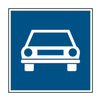
- 99. Az alábbiak közül milyen járművel szabad igénybe venni az ábrán látható táblával jelzett utat? #703416
- Gépjárművel.
- Minden kifogástalan állapotú járművel.
- Segédmotoros kerékpárral.
- 100. Az alábbiak közül milyen járműszerelvénnyel szabad igénybe venni az e táblával jelzett utat? #703418
- Motorkerékpárból és utánfutóból álló járműszerelvénnyel.
- Lassú járműből és pótkocsiból álló járműszerelvénnyel.
- Mezőgazdasági vontatóból és pótkocsiból álló járműszerelvénnyel.
- 101. Mit jelent ez a közúti jelzés? #703463
- Azt, hogy az autópálya úthasználati díj megfizetésével vehető igénybe.
- Azt, hogy az autóút úthasználati díj megfizetésével vehető igénybe.
- Azt, hogy az főútvonal úthasználati díj megfizetésével vehető igénybe.
- 102. Az alábbiak közül milyen járművek vehetik igénybe a jelzőtáblával jelzett utat? #703464
- Csak gépjárművek.
- Csak gépkocsik.
- Csak személygépkocsik, autóbuszok és tehergépkocsik.
- 103. Autóbusszal közlekedve - az alábbiak közül - milyen feltétellel veheti igénybe a jelzőtáblával jelzett utat? #703484
- Az úthasználati díj megfizetésével.
- Az úthasználati díj befizetését garantáló nyilatkozat kitöltésével.
- A jármű kifogástalan műszaki állapotát igazoló bizonyítvánnyal.
- 104. Mire utal a kiegészítő táblán lévő ’video kontroll!’ felirat? #703485
- A díjfizetési kötelezettség ellenőrzésének módjára.
- Térfigyelő kamerára.
- A személyiségi jogok sérelmének veszélyére.
- 105. A jelzőtáblát követően milyen sebességgel közlekedhet a külön jogszabályban meghatározott követelményeknek megfelelő autóbusszal? #703492
- Legfeljebb 70 km/h sebességgel.
- Legfeljebb 100 km/h sebességgel.
- Legfeljebb 80 km/h sebességgel.
- 106. Mi a jelzőtábla jelentése? #703594
- ’Főútvonal’
- ’Autóút’
- ’Mellékút vége’
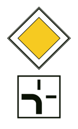
- 107. Mi a jelzőtábla jelentése? #703596
- Az útkereszteződésben a főútvonal balra kanyarodik.
- Az útkereszteződésben kötelező balra kanyarodni.
- A főútvonal forgalmát elterelték a vastag vonal szerinti irányba.

- 108. Mit jelent az ábrán látható jelzőtábla? #703597
- A főútvonal 100 m megtétele után véget ér.
- A főútvonal 100 m megtétele után kezdődik.
- Az autóút 100 m megtétele után véget ér.

- 109. Mi a jelzőtábla jelentése? #703802
- ’Kijelölt gyalogos-átkelőhely’
- ’Mozgólépcső’
- ’Gyalogos alul- vagy felüljáró’
- 110. Milyen távolságra kell a kijelölt gyalogos-átkelőhelyre számítania közúti jelzőtábla után? #703803
- Közvetlenül a közúti jelzőtábla után.
- A közúti jelzőtábla után 25 méterre.
- Lakott területen 50-100 méterre, lakott területen kívül 150-250 méterre a közúti jelzőtábla után.

- 111. Mit jelez ez a jelzőtábla? #703804
- A besorolás rendjét az útkereszteződés előtt.
- Kapaszkodósávot.
- Párhuzamos közlekedésű utat.

- 112. Mi az útburkolati jel jelentése? #703805
- ’Kerékpárosok közlekedésére kijelölt úttest’
- ’Várakozóhely kerékpárosok részére’
- ’Előretolt kerékpáros felállóhely’

- 113. Mit nem szabad az alábbiak közül ennél az útburkolati jelnél csinálni? #703806
- Járművel folyamatosan ezen az útburkolati jelen haladni.
- Másik járművet ezt az útburkolati jelet átlépve kikerülni.
- Kerékpárost ezt az útburkolati jelet átlépve megelőzni.
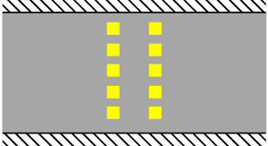
- 114. Mi az útburkolati jel jelentése? #703807
- ’Utat keresztező kerékpárút’
- ’Kötelező megállás’
- ’Előretolt kerékpáros felállóhely’

- 115. Ezen az ’X’ jelű útburkolati jelen... #703809
- járművéből az utasa kiszállhat.
- 3 percre elhagyhatja járművét.
- az ott lakók engedélyével várakozhat is.

- 116. Mi a jelzőtábla jelentése? #703911
- ’Autóbusz-megállóhely’
- ’Trolibusz-megállóhely’
- ’Villamos-megállóhely’

- 117. Mi a jelzőtábla jelentése? #703912
- ’Trolibusz-megállóhely’
- ’Autóbusz-megállóhely’
- ’Villamos-megállóhely’
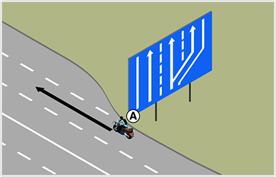
- 118. Mit jelent a képen látható közúti jelzés? #703913
- ’Kapaszkodósáv’
- ’A besorolás rendje’ a következő útkereszteződésben.
- ’Lassítósáv’

- 119. Mi a jelzőtábla jelentése? #703952
- ’Út melletti kerékpárút’
- ’Kerékpársáv’
- ’Kerékpáros közvetett kapcsolat’

- 120. Mi a jelzőtábla jelentése? #703953
- ’Kerékpáros közvetett kapcsolat’
- ’Előretolt kerékpáros felállóhely’
- ’Kerékpárút egyenesen és balra is’
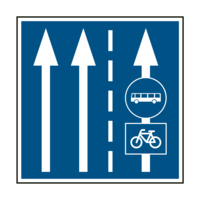
- 121. Mi a jelzőtábla jelentése? #703955
- ’Kerékpárosok által is használható autóbusz-forgalmi sáv’
- ’Autóbusz-megállóhely, ahol a kerékpáros is megállhat’
- ’Autóbusszal és kerékpárral a jobb szélső forgalmi sávra ráhajtani tilos’

- 122. Hogyan nevezzük ezt a közúti jelzőtáblát? #703981
- ’Kerülő útirányt jelző tábla’
- ’Kötelező haladási irány’
- ’Besorolás rendjét jelző tábla’

- 123. Ezen a sárga színű útburkolati jelen... #704152
- szabad áthajtani.
- nem szabad áthajtani.
- csak megállni szabad.

- 124. Átlépheti-e ezt az útburkolati jelet előzés céljából? #704153
- A záróvonal felől nem, a terelővonal felől viszont igen.
- A záróvonal felől igen, a terelővonal felől viszont nem.
- Igen, bármelyik irányból.
- 125. Megfordulhat-e ezen az útburkolati jelen? #704154
- Csak a terelővonal felől.
- Igen, akár a terelővonal, akár a záróvonal felől.
- Nem, mivel csak előzés céljából lépheti át ezt az útburkolati jelet.

- 126. Mit jelent az ábrán látható sárga útburkolati jel? #704156
- ’Veszélyes hely előjelzése’.
- ’Merőleges várakozóhelyek’.
- ’Kerékpározni tilos’.
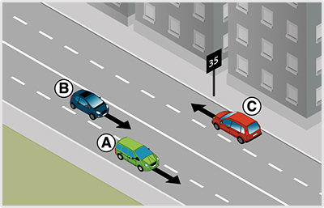
- 127. Mit jelez az úttest jobb szélén lévő táblán látható számérték? #704157
- Azt a sebességet, amellyel forgalomirányító fényjelző készülékek előtt az egyenletes haladás érdekében közlekedni célszerű.
- A telepített sebességmérő rendszer ellenőrzési sebességét.
- Azt a sebességet jelzi, amelyet nem léphet át járművével.
- Azt a minimális követési távolságot jelzi, amit a következő forgalomirányító fényjelző készülék megközelítéséig meg kell tartania.

- 128. Ön autópályán utolér egy ilyen táblával megjelölt autóbuszt. Megelőzheti-e? #704283
- Igen.
- Nem.
- Igen, de csak lakott területen kívül.
- Igen, de csak akkor, ha az autóbusz vezetője nem működteti az autóbusz vészvillogót.
- Igen, de csak akkor, ha az autóbusz vezetője működteti az autóbusz vészvillogóját.
- 129. Egy ilyen táblával megjelölt, valamint vészvillogóját működtető jármű a párhuzamos közlekedésre alkalmas úttesten áll. Mikor cselekszik szabályosan? #704284
- Ha fokozott óvatossággal kerülöm ki az autóbuszt.
- Ha megállok az autóbusz mögött.
- Ha az autóbusz kikerülése közben hangjelzést adok.
- Ha az autóbusz kikerülése közben én is működtetem a járművem vészvillogót.
- Ha én is megállok a mellette lévő forgalmi sávban és bekapcsolom a járművem vészvillogóját.

- 130. A jelzőtábla alatt nincs kiegészítő tábla. Közlekedhet-e a kerékpáros a jelölt iránnyal szemben? #715033
- Nem.
- Igen, de csak az úttest bal szélén.
- Igen, bárhol.
- 131. Autóbuszt vezetve miről tájékoztatja Önt ez a közúti jelzőtábla? #715036
- Arról, hogy az autóbusz-forgalmi sávban közlekedhetnek kerékpárosok is.
- Arról, hogy az autóbusz-forgalmi sávban nem közlekedhetnek kerékpárosok.

- 132. Mi a jelzőtábla jelentése? #715037
- Zsákutca’.
- Terelőút’.
- Egyirányú forgalmú út’.
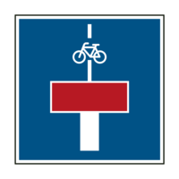
- 133. Szabályos-e, ha járművével behajt abba az utcába, melynek elején ezt a közúti jelzőtáblát helyezték el? #715038
- Igen, bármely járművel szabályos a behajtás.
- Nem.
- Igen, de csak kerékpárral való behajtáskor.

- 134. Mi a jelzőtábla jelentése? #715039
- Autóbusz-forgalmi sáv’.
- Autóbusz-megállóhely’.
- Autóbusszal behajtani tilos’.

- 135. Mi a jelzőtábla jelentése? #715040
- Kapaszkodósáv vége’.
- Gyorsítósáv vége’.
- Párhuzamos közlekedésre alkalmas út vége’.

- 136. Mi a jelzőtábla jelentése? #715042
- Kerékpársáv’.
- Kerékpáros nyom’.
- Kerékpárút’.
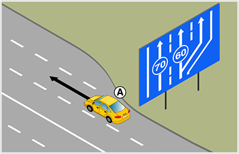
- 137. Mit jelent az ábrán látható közúti jelzőtáblán szereplő 60-as számérték? #715056
- 60 km/h-nál kisebb sebességgel haladó jármű a kapaszkodósávot köteles igénybe venni.
- A következő útkereszteződésben ez a sáv a 60-as úton folytatódik.
- 60 méternél kisebb követési távolságot tartani nem szabad.

- 138. Mi a jelzőtábla jelentése? #715057
- Lakott terület kezdete’.
- Útvonal-megerősítő tábla’.
- Műemlékek’.

- 139. Találkozhat-e lakott területen kapaszkodósáv jelzőtáblával? #715059
- Igen.
- Nem.

- 140. Mire figyelmezteti Önt ez a sárga útburkolati jel? #715064
- Az úttest lezárása miatt megváltozott forgalmi rendre.
- A menetrend szerint közlekedő járművek terelő útirányára.
- Arra, hogy kerékpárosok keresztezhetik a forgalmi sávot.
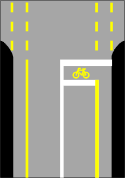
- 141. Mit jelez ez az útburkolati jel? #715065
- Előretolt kerékpáros felállóhelyet.
- Kerékpáros közvetett kapcsolatot.
- Kerékpársáv végét.

- 142. Előzhet-e úgy, hogy közben átlépi ezt az útburkolati jelet? #715066
- Nem.
- Igen, ha nincs kihelyezve ’Előzni tilos’ jelzőtábla.
- Igen, ha kerékpárost előz.
- 143. A járda szegélyére folytonos sárga vonalat festettek fel. Mire figyelmezteti Önt ez az útburkolati jel? #715070
- Megállási tilalomra.
- Arra, hogy a kerékpárosok a járdán közlekednek.
- Mozgássérült várakozóhelyre.
- Várakozási tilalomra.
- 144. Közlekedhet-e kerékpáron kívül más jármű is a ’Kerékpáros nyom’ útburkolati jellel megjelölt úttest részen? #715071
- Igen.
- Nem.
- 145. A képen látható helyen megelőzheti-e a ’B’ jelű autóbusz az ’A’ jelű járművet? #715112
- Amennyiben az előzés feltételei adottak, akkor igen.
- Nem, mert ez az útburkolati jel is záróvonalnak felel meg, amin nem szabad áthajtani.
- 146. Az ábrán látható sárga útburkolati jelet látva kötelesek-e az érkező járművek csökkenteni a sebességüket? #715602
- Nem, de érdemes felkészülni arra, hogy az úton hamarosan sebességkorlátozás lesz, vagy megállási kötelezettsége keletkezik.
- Igen, lakott területen max. 30, lakott területen kívül max. 60 km/h sebességgel közlekedhet az útburkolati jel kezdetétől.
- 147. Van-e valamilyen kötelezettsége a ’B’ jelű autóbusz vezetőjének, ha ehhez a sárga útburkolati jelhez ér? #715603
- Nem, de érdemes felkészülni arra, hogy az úton hamarosan sebességkorlátozás lesz, vagy megállási kötelezettsége keletkezik.
- Igen, a sebességét 30 km/h-ra kell csökkentenie.
- Igen, ez a jel kötelező megállásra utasít, meg kell állnia.
- 148. Az ábrán látható ’A’ jelű autóbusz egyenesen kíván továbbhaladni. Fel kell-e készülnie arra, hogy az útkereszteződésben elsőbbséget kell adnia? #715604
- Igen, a jobbról érkező járművek részére.
- Nem, mert ebben az útkereszteződésben nem érkezhetnek jobbról járművek.
- 149. Útkereszteződésben jobbra kíván kanyarodni. Eközben a... #721947
- jobbra bekanyarodást a nyitott kerékpársávról kell végrehajtani
- jobbra bekanyarodást a nyitott kerékpársáv melletti forgalmi sávból kell végrehajtania.

- 150. Mit jelez ez az útburkolati jel? #724151
- A forgalmi sávot a jelzett irányban el kell hagyni.
- Az útkereszteződés előtt félre kell állni.
- A ferdén becsatlakozó úton egyirányú forgalom van.
Elsőbbség jelzőtáblák (1 db., 1 pont)

- 151. Járművezetőként milyen magatartást kell tanúsítani ezt a táblát észlelve? #703419
- Az útszűkületben elsőbbséget kell adni a szembejövő jármű részére.
- Semmi rendkívülit, ez a tábla elsőbbséget biztosít a szembejövő járművel szemben.
- Nem szabad behajtani az egyirányú forgalmú útra.
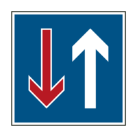
- 152. Mi a neve ennek a jelzőtáblának? #703420
- ’Elsőbbség a szembejövő forgalommal szemben’
- ’A szembejövő forgalom elsőbbsége’
- ’Egyirányú forgalmú út’
- 153. Hol kell teljesíteni a megállási kötelezettséget az alábbiak közül? #703482
- A megállás helyét jelző útburkolati jel előtt.
- Az első kerekekkel a megállás helyét jelző útburkolati jelen.
- A megállás helyét jelző útburkolati jel előtt vagy kicsivel utána.

- 154. Mire kötelezi ez a jelzőtábla? #703598
- Elsőbbséget kell adnia a keresztező (betorkolló) úton érkező járművek részére.
- Elsőbbséget kell adnia a figyelmeztető jelzést használó járművek részére.
- Kötelező megállásra.
- 155. Az alábbiak közül mire kötelezi ez a jelzőtábla? #703599
- Megállással történő elsőbbségadásra.
- Megállás nélküli elsőbbségadásra.
- Csak megállásra.

- 156. Mit jelent ez a jelzőtábla? #703601
- ’Elsőbbségadás kötelező’ tábla következik 100 m megtétele után.
- ’Állj! Elsőbbségadás kötelező’ tábla következik 100 m megtétele után.
- ’Főútvonal’ tábla következik 100 m megtétele után.
- 157. Mit jelent ez a jelzőtábla? #703602
- Azt, hogy az útszűkületben elsőbbséget kell adni a szembejövő jármű részére.
- Azt, hogy az útszűkület után tilos egyenesen továbbhaladni.
- Azt, hogy ebből az irányból tilos behajtani az útszűkületbe.
- 158. Mit jelent ez a jelzőtábla? #703604
- Azt, hogy az útszűkületben a járműnek elsőbbsége van a szembejövő járművel szemben.
- Azt, hogy az útszűkület után egyenesen kell továbbhaladni.
- Azt, hogy az út egyirányú forgalmú a jelzőtáblától.
Utasítási-, tilalmi jelzőtáblák (1 db., 1 pont)
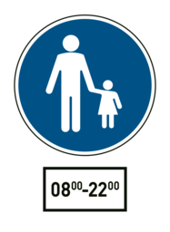
- 159. Gépjárművel közlekedve szabad-e behajtani a jelzőtáblával jelzett területre? #703428
- Igen, a kiegészítő táblán jelzett időszakon kívül, célforgalomban.
- Igen, a kiegészítő táblán jelzett időszakban, célforgalomban.
- Nem.
- 160. Milyen sebességgel közlekedhetnek a járművek a jelzőtáblával jelzett területen? #703429
- Legfeljebb 20 km/h sebességgel, de csak a kiegészítő táblán jelzett időszakon kívül, célforgalomban.
- Legfeljebb 10 km/h sebességgel, de csak a kiegészítő táblán jelzett időszakon kívül, célforgalomban.
- Legfeljebb 5 km/h sebességgel, de csak a kiegészítő táblán jelzett időszakon kívül, célforgalomban.

- 161. Gépjárművel közlekedve szabad-e behajtani a jelzőtáblával jelzett területre? #703430
- Igen, a kiegészítő táblán jelzett időszakon kívül, az ott lakók járműveivel, továbbá engedéllyel.
- Nem.
- Igen, a kiegészítő táblán jelzett időszakban.

- 162. Gépjárművel közlekedve szabad-e behajtani a jelzőtáblával jelzett területre? #703431
- Nem.
- Igen.

- 163. Mi a jelzőtábla neve? #703437
- ’Előzni tilos’
- ’Személygépkocsival előzni tilos’
- ’Gépjárművel előzni tilos’
- 164. Gépjárművel közlekedve az alábbiak közül milyen járművet szabad megelőzni e jelzőtáblát követően? #703439
- Az állati erővel vont járművet.
- A mezőgazdasági vontatót.
- A lassú járművet.

- 165. Megszünteti-e ez a jelzőtábla a ’Megfordulni tilos’ jelzőtábla hatályát? #703442
- Igen.
- Nem.

- 166. Mikor nem kötelező legalább a táblával megjelölt sebességgel közlekedni? #703465
- Akkor, ha az a személy- és vagyonbiztonságot veszélyeztetné.
- Akkor, ha a vezető alacsonyabb sebességgel kíván közlekedni.
- Mindig kötelező legalább a táblán megjelölt sebességgel közlekedni.

- 167. Mire utasítja ez a jelzőtábla a gépkocsik vezetőit? #703466
- Arra, hogy a jármű legalább egy hajtott tengelyén lévő gumiabroncsokat hólánccal kell felszerelni.
- Arra, hogy a jármű legalább egy hajtott kerekén lévő gumiabroncsot hólánccal kell felszerelni.
- Arra, hogy a jármű minden tengelyén lévő gumiabroncsokat hólánccal kell felszerelni.
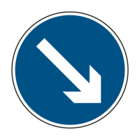
- 168. Mi a jelzőtábla neve? #703467
- ’Kikerülési irány’
- ’Kötelező haladási irány’
- ’Szoros jobbra tartási kötelezettség’
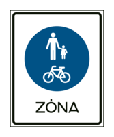
- 169. Szabad-e behajtani gépkocsival a jelzőtáblával jelzett területre? #703469
- Igen, mozgáskorlátozott személy szállításakor.
- Nem.
- Igen, feltétel nélkül.

- 170. Gépkocsival közlekedve szabad-e megfordulni a jelzőtábla utáni útkereszteződésben? #703470
- Nem.
- Igen.
- Csak akkor, ha a jelzőőr erre engedélyt ad.
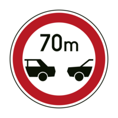
- 171. Mit jelez ez a jelzőtábla? #703472
- Az úton tilos a járműveknek a jelzőtáblán megjelöltnél kisebb távolságban követniük egymást.
- Az úton tilos a gépjárműveknek a jelzőtáblán megjelöltnél kisebb távolságban követniük egymást.
- Az úton tilos a személygépkocsiknak a jelzőtáblán megjelöltnél kisebb távolságban követniük egymást.
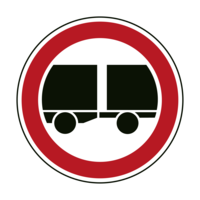
- 172. Milyen járműszerelvénnyel szabad behajtani ennél a jelzőtáblánál? #703473
- A vonójárműből és egytengelyes vagy félpótkocsiból álló járműszerelvénnyel.
- Semmilyen járműszerelvénnyel.
- A személygépkocsiból és kéttengelyes pótkocsiból álló járműszerelvénnyel.
- 173. Az alábbiak közül mely jelzőtáblák tilalmát szünteti meg ez a jelzőtábla? #703474
- Az ’Előzni tilos’, a ’Megfordulni tilos’ és a ’Sebességkorlátozás’ jelzőtáblákét.
- Az ’Előzni tilos’, a ’Megfordulni tilos’ és a ’Kötelező haladási irány’ jelzőtáblákét.
- Az ’Előzni tilos’, a ’Megfordulni tilos’ és a ’Kötelező legkisebb sebesség’ jelzőtáblákét.

- 174. Mit jelez ez a táblakombináció? #703475
- Azt, hogy az útra a kiegészítő táblán jelzett időszakban mindkét irányból tilos behajtani.
- Azt, hogy az útra a kiegészítő táblán jelzett időszakon kívül mindkét irányból tilos behajtani.
- Azt, hogy az útra a kiegészítő táblán jelzett időszakban ebből az irányból tilos behajtani, de parkolni szabad.

- 175. Mi a jelzőtábla neve? #703476
- ’Gépjárművel, mezőgazdasági vontatóval és lassú járművel behajtani tilos’
- ’Személygépkocsival behajtani tilos’
- ’Személygépkocsival és mopedautóval behajtani tilos’

- 176. Mit jelez ez a jelzőtábla? #703477
- Azt, hogy a ’Korlátozott sebességű övezet vége’ tábláig tilos a megjelöltnél nagyobb sebességgel haladni.
- Azt, hogy a következő útkereszteződésig tilos a megjelöltnél nagyobb sebességgel haladni.
- Azt, hogy a ’Lakott terület vége’ tábláig tilos a megjelöltnél nagyobb sebességgel haladni.
- 177. Milyen járművekre vonatkozik a ’Kötelező haladási irány’ jelzőtábla alatt elhelyezett kiegészítő tábla? #703490
- A menetrend szerint közlekedő autóbuszokra.
- Az autóbuszokra.
- A távolsági autóbuszokra.
- 178. Vonatkozik-e a tehergépkocsira a ’Kötelező haladási irány’ jelzőtábla alatt elhelyezett kiegészítő tábla? #703491
- Nem.
- Igen.
- Igen, ha a rakfelületen legalább 10 utast szállít.

- 179. Mi a jelzőtábla jelentése? #703606
- ’Kötelező haladási irány’
- ’Egyirányú forgalmú út’
- ’Terelőút’

- 180. Mi a jelzőtábla jelentése? #703607
- ’Kötelező haladási irány’
- ’Kikerülési irány’
- ’Egyirányú forgalmú út’
- 181. Mi a jelzőtábla jelentése? #703609
- ’Kikerülési irány’
- ’Kötelező haladási irány’
- ’Terelőút’
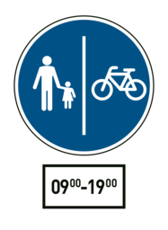
- 182. Szabad-e segédmotoros kerékpárral a jelzőtáblával jelzett területre behajtani? #703610
- Igen, de csak a megjelölt időszakon kívül.
- Igen, a megjelölt időszakban.
- Nem.
- 183. Segédmotoros kerékpárral milyen sebességgel szabad közlekedni a jelzőtáblával jelzett területen? #703611
- Csak a megjelölt időszakon kívül szabad közlekedni, és akkor is csak legfeljebb 20 km/h sebességgel.
- Legfeljebb 40 km/h sebességgel.
- A jelzőtáblával jelzett területre nem szabad segédmotoros kerékpárral behajtani.
- 184. Szabad-e behajtani menetrend szerinti autóbusszal a jelzőtáblával jelzett útra? #714857
- Nem.
- Igen, ha gyorsjáratban közlekedik.
- Igen, ha távolsági viszonylatban közlekedik.

- 185. Segédmotoros kerékpárral közlekedve figyelembe kell-e venni a jelzőtábla jelentését? #714908
- Nem.
- Igen.
- Csak akkor, ha nem szállít utast.

- 186. Szabad-e segédmotoros kerékpárral behajtani a jelzőtáblával jelzett útra? #714909
- Nem.
- Igen.
- Csak akkor, ha a járművezető a jelzőtáblával jelzett területen lakik.

- 187. Szabad-e ennél a jelzésnél megállás nélkül továbbhaladni? #714910
- Nem.
- Igen, kivéve határátkelőhelyen.
- Igen, ha a vám- és pénzügyőr jelzéséből más nem következik.
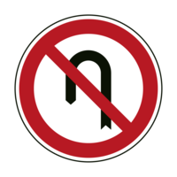
- 188. Szabad-e megfordulni a jelzőtáblát követő útkereszteződésben? #714911
- Igen.
- Nem.
- 189. Megszünteti-e az ábrán látható jelzőtábla a ’Megfordulni tilos’ jelzőtábla tilalmát? #714914
- Igen.
- Nem.

- 190. Szabad-e megfordulni a jelzőtáblát követő útkereszteződésben? #714915
- Nem.
- Igen, de csak segédmotoros kerékpárral.
- Igen, egy nyomon haladó járművel.
- 191. A képen látható helyen megelőzheti-e a ’B’ jelű autóbusz az ’A’ jelű kerékpárost? #715031
- Igen.
- Nem, mert a jelzőtáblával jelzett előzési tilalmat be kell tartania.
- 192. Az ’A’ jelű autóbusz az előtte haladó járművek előzését már csak az ’Előzni tilos’ jelzőtábla után tudná befejezni. Válassza ki a helyes állítást! #715062
- Az ’Előzni tilos’ jelzőtábla után csak a ’B’ jelű kerékpárost szabad megelőzni.
- Az ’Előzni tilos’ jelzőtábla után csak a ’C’ jelű személygépkocsit szabad megelőzni.
- Az ’Előzni tilos’ jelzőtábla után mindkét járművet szabad megelőzni.
- 193. Ön az ’A’ jelű autóbuszt vezeti. Megelőzheti a képen látható helyen a ’B’ jelű kerékpárost, ha az előzést már csak az ’Előzni tilos’ jelzőtábla után tudná befejezni? #715063
- Igen.
- Nem.
- Csak akkor, ha eközben nem hajt át a menetirány szerinti bal oldalra.

- 194. A képen látható helyen az ’A’ jelű autóbusz a ’B’ jelű kerékpárost szeretné megelőzni. Mikor szabályos ez? #721313
- Akkor is, ha az ’Előzni tilos’ jelzőtábla után fejezi be az előzést.
- Csak akkor, ha az ’Előzni tilos’ jelzőtábláig befejezi az előzést.
- Soha nem szabályos, mert ezen az úton a jelzőtábla előtt sem előzhet kerékpárost.
- 195. A képen látható helyen az ’A’ jelű autóbusz a ’B’ jelű kerékpárost szeretné megelőzni. Mikor szabályos ez? #722255
- Akkor is, ha az ’Előzni tilos’ jelzőtábla után fejezi be az előzést.
- Csak akkor, ha az ’Előzni tilos’ jelzőtábláig befejezi az előzést.
- Soha nem szabályos, mert ezen az úton a jelzőtábla előtt sem előzhet kerékpárost.
- 196. Ön a kormánykerékkel jelzett járművet vezetve a képen látható helyen a ’B’ jelű kerékpárost szeretné megelőzni. Mikor szabályos ez? #722260
- Akkor is, ha az ’Előzni tilos’ jelzőtábla után fejezi be az előzést.
- Csak akkor, ha az ’Előzni tilos’ jelzőtábláig befejezi az előzést.
- Soha nem szabályos, mert ezen az úton a jelzőtábla előtt sem előzhet kerékpárost.
- 197. Ön a kormánykerékkel jelzett gépjárművet vezeti. Szabad-e megelőznie az ábrázolt helyen az ’A’ jelű, állati erővel vontatott járművet? #723282
- Igen.
- Nem, mert a jelzőtábla tiltja ezt az előzést.
Megállási-, várakozási-, veszélyt jelző táblák (1 db., 1 pont)
- 198. A veszélyt jelző táblákat követően milyen távolságban kell számítani a veszélyes helyre? #703355
- Lakott területen 50-100 m, autópályán 250-500 m, lakott területen kívül egyéb úton 150-250 m távolságban.
- Lakott területen 30 m, lakott területen kívül 50 m távolságban.
- Lakott területen 25 m, lakott területen kívül 50 m távolságban.
- Közvetlenül a jelzőtáblát követően, lakott területen 50-100 m, autópályán 250-500 m, lakott területen kívül egyéb úton 150-250 m hosszon.
- Minden esetben a veszélyt jelző tábla alatt elhelyezett kiegészítő táblán megjelölt távolságban.

- 199. Mit jelez ez a jelzőtábla? #703356
- A vasúti átjáró kezdetét.
- A vasúti átjáró végét.
- A továbbhaladás tilalmát.

- 200. Elhelyezik-e minden vasúti átjárónál ezt a jelzőtáblát? #703357
- Nem.
- Igen.
- Nem, csak a kétvágányú vasúti átjáróknál.

- 201. Mit jelez ez a jelzőtábla? #703358
- Sorompó nélküli vasúti átjárót.
- Vasútállomást.
- A vasúti átjáró kezdetét.

- 202. Mit jelez ez a jelzőtábla? #703359
- Fénysorompóval és sorompóval biztosított vasúti átjárót.
- Fénysorompóval biztosított, sorompó nélküli vasúti átjárót.
- Forgalomirányító fényjelző készüléket.

- 203. Mit jelez ez a jelzőtábla? #703360
- Azt, hogy az útkereszteződésben a jobbról érkező járműnek van elsőbbsége.
- Azt, hogy az útkereszteződésben a balról érkező járműnek van elsőbbsége.
- Vasúti átjáró kezdetét.

- 204. Mit jelez ez a jelzőtábla? #703361
- Azt, hogy az útkereszteződésben a járműnek elsőbbsége van a keresztező úton érkező járművel szemben.
- Azt, hogy az útkereszteződésben a jobbról érkező járműnek van elsőbbsége.
- Főútvonalat.

- 205. Mit jelez ez a jelzőtábla? #703362
- Azt, hogy az úttest 500 m-en keresztül lényegesen rosszabb állapotban van a megelőző útszakaszhoz képest.
- Azt, hogy a két bukkanó között 500 m a távolság.
- 500 m megtétele után bukkanók következnek.

- 206. Milyen veszélyre figyelmeztet ez a jelzőtábla? #703363
- Kavicsfelverődésre.
- Sáros útra.
- Poros földútra.

- 207. Mire kell számítani e jelzőtáblát követően? #703365
- Arra, hogy gyermekek lépnek az úttestre.
- Játszótérre.
- Gyalogosokra.

- 208. Milyen okból szabad megállni a jelzőtáblát követően? #703443
- Forgalmi vagy műszaki okból.
- Csak műszaki okból.
- Csak forgalmi okból.

- 209. Mit jelent ez a közúti jelzés? #703448
- A várakozás ellenőrző óra vagy jegykiadó automata működtetésével engedélyezett.
- A várakozás csak ellenőrző óra működtetésével engedélyezett.
- A várakozás csak jegykiadó automata működtetésével engedélyezett.

- 210. Szabad-e gépjárművel várakozni 12:00 órakor a jelzőtáblát követő 20 m-en belül? #703449
- Igen, ha a járművezető a járműnél marad, és áruszállító jármű érkezésekor a rakodóhelyet haladéktalanul szabaddá teszi.
- Nem.
- Igen, feltétel nélkül.

- 211. Mit jelent ez a közúti jelzés? #703450
- A szabálytalanul várakozó járművet elszállíthatják.
- Műszaki hibás járművek várakozóhelyét jelzi.
- A szabálytalanul megálló járművet elszállíthatják.
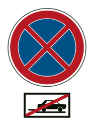
- 212. Mit jelent ez a közúti jelzés? #703452
- Az úttesten kívül az útpadkán is tilos a megállás és a várakozás.
- Az úttesten kívül a leállósávon is tilos a megállás és a várakozás.
- Az útpadkán és a leállósávon tilos a megállás és a várakozás.
- 213. Az út mely részére vonatkozik a jelzőtáblával jelzett tilalom? #703453
- Az úttestre.
- Az úttestre és az útpadkára.
- Az úttestre és a járdára.

- 214. Az út mely részére vonatkozik a jelzőtáblával jelzett tilalom? #703454
- Az úttestre.
- Az úttestre és az útpadkára.
- Az úttestre és a járdára.
- 215. Az út mely részére vonatkozik a jelzőtáblával jelzett tilalom? #703480
- Az úttestre.
- Az úttestre és az útpadkára egyaránt.
- Az úttestre, az útpadkára és a leállósávra egyaránt.
- 216. Autóbusszal - amennyiben a vezető a járműnél marad - mennyi ideig szabad a táblával jelzett területen tartózkodni? #703487
- A jelzett időszakban addig, amíg nem érkezik áruszállítást végző jármű.
- Korlátlan ideig.
- Csak a le- és felszállás idejéig.
- 217. Az ábrán látható jelzőtábla hatálya a következő útkereszteződésig tart, kivéve, ha... #703613
- a jelzőtábla alatt elhelyezett kiegészítő tábla ennél rövidebb távolságot jelöl meg.
- útburkolati jelből más következik.
- a megállás szabályaiból más következik.
- 218. Az ábrán látható jelzőtábla hatálya a következő útkereszteződésig tart, kivéve, ha... #703614
- ellentétes értelmű jelzőtábla a tilalmat előbb feloldja.
- útburkolati jelből más következik.
- a megállás szabályaiból más következik.
- 219. Mit tilt az ábrán látható jelzőtábla? #703617
- A megállást és a várakozást.
- Csak a megállást.
- Csak a várakozást.
- 220. Mit tilt az ábrán látható jelzőtábla? #703618
- A várakozást.
- A megállást és a várakozást.
- A megállást.

- 221. Mire kell számítani e jelzőtáblát követően? #714833
- Arra, hogy az úttest erősen csúszóssá válhat.
- Egymást követő útkanyarulatokra.
- Nyomvályús útszakaszra.

- 222. Mit jelez ez a jelzőtábla? #714840
- Az úton a korábbi forgalmi rendtől eltérően kétirányú forgalom van.
- A szembejövő forgalom elsőbbségét.
- Azt, hogy osztott pályás út következik.

- 223. Mit jelez ez a jelzőtábla? #714841
- Az úttest szélessége a megelőző útszakaszhoz képest számottevően csökken.
- A forgalmi sáv szélessége a megelőzőhöz képest számottevően csökken.
- Az út szélessége a megelőző útszakaszhoz képest számottevően csökken.

- 224. Mit jelez ez a jelzőtábla? #714843
- Azt, hogy az utat villamospálya keresztezi.
- A villamosjárat megállóját.
- Vasúti átjárót.

- 225. Mit jelez ez a jelzőtábla? #714844
- Azt, hogy az úton a domborzati viszonyok miatt korlátozott a kilátás.
- Egyenetlen úttestet.
- Jelentős emelkedőt vagy lejtőt.
- 226. Mi a jelzőtábla neve? #714845
- Bukkanó’
- Egyenetlen úttest’
- Domb’
- 227. Mit jelez ez a jelzőtábla? #714846
- 500 m hosszon fennálló, a megelőző útszakaszhoz képest lényegesen rosszabb állapotú úttestet.
- Azt, hogy 500 m megtétele után a megelőző útszakaszhoz képest lényegesen rosszabb állapotú az úttest.
- Egymástól 500 m-re lévő két bukkanót.
- 228. Ön az ’A’ jelű autóbusszal a képen látható helyen megállt. Mikor szabályos ez? #715088
- Ha a megállásra műszaki hiba miatt került sor.
- Ha a jármű utasa itt szeretne kiszállni.
- Ha az ábrán látható házban lakik, és az erről szóló igazolást elhelyezi a szélvédője mögé.
- 229. Szabályosan tartózkodik-e egyhelyben az ábrán látható ’A’ jelű autóbusz? #715089
- Nem.
- Csak 5 perc időtartamig.
- Csak akkor, ha utasa ki szeretne szállni.
- 230. Az ábrán látható helyen őrizetlenül hagyhatja-e járművét az ’A’ jelű autóbusz vezetője? #715090
- Nem.
- Igen, mert az úttesten nincs záróvonal felfestve.
- Maximum 5 percig.
- 231. Milyen vasúti átjárót biztosító jelzőberendezés következik e jelzőtábla után? #715127
- Teljes vagy félsorompóval együtt felszerelt fénysorompó.
- Csak fénysorompó.
- Csak teljes sorompó.

- 232. Jelezheti-e a vasúti átjárót ez a közúti jelzés? #715135
- Nem.
- Igen.
Közlekedés vasúti átjáróban (1 db., 1 pont)
- 233. Hogyan szabad megközelíteni a vasúti átjárót? #703544
- Fokozott óvatossággal.
- Az egyéb úttesten általában elvárt körültekintéssel.
- Az egyéb úttesten általában elvárt figyelemmel.
- 234. Vasúti átjáró megközelítésekor eleget kell-e tenni a vasúti átjáró biztosítására szolgáló közúti jelzéseknek? #703545
- Igen.
- Nem, itt a vasúti szabályok érvényesülnek.
- Nem, csak az érkező vonatra kell fokozottan figyelni.
- 235. Szabályos-e a vasúti átjárón történő áthaladás, ha az áthaladás közben forgalmi okból meg kell állni? #703546
- Nem.
- Igen.
- Igen, ha nem érkezik vasúti jármű.
- 236. Milyen sebességgel kell áthaladni a vasúti átjárón? #703547
- Legalább 5 km/h átlagsebességgel.
- Legalább 5 km/h sebességgel.
- Legfeljebb 5 km/h sebességgel.
- 237. Mi a járművezető teendője vasúti átjáró előtt, ha bármely irányból vasúti jármű közeledik? #703548
- Meg kell állnia.
- Gyorsan át kell haladnia.
- Hangjelzést kell adnia a vasúti jármű vezetője számára.
- 238. Mi a járművezető teendője vasúti átjáró előtt, ha a sorompó rúdja mozgásban van? #703550
- Meg kell állnia.
- Gyorsan át kell haladnia, nehogy rácsukódjon a sorompó.
- Hangjelzést kell adnia a vasúti jármű vezetője számára.
- 239. Mi a járművezető teendője vasúti átjáró előtt, ha a fénysorompó villogó piros jelzést ad? #703551
- Meg kell állnia.
- Ha nem közeledik vasúti jármű, kellő körültekintés után áthaladhat.
- Fényjelzést kell adnia a vasúti jármű vezetője számára.
- 240. Mi a járművezető teendője vasúti átjáró előtt, ha a teljes sorompót kiegészítő berendezés hangjelzést ad? #703552
- Meg kell állnia.
- Amíg a sorompó rúdjai nincsenek teljesen lezárt állapotban, addig még szabad áthaladni.
- Ha nem közeledik vasúti jármű, kellő körültekintés után szabad áthaladni.
- 241. Mi a járművezető teendője vasúti átjáró előtt, ha a fénysorompó nem ad villogó fehér jelzést? #703553
- Meg kell állnia.
- Kellő lassítás után, megállás nélkül továbbhaladhat.
- Ha nem közeledik vasúti jármű, szabad az áthaladás.
- 242. Szabad-e ráhajtani a vasúti átjáróra, ha a fénysorompó villogó fehér fényjelzést ad? #703554
- Igen, amennyiben meggyőződött az áthaladás veszélytelenségéről.
- Igen, minden további nélkül.
- Nem, csak akkor, ha a jelzőőr szabad jelzést ad.
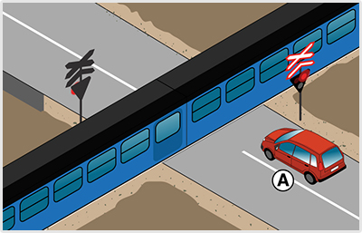
- 243. Mikor indulhat tovább a képen látható vasúti átjáró előtt álló jármű? #703863
- Csak akkor, ha a fénysorompó villogó fehér fényjelzést ad.
- Mivel egyvágányú vasúti átjárót keresztez, a vonat elhaladása után azonnal indulhat.

- 244. Mire következtet abból, ha a vasúti átjáró biztosítására szolgáló fénysorompó semmilyen fényjelzést sem ad? #703864
- A vasúti átjáróban elhelyezett fénysorompó üzemzavarára.
- Arra, hogy gyér forgalmú vasúti átjáróhoz ért, ahol csak a vonat érkezése előtt lép működésbe a fényjelző berendezés.

- 245. Folytathatja-e az útját, ha az ábrán látható, félig leengedett sorompórúd alatt még átfér a járművével? #703894
- Nem.
- Igen, ha nem érkezik vasúti jármű.

- 246. A félsorompó rúdja még nyitott helyzetben van, de a fénysorompó már villogó piros fényjelzést ad. Mit kell tennie? #703951
- Megáll a vasúti átjáró előtt.
- Amennyiben nem lát érkező vasúti járművet, még áthajthat a vasúti átjárón.
- Mivel vasúti jármű csak akkor érkezhet, ha a sorompórúd teljesen le van engedve, még nyugodtan áthajthat a vasúti átjárón.
- 247. Az alábbiak között melyek a vasúti átjáró biztosítására szolgáló jelzőberendezések? #704340
- Fénysorompó, félsorompó és teljes sorompó.
- Fénysorompó, teljes sorompó és csőkorlát.
- Fénysorompó, terelőbóják és elválasztó lánc.
- 248. Hogyan jelzi a fénysorompó a vasúti jármű közeledését? #704341
- Két egymás mellett lévő, felváltva villogó piros fénnyel.
- Egy piros folyamatosan világító fénnyel.
- Két egymás mellett lévő, együttesen villogó piros fénnyel.
- 249. A fénysorompó alsó fénye, amely a biztosító berendezés működőképességét jelzi... #704342
- villogó fehér fényt ad.
- villogó sárga fényt ad.
- folyamatos zöld fényt ad.
- 250. A félsorompó... #704343
- csak az úttest menetirány szerinti jobb oldalát zárja le.
- az úttestet teljes szélességben zárja le.
- 251. A félsorompó rúdja messziről is felismerhető, elsősorban a... #704344
- piros-fehér színéről.
- piros színéről.
- fehér-fekete színéről.
- 252. Mi a járművezető teendője vasúti átjáró előtt, ha ott ’Állj! Elsőbbségadás kötelező!’ jelzőtábla van kihelyezve? #714877
- A megállás helyét jelző útburkolati jel előtt meg kell állnia.
- Semmi, mert ez a jelzőtábla csak az útkereszteződésekre vonatkozik.
- Elegendő lassítani, mert ezt a jelzőtáblát csak éjszaka kell figyelembe venni.
- 253. Mi a járművezető teendője, ha a jármű a vasúti átjáróban elakad? #714878
- Bármilyen módszerrel meg kell kísérelnie a járművet eltávolítani a vasúti átjáróból.
- Haladéktalanul szerelőt kell hívnia.
- Értesítenie kell a rendőrséget.
- 254. Mi a járművezető teendője, ha a vasúti átjáróban elakadt járművet nem képes eltávolítani? #714879
- Haladéktalanul a vasút egy alkalmazottjának, vagy a vasúti jármű vezetőjének tudomására kell hozni a kialakult veszélyhelyzetet.
- Gondoskodnia kell a jármű elszállításáról.
- Minden eszközzel meg kell akadályoznia a sorompó lecsukódását.
- 255. Mi a teendő vasúti átjárónál, ha a sorompók rúdjai nem teljesen nyitott helyzetben állnak? #714896
- Meg kell állni.
- Fokozott óvatosságot kell tanúsítani, de megállás nélkül továbbhaladhat.
- Értesíteni kell a vasút egy alkalmazottját.
- 256. A vasúti átjárót biztosító jelzőberendezés üzemzavara esetén járművel a vasúti átjáróra abban az esetben szabad ráhajtani, ha... #714898
- a megállást követően a megállás helyéről a vasúti pálya mindkét irányba belátható, és a jármű vezetője meggyőződött arról, hogy vasúti jármű nem közeledik.
- a jármű vezetője a szükséges megállást halaszthatatlan feladata ellátása érdekében mulasztja el, ugyanakkor fokozott óvatosságot tud tanúsítani.
- a helyszínre kiérkezett üzemzavar-elhárítók erre engedélyt adtak.
- 257. Találkozhatunk-e vasúti átjáróban félsorompóval együtt elhelyezett fénysorompóval? #715146
- Igen.
- Nem, félsorompóval csak önmagában találkozhatunk.
- Nem, a fénysorompót csak teljes sorompóval egészíthetik ki.
- 258. Kiegészítheti-e valamilyen biztosító berendezés a vasúti átjáróban lévő teljes sorompót? #715241
- Igen, hangjelzés vagy fényjelzés.
- Igen, felül piros, alul zöld színű jelzőlámpa.
- Nem, csak önmagában találkozhatunk teljes sorompóval.
- 259. Milyen biztosító berendezéssel egészíthetik ki a teljes sorompóval biztosított vasúti átjárót? #715251
- Hangjelző berendezéssel és fényjelző berendezéssel.
- Felül két egymás mellett levő felváltva villogó piros fénnyel, alul folyamatosan világító zöld fénnyel.
- Csak a teljes sorompó lezárásának időtartama alatt folyamatosan világító piros fénnyel.
- 260. Mikor indulhat el járművével a vasúti jármű elhaladását követően a sorompóval és fénysorompóval biztosított vasúti átjáróban? #715267
- Csak akkor, ha a sorompó rúdjai függőleges helyzetben már megálltak és a fénysorompó fehér fényjelzést ad.
- Már a fénysorompó piros fényjelzése alatt is, de csak akkor, ha egyvágányú vasúti átjárón hajt keresztül.
- Már akkor is elindulhat, ha a sorompó rúdja alatt elfér a járművével.
- 261. A vasúti átjáróban a félsorompó rúdja félig nyitott helyzetben van és a fénysorompó semmilyen fényjelzést nem ad. Mit kell tennie ebben az esetben? #715301
- A vasúti átjáró előtt meg kell állnia, és csak akkor halad tovább, ha meggyőződött arról, hogy vasúti jármű nem közeledik.
- Megállás nélkül, fokozott óvatossággal halad át a vasúti átjárón.
- Megáll, és megvárja, hogy a fénysorompó hibáját az illetékes szakemberek kijavítsák.
- 262. Egy olyan vasúti átjáró felé közeledik, ahol a fénysorompó fényjelzést nem ad. Mikor jár el szabályosan? #715321
- Ha a vasúti átjáró előtt megáll, és csak akkor halad tovább, amikor meggyőződött arról, hogy nem közeledik vasúti jármű.
- Ha lassítást és kellő körültekintést követően továbbhalad.
- Ha csak akkor hajt rá a vasúti átjáróra, amikor a fényjelző berendezés újra villogó fehér fényjelzést ad.
- 263. A vonat elhaladása után milyen sebességgel köteles a vasúti átjárón áthajtani a képen látható ’A’ jelű jármű? #715326
- Legalább 5 km/óra átlagsebességgel.
- Legalább 10 km/óra átlagsebességgel.
- Nincs előírva sebességhatár.
- 264. A vasúti átjáróban a fénysorompó villogó fehér jelzése azt jelenti, hogy... #715335
- a biztosító berendezés működik, a járművezető kellő tájékozódást követően fokozott óvatossággal köteles továbbhaladni.
- a vasúti jármű tilos jelzésnél várakozik, ezért Ön akár körültekintés nélkül is áthajthat a vasúti átjárón.
- ez egy szabad jelzés, mely az Ön biztonságát garantálja, ezért Ön akár körültekintés nélkül is áthajthat a vasúti átjárón.
- 265. Mennyi időn belül köteles értesíteni a járművezető a vasút egy alkalmazottját, ha a vasúti átjáróban elakadt járművét nem képes eltávolítani? #721601
- A lehető legrövidebb időn belül.
- 30 percen belül.
- 1 órán belül.
- 266. Mit jelez a vasúti átjáróban a teljes sorompót kiegészítő hangjelző berendezés? #721956
- A sorompó lezárásának a megkezdését és záródását.
- A teljes sorompó zárva tartásának időtartamát..
Gyalogosok, utasok, személyszállítás, teherszállítás, megkülönböztető jelzések (1 db., 1 pont)
- 267. Szabad-e a járművet oly mértékig megterhelni, hogy a tényleges össztömege a megengedett legnagyobb össztömegét meghaladja? #703621
- Nem.
- Igen.
- Csak akkor, ha ez a túlterhelés legfeljebb 10%-os.
- 268. Kijelölt gyalogos-átkelőhelyen a járművel a gyalogos részére... #703713
- elsőbbséget kell adni.
- nem kell elsőbbséget adni.
- kettő, vagy több gyalogos esetén kell elsőbbséget adni.
- csak akkor kell elsőbbséget adni, ha ezzel a forgalmat nem tartja fel.
- 269. Útkereszteződésnél a bekanyarodó járművel a gyalogos részére... #703714
- elsőbbséget kell adni, ha azon az úttesten halad át, amelyre a jármű bekanyarodik.
- csak akkor kell elsőbbséget adni, ha kijelölt gyalogos-átkelőhelyen halad át.
- nem kell elsőbbséget adni.
- kettő, vagy több gyalogos esetén kell elsőbbséget adni.
- 270. Azt a helyet, ahol a gyalogosnak elsőbbsége van, csak olyan sebességgel szabad a járművel megközelíteni, hogy... #703715
- a jármű vezetője az elsőbbségadási kötelezettségének eleget tudjon tenni.
- ez a sebesség a gyalogosban félelmet, veszélyérzetet ne keltsen.
- ez a sebesség a mögöttes forgalmat ne kényszerítse fékezésre.
- a gyalogosok a jármű továbbhaladási szándékáról egyértelműen tudomást szerezzenek.
- 271. Hogyan kell megközelítenie a jármű vezetőjének a kijelölt gyalogos-átkelőhelyet az alábbiak közül? #703716
- Fokozott óvatossággal.
- Állandó sebességgel.
- Kettes sebességi fokozatba kapcsolva.
- Egyes sebességi fokozatba kapcsolva, a tengelykapcsoló csúsztatásával.
- 272. Hogyan kell megközelítenie a jármű vezetőjének a kijelölt gyalogos-átkelőhelyet az alábbiak közül? #703717
- Olyan sebességgel, hogy a járművel a kijelölt gyalogos-átkelőhely előtt meg is tudjon állni.
- Állandó sebességgel.
- Kettes sebességi fokozatba kapcsolva.
- Egyes sebességi fokozatba kapcsolva, a tengelykapcsoló csúsztatásával.
- 273. Hogyan kell elhaladni a kijelölt gyalogos-átkelőhely előtt álló másik jármű mellett? #703718
- Meg kell állni, és továbbhaladni csak akkor szabad, ha meggyőződött arról, hogy azt a gyalogosok elsőbbségének megsértése nélkül megteheti.
- Megállás nélkül, fokozott figyelemmel, mérsékelt sebességgel.
- Megállás nélkül, a biztonságos oldaltávolság megtartásával.
- Egyes sebességfokozatba kapcsolva, a tengelykapcsoló csúsztatásával.
- 274. Hogyan kell elhaladni a kijelölt gyalogos-átkelőhely előtt forgalmi okból megálló másik jármű mellett? #703719
- Meg kell állni, és továbbhaladni csak akkor szabad, ha meggyőződött arról, hogy azt a gyalogosok elsőbbségének megsértése nélkül megteheti.
- Megállás nélkül, fokozott figyelemmel, mérsékelt sebességgel.
- Megállás nélkül, a biztonságos oldaltávolság megtartásával.
- Egyes sebességfokozatba kapcsolva, a tengelykapcsoló csúsztatásával.
- 275. Kikre kell fokozottan ügyelnie a járművezetőnek az úttesten való közlekedése esetén az alábbiak közül? #703720
- Egyedül vagy csoportosan az úttesten áthaladó gyermekekre.
- Egyedül vagy csoportosan a járdán haladó gyermekekre.
- A gyalogos felüljárón áthaladó gyalogosokra.
- A kerékpárosokra, mert ők ittasan is vezethetnek.
- 276. Kikre kell fokozottan ügyelnie a járművezetőnek az úttesten való közlekedése esetén az alábbiak közül? #703721
- A koruk vagy testi fogyatékosságuk miatt saját biztonságukra ügyelni nem képes, úttesten áthaladó személyekre.
- A járda úttest felőli szélén haladó gyalogosokra.
- A gyalogos felüljárón áthaladó gyalogosokra.
- A kerékpárosokra, mert ők ittasan is vezethetnek.
- 277. A szállítható személyek számának meghatározásánál a vezetőt is figyelembe kell venni? #703739
- Igen.
- Nem.
- Csak akkor, ha két a sofőr felváltva vezet.
- 278. Két 10 éven aluli gyermeket – személyszállítás szempontjából – mikor lehet egy személynek tekinteni? #703740
- Ha az általuk elfoglalt ülésen a gyermekbiztonsági rendszer használata nem kötelező.
- Ha a gyermekek 135 cm-nél nem magasabbak.
- Ha a gyermekek 150 cm-nél nem magasabbak.
- Ha egyik gyermek sem nehezebb 34 kg-nál.
- 279. Ha a gyermekek által elfoglalt ülésen a gyermekbiztonsági rendszer használata nem kötelező, akkor... #703741
- két 10 éven aluli gyermeket – személyszállítás szempontjából – egy személynek kell tekinteni.
- az olyan gépkocsiban a gyermek nem utazhat.
- a gyermeket csak lakott területen szabad utaztatni.
- a járművezető felelősségével szabad őket szállítani.
- 280. Hol kell kerékpárját tolnia, ha az úton van járda? #704380
- A járdán.
- Az úttesten.
- A kerékpársávon.
- 281. Hol kell segédmotoros kerékpárját tolnia, ha az úton van járda? #704381
- A járdán.
- Az úttesten.
- A kerékpársávon.
- 282. Szabad-e közlekedniük a gyalogosoknak az úttest szélén kijelölt kerékpársávon, ha az úton nincs járda? #704382
- Nem.
- Igen.
- 283. Szabályosan közlekedik-e két gyalogos az úttest szélén, ha egymás mellett sétálnak? #704383
- Nem, az úttest szélén csak egy sorban szabad közlekedni.
- Igen, ha menetirány szerinti bal oldalon közlekednek.
- Igen, mert egymás mellett maximum két gyalogos közlekedhet így.
- 284. Ha a gyalogosok csak az úttesten tudnak közlekedni, akkor lakott területen... #704384
- lehetőleg a menetirány szerint a bal oldalon haladhatnak.
- csak a menetirány szerinti bal oldalon haladhatnak.
- csak a menetirány szerinti jobb oldalon haladhatnak.
- 285. Ha a gyalogosok csak az úttesten tudnak közlekedni, akkor lakott területen kívül... #704385
- csak a menetirány szerinti bal oldalon haladhatnak.
- lehetőleg a menetirány szerint a bal oldalon haladhatnak.
- csak a menetirány szerinti jobb oldalon haladhatnak.
- 286. Ha Ön az úttesten tolja kerékpárját, akkor lakott területen kívül... #704386
- csak a menetirány szerinti jobb oldalon haladhat.
- csak a menetirány szerinti bal oldalon haladhat.
- lehetőleg a menetirány szerint a bal oldalon haladjon.
- 287. A közelben kijelölt gyalogos-átkelőhely van. Köteles-e gyalogosként itt áthaladni az úttest túloldalára? #704387
- Igen, minden esetben.
- Igen, de csak ha jelentős az érkező járműforgalom.
- Nem, a kijelölt gyalogos-átkelőhely csak egy lehetőség a biztonságos átkelésre.
- 288. Lakott területen olyan főútvonalon szeretne gyalogosként az úttesten áthaladni, ahol nincs kijelölt gyalogos-átkelőhely. Hol teheti meg ezt szabályosan az alábbiak közül? #704388
- Az útkereszteződésnél, a járda meghosszabbított vonalában.
- Bárhol, ha meggyőződött az áthaladás veszélytelenségéről.
- 289. Hol közlekedhet a gyalogosok zárt csoportja lakott területen kívül főútvonalon? #704389
- Az úttesten, annak menetirány szerinti jobb szélén
- Az úttesten, annak menetirány szerinti bal szélén
- A járdán.
- 290. Hol közlekedhet a gyalogosok zárt csoportja lakott területen lévő úton? #704390
- Az úttesten, annak menetirány szerinti jobb szélén
- Az úttesten, annak menetirány szerinti bal szélén
- A járdán.
- 291. Hol közlekedhet a gyalogosok zárt csoportja az alábbiak közül? #704391
- Az úttesten.
- A kerékpárúton.
- A járdán.
- 292. Közlekedhet-e gyalogosok zárt csoportja kerékpárúton? #704392
- Nem.
- Igen.
- 293. Mire kell ügyelnie a gyalogosok zárt csoportjának a hídon történő áthaladáskor? #704393
- Arra, hogy a csoport ütemes lépésben nem haladhat.
- Arra, hogy a hídon csak az úttest menetirány szerinti bal szélen haladhatnak.
- Arra, hogy a hídon csak a járdán haladhatnak.
- 294. Kötelesek-e a gyalogosok zárt csoportjának tagjai lakott területen közlekedve éjszaka fényvisszaverő mellényt viselni? #704394
- Nem.
- Igen, mindenki.
- Igen, de csak a csoport első és az utolsó tagja számára kötelező a fényvisszaverő mellény viselése.
- 295. Hogyan kell megjelölni a kellően meg nem világított lakott területen lévő úttesten éjszaka közlekedő gyalogosok zárt csoportját? #704395
- A csoport bal oldalán, elöl előre fehér vagy sárga fényt, hátul pedig hátra piros vagy sárga fényt adó lámpát kell vinni.
- Minden személynek fényvisszaverő mellényt kell viselni.
- A csoport bal oldalán, elöl előre piros fényt, hátul pedig hátra fehér fényt adó lámpát kell vinni.
- 296. Gyalogosok zárt csoportjának közlekedésére vonatkozó szabályok megtartásáról... #704396
- a csoport vezetője köteles gondoskodni.
- a csoport minden tagjának kötelessége gondoskodni.
- a csoport első és utolsó tagjának kötelessége gondoskodni.
- 297. Kötelesek-e a gyermekek zárt csoportjának tagjai lakott területen közlekedve éjszaka fényvisszaverő mellényt viselni? #704398
- Nem.
- Igen, mindenki.
- Igen, de csak a csoport első és az utolsó tagja számára kötelező a fényvisszaverő mellény viselése.
- 298. Mit tilos tenni a jármű utasának az alábbiak közül? #704399
- A vezetőt a vezetésben zavarni.
- Menet közben enni.
- Menet közben rádiót hallgatni.
- 299. Köteles-e a lakott területen kívüli út úttestén tartózkodó személynek éjszaka fényvisszaverő mellényt viselnie? #707544
- Igen.
- Nem.
- 300. Olyan gépjárművön, amelynek teherbírását csak a szállítható személyek számával határozták meg, személyenként hány kilogramm rakomány szállítható? #714931
- Személyenként 10 kilogramm.
- Személyenként 40 kilogramm.
- Személyenként 68 kilogramm.
- Nem szállítható rakomány.
- Személyenként 50 kilogramm.
- 301. Az autóbusz tetején hogyan szabad rakományt elhelyezni? #714956
- Csak akkor, ha tetőcsomagtartó van felszerelve és úgy, hogy a rakomány el ne csússzon, le ne essék.
- Csak zárt rakomány szállítóban.
- Sehogyan sem.
- Csak úgy, hogy a jármű és a rakomány együttes magassga a 4,5 métert meg ne haladja.
- 302. Mennyire nyúlhat túl az autóbusz hátsó részéhez rögzített rakomány a gépkocsi hossztengelye irányában hátrafelé? #714979
- Legfeljebb 1 m-re.
- Legfeljebb 50 cm-re.
- Legfeljebb 40 cm-re.
- Legfeljebb 60 cm-re.
- 303. Mennyire nyúlhat túl az autóbusz hátsó részéhez rögzített rakomány oldalirányban? #714981
- Legfeljebb 40 cm-re, de a rakomány szélessége a 2,5 métert nem haladhatja meg.
- Legfeljebb 50 cm-re, de a rakomány szélessége a 2,5 métert nem haladhatja meg.
- Legfeljebb 1 m-re, de a rakomány szélessége a 2,5 métert nem haladhatja meg.
- Legfeljebb 40 cm-re, de a rakomány szélessége a 3 métert nem haladhatja meg.
- 304. Szabad-e személyt szállítani az autóbuszon olyan helyen, amely nem személyszállítás céljára van kialakítva? #714982
- Nem.
- Igen.
- Igen, ha a vezetőt nem zavarja.
- Igen, de csak földúton.
- 305. Válassza ki a helyes állítást! A kijelölt gyalogos-átkelőhelyen az úttesten áthaladó gyalogos köteles... #715091
- késedelem nélkül áthaladni.
- kézfeltartással jelezni áthaladási szándékát.
- elsőbbséget adni az érkező villamosnak.
- 306. Érvényes-e a vasúti átjárót biztosító fényjelző berendezés tilos jelzése a gyalogosokra is? #715097
- Igen, és ez az áthaladás tilalmát jelzi.
- Igen, de csak akkor kell figyelembe venniük, ha látják az érkező vonatot.
- Nem, ez csak a járművek részére jelent áthaladási tilalmat.
- 307. Köteles-e a lakott területen kívüli út leállósávján megálló autóbuszból kiszálló utasoknak éjszaka fényvisszaverő mellényt viselniük? #715099
- Igen, mindegyiküknek.
- Igen, de csak egyiküknek.
- Nem.
- 308. Köteles-e a lakott területen lévő út úttestjén megálló autóbuszból kiszálló utasoknak éjszaka fényvisszaverő mellényt viselniük? #715100
- Nem.
- Igen, mindegyiküknek.
- Igen, de csak egyiküknek.
- 309. Mikor nyithatja ki az utas a jármű ajtaját? #715106
- Csak akkor, ha ezzel a közlekedés biztonságát, valamint a személy- és vagyonbiztonságot nem veszélyezteti.
- Csak akkor, ha erre a vezetőtől engedélyt kapott.
- Bármikor, amikor a jármű megállt és a járművezető a jármű motorját leállította.
- 310. Veszélyes anyagot szállító járművön a vezetőn és a kísérőn kívül... #715107
- személyt szállítani tilos.
- csak akkor szabad személyt szállítani, ha ezzel nem haladja meg a járműre vonatkozóan a forgalmi engedélyben meghatározott megengedett legnagyoob össztömeget.
- csak a rakfelületen szabad személyt szállítani.
- 311. Az úttesten villamospálya van. A kijelölt gyalogos-átkelőhelyen áthaladó gyalogosnak... #721512
- a villamossal szemben elsőbbsége van.
- a villamossal szemben nincs elsőbbsége.
- 312. Hol tilos gyalogosként az úttesten áthaladni az alábbiak közül? #721513
- Ahol a közelben gyalogos alul- vagy felüljáró van.
- Ahol az úttest szélén kerékpársáv van.
- Ahol az úttest szélén autóbuszsáv van.
- 313. Az úton nincs kijelölt gyalogos-átkelőhely. Az alábbiak közül mikor van a gyalogosnak mégis elsőbbsége? #721514
- Akkor, ha azon az úton halad át az útkereszteződésnél, amelyre a jármű bekanyarodik.
- A villamosmegállóhely járdaszigetének teljes hosszában.
- A lakó pihenő övezet úttestjén.
- 314. Lakott területen olyan mellékútvonalon szeretne gyalogosként az úttesten áthaladni, ahol nincs kijelölt gyalogos-átkelőhely. Hol teheti meg ezt szabályosan az alábbiak közül? #721515
- Bárhol, a legrövidebb áthaladást biztosító irányban.
- Csak az útkereszteződésnél, a járda meghosszabbított vonalában.
- 315. Lakott területen kívül olyan főútvonalon szeretne gyalogosként az úttesten áthaladni, ahol nincs kijelölt gyalogos-átkelőhely. Hol teheti meg ezt szabályosan az alábbiak közül? #721516
- Bárhol, a legrövidebb áthaladást biztosító irányban.
- Csak az útkereszteződésnél, a járda meghosszabbított vonalában.
- Csak a követező településhez érve.
- 316. Hol közlekedhet gyalogos az alábbiak közül? #721517
- Főútvonalon.
- Autóúton.
- Autópályán.
- 317. Ön gyalogosként egy kijelölt gyalogos-átkelőhelyen kíván áthaladni. Mikor jár el szabályosan, ha az úttesten egy figyelmeztető jelzést használó gépjármű (pl. kukásautó) érkezik? #721518
- Akkor jár el szabályosan, ha áthalad előtte, hiszen a kijelölt gyalogos-átkelőhelyen az ilyen járművekkel szemben is elsőbbségük van a gyalogosoknak.
- Akkor jár el szabályosan, ha elsőbbséget ad számára.
- 318. Ön gyalogosként egy kijelölt gyalogos-átkelőhelyen kíván áthaladni. Mikor jár el szabályosan, ha az úttesten egy megkülönböztető jelzéseket használó gépjármű (pl. mentőautó) érkezik? #721519
- Ha elsőbbséget ad számára.
- Ha áthalad előtte, hiszen a kijelölt gyalogos-átkelőhelyen az ilyen járművekkel szemben is elsőbbségük van a gyalogosoknak.
- 319. Van-e valamilyen kötelezettsége, ha gyalogosként nem egy kijelölt gyalogos-átkelőhelyen kíván áthaladni? #721520
- Igen, köteles meggyőződni arról, hogy áthaladásával a járműforgalmat nem zavarja-e.
- Igen, köteles az áthaladás előtt a kezét magasba emelni.
- Nincs, mert a járművezetőknek mindig alkalmazkodniuk kell az úttesten áthaladó gyalogosokhoz.
- 320. Köteles-e gyalogosként egy kijelölt gyalogos-átkelőhelyen az úttestre lépés előtt meggyőződni az áthaladás veszélytelenségéről? #721521
- Igen, minden esetben.
- Nem, mert kijelölt gyalogos-átkelőhelyen a gyalogosoknak elsőbbsége van a járművekkel szemben.
- Nem.
- 321. Köteles-e a lakott területen kívüli út útpadkáján műszaki hibából megálló járműből kiszálló személynek éjszaka fényvisszaverő mellényt viselnie? #721522
- Igen.
- Nem.
- 322. Szabad-e átmennie gyalogosként egy útkereszteződésben átlós irányban? #721524
- Nem, mert csak a legrövidebb áthaladást biztosító irányban szabad átmennie.
- Igen, de csak akkor, ha nincs járműforgalom.
- Igen, de csak akkor, ha jelzőlámpa irányítja a forgalmat.
- 323. Köteles-e a lakott területen lévő út úttestjén tartózkodó személynek éjszaka fényvisszaverő mellényt viselnie? #721525
- Nem.
- Igen.
- 324. Köteles-e a lakott területen kívüli út melletti várakozóhelyen tartózkodó személynek éjszaka fényvisszaverő mellényt viselnie? #721526
- Nem.
- Igen.
- 325. Rögzíthet-e az autóbusz hátsó részéhez rakományt? #721869
- Az ide vonatkozó szabályok betartásával igen.
- Nem.
- Csak turistabuszhoz.
- 326. Az autóbusz tetején mikor szabad rakományt elhelyezni? #721870
- Csak abban az esetben, ha a járműre tetőcsomagtartó van felszerelve.
- Csak abban az esetben, ha a forgalmi engedélybe bejegyezték.
- Sohasem.
- Csak zárt tetőboxban.
- 327. A járművön túlnyúló rakomány megjelölésére vonatkozó szabályokat alkalmazni kell-e a gépkocsi hátsó részéhez rögzített rakományra is? #721892
- Igen.
- Nem.
- Csak akkor, ha a gépkocsi hátsó lámpáit a túlnyúló rakomány eltakarja.
- 328. Autóbusszal pótkocsit vontat. A pótkocsin elhelyezett rakomány mennyire nyúlhat túl hátrafelé? #721898
- Legfeljebb két méterre, de a rakfelület hosszának felénél nem nagyobb távolságra.
- Legfeljebb három méterre, de a rakfelület hosszánál nem nagyobb távolságra.
- Legfeljebb egy méterre.
- Annyira, hogy a rakomány ki ne billenjen a rakfelületből.
Elindulás, haladás, sebesség, elsőbbség (1 db., 1 pont)

- 329. A ’B’ jelű motorkerékpár vezetője milyen módon köteles lehetővé tenni az ’A’ jelű autóbusz buszmegállóból történő elindulását lakott területen? #703743
- Itt az autóbusz segítség nélkül is be tud kapcsolódni a forgalomba.
- Lassítással, szükség esetén megállással.
- Akár hirtelen fékezéssel is.
- 330. Az ’A’ jelű autóbusz vezetője számíthat-e arra, hogy az érkező ’B’ jelű motorkerékpár vezetője lehetővé teszi a belső sávba történő besorolást? #703744
- Nem.
- Igen.
- 331. Az ’A’ jelű autóbusz vezetője számíthat-e arra, hogy az érkező ’B’ jelű járműszerelvény vezetője lehetővé teszi a belső sávba történő besorolást? #703747
- Nem.
- Igen.

- 332. A ’B’ jelű személygépkocsi vezetője milyen módon köteles lehetővé tenni az ’A’ jelű autóbusz buszmegállóból történő elindulását lakott területen? #703749
- Itt az autóbusz segítség nélkül is be tud kapcsolódni a forgalomba.
- Lassítással, szükség esetén megállással.
- Akár hirtelen fékezéssel is.
- 333. Az ’A’ jelű autóbusz vezetője számíthat-e arra, hogy az érkező ’B’ jelű személygépkocsi vezetője lehetővé teszi a belső sávba történő besorolást? #703750
- Nem.
- Igen.
- 334. A ’B’ jelű járműszerelvény vezetője milyen módon köteles lehetővé tenni az ’A’ jelű autóbusz buszmegállóból történő elindulását lakott területen? #703752
- Itt az autóbusz segítség nélkül is be tud kapcsolódni a forgalomba.
- Lassítással, szükség esetén megállással.
- Akár hirtelen fékezéssel is.
- 335. Az ’A’ jelű autóbusz vezetője számíthat-e arra, hogy az érkező ’B’ jelű járműszerelvény vezetője lehetővé teszi a belső sávba történő besorolást? #703753
- Nem.
- Igen.
- 336. A ’B’ jelű tehergépkocsi vezetője milyen módon köteles lehetővé tenni az ’A’ jelű autóbusz buszmegállóból történő elindulását lakott területen? #703755
- Itt az autóbusz segítség nélkül is be tud kapcsolódni a forgalomba.
- Lassítással, szükség esetén megállással.
- Akár hirtelen fékezéssel is.
- 337. Az ’A’ jelű autóbusz vezetője számíthat-e arra, hogy az érkező ’B’ jelű tehergépkocsi vezetője lehetővé teszi a belső sávba történő besorolást? #703756
- Nem.
- Igen.
- 338. A ’B’ jelű járműszerelvény vezetője milyen módon köteles lehetővé tenni az ’A’ jelű autóbusz buszmegállóból történő elindulását lakott területen? #703758
- Itt a busz segítség nélkül is el tud indulni.
- Lassítással, szükség esetén megállással.
- Akár hirtelen fékezéssel is.
- 339. Az ’A’ jelű autóbusz vezetője számíthat-e arra, hogy az érkező ’B’ jelű járműszerevény vezetője lehetővé teszi a belső sávba történő besorolást? #703759
- Nem.
- Igen.

- 340. Melyik irányban haladhat el az ábrán látható járdasziget mellett, ha az az úttest menetirány szerinti jobb és bal oldalát választja el egymástól? #703800
- Csak jobbról, a ’B’ jelű nyomvonalon.
- Csak balról, az ’A’ jelű nyomvonalon.
- Útiránytól függően akár az ’A’, akár a ’B’ jelű nyomvonalon.

- 341. A ’B’ jelű autóbusz vezetője mikor számíthat arra, hogy az érkező ’A’ jelű motorkerékpár lehetővé teszi az elindulását? #704112
- Ha az elindulási szándékát irányjelzővel jelezte.
- Ha az ajtaját becsukta.
- Amikor beáll a megállóhelyre.
- 342. A ’B’ jelű autóbusz vezetője mikor számíthat arra, hogy az érkező ’A’ jelű járműszerelvény lehetővé teszi az elindulását? #704115
- Ha az elindulási szándékát irányjelzővel jelezte.
- Ha az ajtaját becsukta.
- Amikor beáll a megállóhelyre.

- 343. Milyen módon köteles lehetővé tenni az ’A’ jelű személygépkocsi vezetője lakott területen a ’B’ jelű autóbusz elindulását az autóbusz-megállóból? #704118
- Lassítással, szükség esetén megállással is.
- Az autóbusz-megállóba történő beállással.
- Akár hirtelen fékezéssel is.
- 344. Mikor számíthat arra a ’B’ jelű autóbusz vezetője lakott területen, hogy az érkező ’A’ jelű személygépkocsi lehetővé teszi az elindulását? #704119
- Ha elindulási szándékát jelzi az irányjelzővel.
- Ha az ajtaját becsukja.
- Amikor beáll a megállóhelyre.

- 345. A ’B’ jelű autóbusz vezetője mikor számíthat arra, hogy az érkező ’A’ jelű tehergépkocsiból és pótkocsiból álló járműszerelvény lehetővé teszi az elindulását? #704122
- Ha az elindulási szándékát irányjelzővel jelezte.
- Ha az ajtaját becsukta.
- Amikor beáll a megállóhelyre.
- 346. A 'B' jelű autóbusz vezetője mikor számíthat arra lakott területen, hogy az érkező 'A' jelű tehergépkocsi lehetővé teszi az elindulását? #704125
- Ha az elindulási szándékát irányjelzővel jelezte.
- Ha az autóbusz ajtajait becsukta.
- Amikor beáll a megállóhelyre.
- 347. A ’B’ jelű autóbusz vezetője mikor számíthat arra, hogy az érkező ’A’ jelű járműszerelvény vezetője lehetővé teszi az elindulását? #704128
- Ha az elindulási szándékát irányjelzővel jelezte.
- Ha az autóbusz ajtajait becsukta.
- Amikor beáll a megállóhelyre.
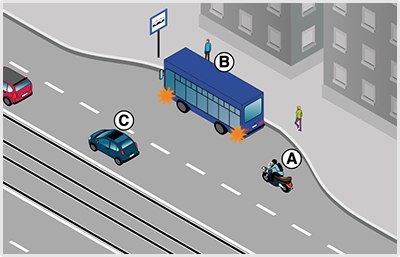
- 348. A ’B’ jelű autóbusz vezetője mikor számíthat arra, hogy az érkező ’A’ jelű motorkerékpár lehetővé teszi az elindulását? #704131
- Ha az elindulási szándékát irányjelzővel jelezte.
- Ha az ajtaját becsukta.
- Amikor beáll a megállóhelyre.
- 349. A ’B’ jelű autóbusz vezetője mikor számíthat arra, hogy az érkező ’A’ jelű járműszerelvény lehetővé teszi az elindulását? #704134
- Ha az elindulási szándékát irányjelzővel jelezte.
- Ha az ajtaját becsukta.
- Amikor beáll a megállóhelyre.
- 350. A ’B’ jelű autóbusz vezetője mikor számíthat arra, hogy az érkező ’A’ jelű gépkocsi lehetővé teszi az elindulását? #704140
- Ha az elindulási szándékát irányjelzővel jelezte.
- Ha az ajtaját becsukta.
- Amikor beáll a megállóhelyre.
- 351. A ’B’ jelű autóbusz vezetője mikor számíthat arra, hogy az érkező ’A’ jelű gépkocsi lehetővé teszi az elindulását? #704143
- Ha az elindulási szándékát irányjelzővel jelezte.
- Ha az ajtaját becsukta.
- Amikor beáll a megállóhelyre.
- 352. A ’B’ jelű autóbusz vezetője mikor számíthat arra, hogy az érkező ’A’ jelű járműszerelvény vezetője lehetővé teszi az elindulását? #704146
- Ha az elindulási szándékát irányjelzővel jelezte.
- Ha az ajtaját becsukta.
- Amikor beáll a megállóhelyre.
- 353. Az úttest széléről elinduló jármű vezetője köteles az úttesten haladó... #704346
- járművek és gyalogosok részére elsőbbséget adni.
- járművek és gyalogosok zavarásától tartózkodni.
- 354. Amikor járművével egy várakozóhelyről az úttestre kíván ráhajtani, akkor... #704347
- az úttesten haladó járművek részére köteles elsőbbséget adni.
- az úttesten haladó járművek kötelesek Önnek elsőbbséget adni.
- az úttesten haladó járművektől elvárható az udvariasság.
- 355. Elsőbbsége van-e a zárt pályáról az úttestre ráhajtó villamosnak az úttesten közlekedő járművekkel szemben? #704348
- Igen.
- Nincs elsőbbsége.
- 356. Köteles-e irányjelzéssel jelezni az úttest széléről történő, irányváltoztatással nem járó elindulást? #704349
- Igen, minden esetben.
- Nem
- 357. Hol kell lehetővé tenni az elindulási szándékot jelző, menetrend szerint közlekedő autóbusznak a megállóhelyről való elindulását? #704350
- Csak lakott területen.
- Csak lakott területen kívül.
- Lakott területen és lakott területen kívül egyaránt.
- 358. Válassza ki, hogy az alábbiak közül mely jármű elindulását köteles lakott területen lehetővé tenni? #704351
- A megállóhelyről elinduló iskolabuszét.
- A telephelyről kiinduló figyelmeztető jelzést használó autóét.
- A taximegállóból kiinduló taxiét.
- 359. Lakott területen a megállóhelyről egy gyermekeket szállító autóbusz kíván elindulni. Ha ez hirtelen fékezés nélkül megtehető, köteles-e az elindulását lehetővé tenni? #704352
- Igen.
- Nem, mert ez csak a menetrend szerinti autóbusz esetén kötelező.
- 360. Milyen módon kell lehetővé tenni a lakott területen lévő megállóhelyen tartózkodó, elindulási szándékát jelző autóbusz elindulását? #704353
- Lassítással, szükség esetén megállással
- Kizárólag csak lassítással.
- Minden esetben megállással.
- 361. Milyen módon kell lehetővé tenni az elindulási szándékot jelző, menetrend szerint közlekedő autóbusznak a lakott területen lévő megállóhelyről való elindulását? #704354
- Lassítással, szükség esetén megállással.
- Sebességcsökkentés nélkül.
- Akár hirtelen fékezéssel is.
- 362. Egyéb jelzés hiányában mekkora sebességgel szabad közlekedni a 3500 kg megengedett legnagyobb össztömeget meg nem haladó gépkocsival lakott területen kívül (ide nem értve az autópályát és az autóutat)? #704359
- Legfeljebb 90 km/h sebességgel.
- Legfeljebb 100 km/h sebességgel.
- Legfeljebb 70 km/h sebességgel.
- 363. Egyéb jelzés hiányában mekkora sebességgel szabad közlekedni a 3500 kg megengedett legnagyobb össztömeget meg nem haladó gépkocsival lakott területen? #704360
- Legfeljebb 50 km/h sebességgel.
- Legfeljebb 40 km/h sebességgel.
- Legfeljebb 60 km/h sebességgel.
- 364. Egyéb jelzés hiányában mekkora sebességgel szabad közlekedni pótkocsit vontató személygépkocsival lakott területen kívüli főútvonalon? #704361
- Legfeljebb 70 km/h sebességgel.
- Legfeljebb 90 km/h sebességgel.
- 365. Egyéb jelzés hiányában mekkora sebességgel szabad közlekedni segédmotoros kerékpárral lakott területen kívül? #704362
- Legfeljebb 40 km/h sebességgel.
- Legfeljebb 50 km/h sebességgel.
- Legfeljebb 60 km/h sebességgel.
- 366. Egyéb jelzés hiányában mekkora sebességgel szabad közlekedni segédmotoros kerékpárral lakott területen? #704363
- Legfeljebb 40 km/h sebességgel.
- Legfeljebb 50 km/h sebességgel.
- Legfeljebb 30 km/h sebességgel.
- 367. Egyéb jelzés hiányában mekkora sebességgel szabad közlekedni mezőgazdasági vontatóval? #704364
- Legfeljebb 40 km/h sebességgel.
- Legfeljebb 50 km/h sebességgel.
- Legfeljebb 30 km/h sebességgel.
- 368. Egyéb jelzés hiányában mekkora sebességgel szabad közlekedni lassú járműből és pótkocsiból álló járműszerelvénnyel? #704365
- Legfeljebb 25 km/h sebességgel.
- Legfeljebb 20 km/h sebességgel.
- Legfeljebb 30 km/h sebességgel.
- 369. Legfeljebb milyen távolságban szabad követni járművel egy másik járművet? #704369
- Olyan távolságban, hogy az elöl haladó jármű mögött hirtelen fékezése esetén is meg lehessen állni.
- Mindig 10 méternél nem kisebb távolságra.
- Olyan távolságban, hogy a tompított fényszórónk ne vakítsa el az elöl haladó jármű vezetőjét.
- 370. Milyen távolságban szabad követni járművel egy kerékpárost? #704370
- Olyan távolságban, hogy a kerékpáros mögött, annak hirtelen fékezése esetén is meg lehessen állni.
- Tetszőleges távolságra lehet követni, erre nincs előírás.
- Olyan távolságban, hogy egy előzést végző jármű még beférjen járművünk és a kerékpáros közé.
- 371. Egyéb jelzés hiányában milyen távolságban szabad követni egy 8 méter hosszúságú járműszerelvénnyel egy személygépkocsit lakott területen kívül egy forgalmi sávos úton? #704372
- Olyan távolságban, hogy a két jármű közé legalább egy - előzést végrehajtó - személygépkocsi még biztonságban besorolhasson.
- Olyan távolságban, hogy a két jármű közé legalább egy - előzést végrehajtó - tehergépkocsi még biztonságban besorolhasson.
- Olyan távolságban, hogy az elöl haladó jármű mögött hirtelen fékezése esetén is meg lehessen állni.
- 372. Fékezhet-e hirtelen, ha egy figyelmetlen gyalogos váratlanul az Ön által vezetett jármű elé az úttestre lép? #704373
- Igen, ha ezt a személy- vagy vagyonbiztonság megóvása szükségessé teszi.
- Csak akkor, ha az Ön mögött haladó megfelelő követési távolságot tart.
- Nem, mert hirtelen fékezni sosem szabad.
- 373. Köteles-e elsőbbséget adni egyenrangú útkereszteződésben a jobbról érkező villamos részére? #704374
- Igen.
- Nem, csak a balról érkező villamos részére kell elsőbbséget adni.
- 374. Köteles-e elsőbbséget adni egyenrangú útkereszteződésben egy jobbról érkező kerékpáros részére? #704375
- Igen.
- Nem, csak gépjárművek részére kell elsőbbséget adni.
- 375. Köteles-e elsőbbséget adni egyenrangú útkereszteződésben a balról érkező trolibusz részére? #704376
- Nem.
- Igen.
- 376. Köteles-e elsőbbséget adni egyenrangú útkereszteződésben a balról érkező figyelmeztető jelzést használó gépjármű részére. #704377
- Nem.
- Igen.
- 377. Köteles-e elsőbbséget adni egy földútról érkező megkülönböztető jelzéseit együttesen használó gépjármű részére? #704378
- Igen.
- Nem.
- 378. Alkalmazni kell-e a jobbratartás szabályait körforgalmú úton történő közlekedés során? #715001
- Igen.
- Nem.
- 379. Köteles-e eleget tenni jobbratartási kötelezettségének, ha járművével egyirányú forgalmú úton közlekedik? #715004
- Igen.
- Nem.
- 380. Az úttest szélén lassító sáv található. Köteles-e járművével a jobbratartás értelmében itt közlekedni? #715007
- Nem.
- Igen, ha a jármű vezetője túl lassan halad.
- Igen, minden esetben.
- 381. Ön a ’B’ jelű autóbuszt vezeti. Van-e valamilyen kötelezettsége, ha azt látja, hogy a buszmegállóból az ’A’ jelű autóbusz el kíván indulni? #715034
- Nincs, mivel az autóbusz az elindulás után a jobb szélső forgalmi sávba be tud sorolni.
- Igen, lassítással, szükség esetén megállással is lehetővé kell tennie az autóbusz belső sávba történő behajtását.
- Igen, intenzív fékezéssel lehetővé kell tennie az autóbusz sávváltását.
- 382. A képen látható járművek az úttest jobb szélén 15-20 méter távolságra várakoznak egymástól. Az ’A’ jelű autóbusz szabályosan közlekedik, ha haladása közben nem húzódik le közéjük? #715060
- Igen.
- Nem, mert a jobbra tartásnak megfelelően mindig köteles az úttest jobb széléhez húzódva közlekedni.
- 383. Köteles az ’A’ jelű autóbusz a képen látható helyen az úttest jobb szélére húzódni? #715061
- Nem.
- Igen.
- 384. Egyéb jelzés hiányában mekkora sebességgel szabad közlekedni pótkocsit vontató személygépkocsival autóúton? #715074
- Legfeljebb 70 km/h sebességgel.
- Legfeljebb 90 km/h sebességgel.
- Legfeljebb 80 km/h sebességgel.
- 385. Egyéb jelzés hiányában mekkora sebességgel szabad közlekedni lakókocsit vontató személygépkocsival autópályán? #715075
- Legfeljebb 80 km/h sebességgel.
- Legfeljebb 110 km/h sebességgel.
- Legfeljebb 130 km/h sebességgel.
- 386. Egyéb jelzés hiányában mekkora sebességgel szabad közlekedni 3500 kg megengedett legnagyobb össztömeget meghaladó autóbusszal autóúton? #715076
- Legfeljebb 70 km/h sebességgel.
- Legfeljebb 80 km/h sebességgel.
- Legfeljebb 90 km/h sebességgel.
- 387. Egyéb jelzés hiányában mekkora sebességgel szabad közlekedni elromlott járművet vontató gépjárművel lakott területen kívüli főútvonalon? #715077
- Legfeljebb 40 km/h sebességgel.
- Legfeljebb 70 km/h sebességgel.
- Legfeljebb 90 km/h sebességgel.

- 388. Lakott területen ezt a közúti jelzőtáblát látja. Mekkora sebességgel szabad közlekedni a 3500 kg megengedett legnagyobb össztömeget meghaladó gépkocsival? #715078
- Legfeljebb 50 km/h sebességgel.
- Legfeljebb 70 km/h sebességgel.
- 389. A körforgalomban egy olyan villamospályát keresztez, amelyen egy villamos hajt be a körforgalomba. Mikor jár el szabályosan? #715083
- Ha elsőbbséget ad a körforgalmat keresztező villamos részére.
- Ha elhalad a villamos előtt, mivel a körforgalomba behajtó villamos köteles elsőbbséget adni.
- Ha a kölcsönös udvariasság alapján megegyeznek az áthaladási sorrendben.
- 390. Az ’A’ jelű autóbusz vezetője milyen módon köteles lehetővé tenni a ’B’ jelű autóbusz buszmegállóból történő elindulását? #715295
- Lassítással, szükség esetén megállással.
- Megállás nélkül, csak lassítással.
- Akár hirtelen fékezéssel is.
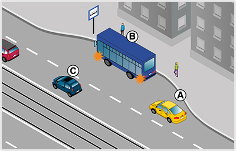
- 391. Köteles-e az 'A' jelű jármű vezetője lakott területen lehetővé tenni a 'B' jelű autóbusz részére a megállóból történő elindulást? #715597
- Igen, ha ez hirtelen fékezés nélkül megtehető.
- Igen, minden esetben.
- Nem.
- 392. A ’B’ jelű autóbusz vezetője milyen módon köteles lehetővé tenni az ’A’ jelű autóbusz buszmegállóból történő elindulását lakott területen? #721391
- Itt az autóbusz segítség nélkül is be tud kapcsolódni a forgalomba.
- Lassítással, szükség esetén megállással.
- Akár hirtelen fékezéssel is.
- 393. Az ’A’ jelű autóbusz vezetője számíthat-e arra, hogy az érkező ’B’ jelű autóbusz vezetője lehetővé teszi a belső sávba történő besorolást? #721392
- Nem.
- Igen.
- 394. Ön a ’B’ jelű autóbuszt vezeti. Mikor indulhat el az autóbusz-megállóból? #721393
- Csak akkor, ha meggyőződött annak veszélytelenségéről.
- Mivel elsőbbsége van az ’A’ jelű járművel szemben, ezért azonnal elindulhat.
- 395. A ’B’ jelű autóbusz vezetője mikor számíthat arra, hogy az érkező ’A’ jelű autóbusz lehetővé teszi az elindulását? #721394
- Ha az elindulási szándékát irányjelzővel jelezte.
- Ha az ajtaját becsukta.
- Amikor beáll a megállóhelyre.
- 396. Ön az ’A’ jelű autóbuszt vezeti. Van-e valamilyen kötelezettsége, ha azt látja, hogy a buszmegállóból a ’B’ jelű autóbusz el kíván indulni? #721395
- Igen, lassítással, szükség esetén megállással is lehetővé kell tennie az autóbusz elindulását.
- Nincs, mivel az autóbusz olyan útra kíván ráhajtani, amelyen villamospálya van.
- Lassítás nélkül folytathatja útját, mivel az elinduló járművek kötelesek elsőbbséget adni az érkezők számára.
- 397. Milyen irányú a forgalom olyan úton, amelyen három, egymástól elkülönített úttest van? #721546
- A középső úttesten kétirányú, a szélső úttesteken egyirányú forgalom van.
- Mindegyik úttesten egyirányú forgalom van.
- A középső úttesten egyirányú, a szélső úttesteken kétirányú forgalom van.
- 398. Köteles-e lassú járművével szorosan az úttest jobb szélén közlekedni? #721550
- Igen, ha az út- és forgalmi viszonyok ezt lehetővé teszik.
- Nem.
- Csak akkor, ha 20 km/h sebességnél lassabban halad.
- 399. Mit jelent a jobbratartási kötelezettség? #721552
- Lehetőség szerint az úttest jobb szélén kell közlekedni.
- Lehetőség szerint az úttest jobb oldalán bárhol lehet közlekedni.
- Lehetőség szerint a járdaszigettől 30 cm-re kell közlekedni.
- 400. Ön lassú járművet vezet 10 km/h sebességgel. Ha az úttest mellett lassító sáv van, köteles-e itt közlekedni, ha egyébként egyenesen kíván továbbhaladni? #721554
- Nem.
- Igen.
- 401. Melyi irányból szabad elhaladni az úttesten levő járdasziget mellett, ha az nem az úttest menetirány szerinti jobb és bal oldalát választja el egymástól és a járdaszigeten nem helyezték el a kikerülési irány jelzőtáblát sem? #721555
- Útiránytól függően jobbról és balról is.
- A jobbratartás miatt kizárólag csak jobbról.
- Minden esetben csak balról.
- 402. Egyéb jelzés hiányában mekkora sebességgel szabad közlekedni a 3500 kg megengedett legnagyobb össztömeget meghaladó gépkocsival lakott területen kívül (ide nem értve az autópályát és az autóutat)? #721850
- Legfeljebb 70 km/h sebességgel.
- Legfeljebb 80 km/h sebességgel.
- Legfeljebb 90 km/h sebességgel.
- 403. Egyéb jelzés hiányában mekkora sebességgel szabad közlekedni a 3500 kg megengedett legnagyobb össztömeget meghaladó gépkocsival autóúton? #721851
- Legfeljebb 70 km/h sebességgel.
- Legfeljebb 80 km/h sebességgel.
- Legfeljebb 90 km/h sebességgel.
- 404. Egyéb jelzés hiányában mekkora sebességgel szabad közlekedni 3500 kg megengedett legnagyobb össztömeget meghaladó autóbusszal lakott területen kívül (ide nem értve az autópályát és az autóutat)? #721852
- Legfeljebb 70 km/h sebességgel.
- Legfeljebb 80 km/h sebességgel.
- Legfeljebb 90 km/h sebességgel.
- 405. Egyéb jelzés hiányában mekkora sebességgel szabad közlekedni a 3500 kg megengedett legnagyobb össztömeget meghaladó gépkocsival autópályán? #721853
- Legfeljebb 80 km/h sebességgel.
- Legfeljebb 90 km/h sebességgel.
- Legfeljebb 110 km/h sebességgel.
- 406. A ’B’ jelű autóbusz vezetője milyen módon köteles lehetővé tenni az ’A’ jelű autóbusz buszmegállóból történő elindulását lakott területen? #722165
- Itt az autóbusz segítség nélkül is be tud kapcsolódni a forgalomba.
- Lassítással, szükség esetén megállással.
- Akár hirtelen fékezéssel is.
- 407. Az ’A’ jelű autóbusz vezetője számíthat-e arra, hogy az érkező ’B’ jelű autóbusz vezetője lehetővé teszi a belső sávba történő besorolást? #722166
- Nem.
- Igen.

- 408. Ön a kormánykerékkel jelzett járművet vezetve köteles-e lehetővé tenni az ’A’ jelű autóbusz buszmegállóból történő elindulását lakott területen? #722167
- Nem.
- Igen, lassítással, szükség esetén megállással.
- Igen, akár hirtelen fékezéssel is.
- 409. Ön a kormánykerékkel jelzett járművet vezeti. Az ’A’ jelű autóbusz vezetője számíthat-e arra, hogy Ön lehetővé teszi a belső sávba történő besorolást? #722168
- Nem.
- Igen.
- 410. Ön a kormánykerékkel jelzett járművet vezetve köteles a képen látható helyen az úttest jobb szélén várakozó járművek közé húzódni? #722238
- Nem.
- Igen.

- 411. Ön a ’B’ jelű autóbuszt vezeti lakott területen. Mikor indulhat el az autóbusz-megállóból? #722691
- Csak akkor, ha meggyőződött annak veszélytelenségéről.
- Mivel elsőbbsége van az ’A’ jelű járművel szemben, ezért azonnal elindulhat.
- 412. A ’B’ jelű autóbusz vezetője mikor számíthat lakott területen arra, hogy az érkező ’A’ jelű autóbusz lehetővé teszi az elindulását? #722692
- Ha az elindulási szándékát irányjelzővel jelezte.
- Ha az ajtaját becsukta.
- Amikor beáll a megállóhelyre.
- 413. Az ’A’ jelű autóbusz a parkolóhelyről kíván elindulni. A tervezett manőver kapcsán van-e elsőbbségadási kötelezettsége? #723391
- Igen van.
- Nincs.
- 414. Az ’A’ jelű jármű a várakozóhelyről kíván elindulni. Mikor kell az irányjelzőt használnia? #723512
- Az elindulás megkezdése előtt, amit az úttestre kikanyarodásig működtetnie kell.
- Csak az elindulás után, mielőtt elkanyarodik a választott irányba.
- Itt csak akkor kell irányjelzést adnia, ha az úttesten másik jármű érkezik.
- 415. Az ’A’ jelű jármű a parkolóhelyről kíván elindulni. A tervezett manőver kapcsán van-e elsőbbségadási kötelezettsége? #723513
- Igen, van.
- Nincs.
- 416. Az ’A’ jelű jármű a parkolóhelyről kíván elindulni. Eközben... #723514
- köteles a gyalogos részére elsőbbséget adni.
- a gyalogost feltarthatja.
- a gyalogostól elsőbbséget fog kapni.
- 417. Az ’A’ jelű autóbusz vezetője milyen módon köteles lehetővé tenni lakott területen a ’B’ jelű autóbusz buszmegállóból történő elindulását? #723642
- Lassítással, szükség esetén megállással.
- Megállás nélkül, csak lassítással.
- Akár hirtelen fékezéssel is.
- 418. Ön a kormánykerékkel jelzett járművet vezeti lakott területen. Van-e valamilyen kötelezettsége, ha azt látja, hogy a buszmegállóból a ’B’ jelű autóbusz el kíván indulni? #723643
- Igen, lassítással, szükség esetén megállással is lehetővé kell tennie az autóbusz elindulását.
- Nincs, mivel az autóbusz több sávos útra kíván ráhajtani.
- Lassítás nélkül folytathatja útját, mivel az elinduló járművek kötelesek elsőbbséget adni az érkezők számára.
- 419. Ön a kormánykerékkel jelzett járművet vezetve milyen módon köteles lehetővé tenni lakott területen a ’B’ jelű autóbusz buszmegállóból történő elindulását? #723644
- Lassítással, szükség esetén megállással.
- Megállás nélkül, csak lassítással.
- Akár hirtelen fékezéssel is.
- 420. Az ’A’ jelű járműszerelvény vezetője köteles-e lehetővé tenni a ’B’ jelű autóbusz buszmegállóból történő elindulását? #723650
- Nem.
- Igen.
- Igen, de csak akkor, ha ez hirtelen fékezés nélkül megtehető.
- 421. Az ’A’ jelű jármű vezetője köteles-e lehetővé tenni a ’B’ jelű autóbusz buszmegállóból történő elindulását? #723651
- Nem.
- Igen.
- Igen, de csak akkor, ha ez hirtelen fékezés nélkül megtehető.

- 422. Ön a kormánykerékkel jelzett járművet vezeti. Köteles-e lehetővé tenni a ’B’ jelű autóbusz buszmegállóból történő elindulását? #723654
- Nem.
- Igen.
- Igen, de csak akkor, ha ez hirtelen fékezés nélkül megtehető.
- 423. Ön az ’A’ jelű autóbuszt vezeti lakott területen. Van-e valamilyen kötelezettsége, ha azt látja, hogy a buszmegállóból a ’B’ jelű autóbusz el kíván indulni? #723757
- Igen, lassítással, szükség esetén megállással is lehetővé kell tennie az autóbusz elindulását.
- Nincs, mivel az autóbusz több sávos útra kíván ráhajtani.
- Lassítás nélkül folytathatja útját, mivel az elinduló járművek kötelesek elsőbbséget adni az érkezők számára.
- 424. Az ’A’ jelű autóbusz vezetője milyen módon köteles lehetővé tenni lakott területen a ’B’ jelű autóbusz buszmegállóból történő elindulását? #723758
- Lassítással, szükség esetén megállással.
- Megállás nélkül, csak lassítással.
- Akár hirtelen fékezéssel is.
- 425. Az ’A’ jelű járműszerelvény vezetője milyen módon köteles lehetővé tenni a ’B’ jelű autóbusz buszmegállóból történő elindulását lakott területen kívül? #723763
- Itt nem köteles az autóbusz elindulását lehetővé tenni.
- Lassítással, szükség esetén megállással.
- Akár hirtelen fékezéssel is.
- 426. Az ’A’ jelű tehergépkocsi vezetője milyen módon köteles lehetővé tenni a ’B’ jelű autóbusz buszmegállóból történő elindulását lakott területen kívül? #723764
- Itt nem köteles az autóbusz elindulását lehetővé tenni.
- Lassítással, szükség esetén megállással.
- Akár hirtelen fékezéssel is.
- 427. Az ’A’ jelű járműszerelvény vezetője milyen módon köteles lehetővé tenni a ’B’ jelű autóbusz buszmegállóból történő elindulását lakott területen kívül? #723765
- Itt nem köteles az autóbusz elindulását lehetővé tenni.
- Lassítással, szükség esetén megállással.
- Akár hirtelen fékezéssel is.
- 428. Az ’A’ jelű autóbusz vezetője milyen módon köteles lehetővé tenni a ’B’ jelű autóbusz buszmegállóból történő elindulását lakott területen kívül? #723766
- Itt nem köteles az autóbusz elindulását lehetővé tenni.
- Lassítással, szükség esetén megállással.
- Akár hirtelen fékezéssel is.
- 429. Ön az ’A’ jelű autóbuszt a képen látható helyen vezeti. Van-e valamilyen kötelezettsége, ha azt látja, hogy a buszmegállóból a ’B’ jelű autóbusz el kíván indulni? #723767
- Nincs.
- Igen, lassítással, szükség esetén megállással is lehetővé kell tennie az autóbusz elindulását.
- Igen, intenzív fékezéssel lehetővé kell tennie az autóbusz elindulását.
- 430. Lakott területen kívül milyen követési távolságot kötelesek tartani az ábrán látható, 7 méternél hosszabb autóbuszok? #723920
- Olyan követési távolságot, hogy a két jármű közé legalább egy - előzést végrehajtó - személygépkocsi biztonságosan besorolhasson.
- Olyan távolságot, amely elegendő ahhoz, hogy az elöl haladó jármű mögött - annak hirtelen fékezése esetén is - meg lehessen állni.
Irányváltoztatás, jelzések (1 db., 1 pont)
- 431. Köteles-e a ’B’ jelű autóbusz vezetője a motorkerékpáros előzése közben irányjelzőjét használni? #703787
- Igen, mert az előzés közben irányváltoztatás is történik.
- Nem, mert forgalmi sávon belül történik az előzés.
- 432. Ön az ’A’ jelű autóbuszt vezeti. A jobb oldali forgalmi sávba kíván áthajtani. Eközben... #703847
- köteles elsőbbséget adni a ’B’ jelű személygépkocsi részére.
- elsőbbsége van a ’B’ jelű személygépkocsival szemben.
- bizton számíthat arra, hogy a ’B’ jelű személygépkocsi az átsorolását lassítással segíteni fogja.
- 433. Az ’A’ jelű autóbusz vezetője a képen látható helyen változtathat-e forgalmi sávot? #703848
- Igen, de csak akkor, ha elsőbbséget adott a ’B’ jelű személygépkocsi részére.
- Igen, és elsőbbsége van a ’B’ jelű személygépkocsival szemben.
- Nem, autóbusz-megállónál soha nem szabad forgalmi sávot váltani.
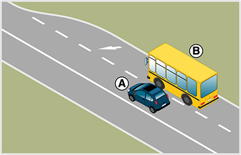
- 434. Ön a ’B’ jelű autóbusszal a képen látható helyhez közeledik. Mikor közlekedik szabályosan? #703909
- Ha balra működtetett irányjelzőt használ, majd miután elsőbbséget adott az ’A’ jelű személygépkocsi részére áthajt a bal oldali forgalmi sávra.
- Mivel az Ön által igénybe vett forgalmi sáv megszűnik, ezért intenzíven gyorsít és megpróbál az érkező ’A’ jelű személygépkocsi elé behajtani.
- Számíthat arra, hogy a megszűnő sávja miatt Önt az ’A’ jelű személygépkocsi udvariasan maga elé engedi.
- 435. Ön a ’B’ jelű autóbuszt vezeti. Köteles-e az ábrán látható helyzetben irányjelzőt használni és a forgalmi sávot elhagyni? #703910
- Igen, mivel az útburkolati jel kötelezi Önt a forgalmi sáv elhagyására, amit csak irányváltoztatással tud végrehajtani.
- Igen, a forgalmi sávot el kell hagynia, de irányjelzőt nem kell használni, hiszen egyértelmű, hogy ebben a forgalmi sávban nem lehet tovább közlekedni.
- Nem kell irányjelzőt használni, hiszen az útburkolati jelek (nyilak) mutatják a sávelhagyás kötelező irányát.
- 436. Hogyan köteles az ábrán látható ’A’ jelű autóbusz vezetője az irányjelzőt használni? #704021
- Az előzés megkezdésekor balra, majd a visszatérés előtt jobbra jelezve.
- Csak az előzés megkezdésekor balra jelzéssel. A visszatérést már nem kell jeleznie.
- Mivel az úton nem érkezik más, ezért itt nem kell irányjelzőt használni.

- 437. A képen látható helyen melyik jármű haladhat tovább elsőként? #704030
- Az ’A’ jelű személygépkocsi.
- A ’B’ jelű autóbusz.
- Kölcsönös megegyezés alapján haladhatnak tovább.
- 438. Ön a ’B’ jelű autóbuszt vezeti. A képen látható helyen... #704031
- elsőbbséget kell adnia az ’A’ jelű személygépkocsi részére.
- számíthat arra, hogy az ’A’ jelű személygépkocsi maga elé engedi.
- meg kell egyezniük a továbbhaladási sorrendben.
- 439. A képen látható helyen melyik járműnek kell az irányjelzőjét használnia? #704032
- A ’B’ jelű autóbusznak, és balra kell jeleznie.
- A ’B’ jelű autóbusznak, és jobbra kell jeleznie.
- Az ’A’ jelű személygépkocsinak, és jobbra kell jeleznie.

- 440. Ön egy olyan úton halad, ahol ezt a közúti jelzést látja. Mikor jár el szabályosan? #704163
- Ha az út vonalvezetését követve nem használja az irányjelzőjét.
- Ha először jobbra, majd a kanyar közepétől balra ad irányjelzést.
- Ha csak jobbra működteti az irányjelzőjét, és a kanyarok után kikapcsolja azt.

- 441. Az ábrázolt jelzőtábla után ki kell kerülnie az úttestre került kődarabokat. Szükséges-e eközben az irányjelzőjét használni? #704178
- Csak akkor, ha a kikerülés irányváltoztatással is jár.
- Csak akkor, ha más is érkezik az úton.
- Ez vészhelyzetnek minősül, és ilyen esetben nem szükséges használni az irányjelzőt.
- 442. Az útkereszteződésben a belső forgalmi sávban közlekedik, amely felett ezt a közúti jelzést látja. Köteles-e irányjelzővel a tervezett balra kanyarodását jelezni? #704263
- Igen.
- Nem.
- Csak akkor, ha szemből más jármű érkezik.
- 443. Ön az ezzel a jelzőtáblával jelölt útkereszteződéshez érkezik. Az alábbiak közül melyik esetben számít Ön irányváltoztatónak? #704264
- Ha egyenesen továbbhaladva letér az út vonalvezetéséről.
- Ha balra kanyarodva követi az út vonalvezetését.
- 444. Megtévesztőnek minősül-e a balra történő irányjelzés, ha Ön ennél a közúti jelzőtáblánál haladva a balra kanyarodó főútvonal vonalvezetését követi? #704265
- Nem.
- Igen.

- 445. Köteles-e irányjelzőt használni, miközben ezen az útburkolati jelen egyenesen áthajt? #704307
- Nem.
- Igen, mert az útburkolati jel széle terelővonalnak minősül.
- 446. Az alábbiakban felsorolt esetek közül kinek köteles Ön elsőbbséget adni, ha egy egyenrangú útkereszteződéshez érve járművével balra kanyarodik? #704339
- A szemből érkező, egyenesen továbbhaladó jármű részére.
- A balról érkező, egyenesen továbbhaladó jármű részére.
- Senkinek sem.
- 447. Útburkolati jelek hiányában hová kell a járművel besorolni kétirányú úton, ha az útkereszteződésben balra kíván bekanyarodni? #714858
- Az úttest képzeletbeli felezővonala mellé.
- Mindig az úttest bal szélére.
- Ilyen esetben mindig az úttest jobb szélére.
- 448. Útburkolati jelek hiányában hová kell a járművel besorolni, ha osztott pályás úton balra kíván bekanyarodni? #714859
- Az úttest bal szélére.
- A felezővonal mellé.
- Az úttest közepére.
- 449. Közúti jelzés hiányában az alábbiak közül hogyan kell a járművel másik útra bekanyarodni? #714861
- Jobbra kis ívben, balra nagy ívben.
- Jobbra nagy ívben, balra kis ívben.
- Jobbra és balra is kis ívben.
- 450. A járművel történő bekanyarodás előtt szabad-e eltérni az általános besorolási szabályoktól? #714862
- Igen, ha a jármű méretei vagy egyéb ok miatt ez indokolt.
- Nem, a besorolás szabályait minden körülmények között be kell tartani.
- 451. Amennyiben a jármű méreteiből adódóan a bekanyarodás előtti besorolási szabályokat nem lehet betartani, akkor is ügyelni kell arra, hogy bekanyarodáskor a többi jármű forgalmát... #714863
- ne veszélyeztesse.
- ne akadályozza.
- ne zavarja.
- 452. Az alábbiak közül mely jármű részére kell elsőbbséget adni jobbra bekanyarodó járművel? #714864
- A kerékpársávon érkező részére.
- Az úttesten szemből érkező jármű részére.
- A jobbról érkező jármű részére.
- 453. Hogyan térhetnek el a nagyméretű járművek vezetői a besorolás általános szabályaitól? #714866
- Úgy, hogy közben a többi jármű forgalmát ne veszélyeztessék.
- Úgy, hogy közben a többi jármű forgalmát ne akadályozzák.
- Úgy, hogy közben a többi jármű forgalmát ne zavarják.
- 454. Használhat-e irányjelzőt abban az esetben, ha az útkereszteződésben a jobbra kanyarodó főútvonalon halad tovább? #715101
- Igen, de csak jobbra.
- Igen, de csak balra.
- Nem.
- 455. Az alábbiak közül mikor kell irányjelzőt használnia? #715393
- Amikor lehajt az útpadkára.
- Amikor behajt a körforgalomba.
- Amikor a kanyarodó főútvonalon követi a főútvonal vonalvezetését.

- 456. Ön a ’B’ jelű járművet vezeti. A képen látható helyen... #715420
- elsőbbséget kell adnia az ’A’ jelű jármű részére.
- elsőbbsége van az ’A’ jelű járművel szemben.
- meg kell egyezniük a továbbhaladási sorrendben.
- 457. Ön a ’B’ jelű járművet vezeti. Köteles-e irányjelzővel jelezni, ha átsorol a belső forgalmi sávba? #715421
- Igen, balra, mert forgalmi sávot fog változtatni.
- Igen, jobbra, mert forgalmi sávot fog változtatni.
- Nem, mert az érkező járművek úgyis látják, hogy a külső forgalmi sáv meg fog szűnni.
- 458. Lakott területen az úttest mellett futkározó gyerekeket lát. Adhat-e figyelmeztetésképpen hangjelzést? #715422
- Amennyiben úgy látja, hogy a gyerekek balesetveszélyesen a jármű elé léphetnek, akkor igen.
- Nem, mert kizárólag csak egy másik jármű vonatkozásában használhat hangjelzést.
- Nem, mert csak lakott területen kívül használhat hangjelzést.
- 459. Adható-e hangjelzés, ha lakott területen kívüli úton szemből érkező hajtott állatokkal találkozik? #715444
- Igen, de csak balesetveszély esetén.
- Csak akkor, ha az állatokat hajtó személyt nem látja.
- Igen, minden esetben.
- 460. Parkoló járművéből egy figyelmetlenül az úton átkelő gyalogost pillant meg. Használhat-e figyelmeztetésképpen hangjelzést? #715474
- Igen, ha ezzel egy esetleges balesetet előz meg.
- Nem, mert gyalogosok vonatkozásában nem használhat hangjelzést.
- 461. Lakott területen egy kerékpáros előzésébe kezd. Adhat-e hangjelzést előzési szándékának jelzésére? #715498
- Nem
- Igen
- Csak akkor, ha a hangjelzésével az előzés tényére szeretné figyelmeztetni.
- 462. Irányadóak-e a bekanyarodás szabályai az útkereszteződésen kívüli bekanyarodásra is? #721374
- Általában igen.
- Nem.
- 463. Az alábbiak közül hová kell a járművel besorolni, mielőtt bekanyarodik az útkereszteződésben? #721375
- Az útburkolati jelek által meghatározott forgalmi sávba.
- Bármely forgalmi sávba.
- A legbiztonságosabbnak ítélt forgalmi sávba.
- 464. Útburkolati jelek hiányában hová kell a járművel besorolni, ha az egyirányú forgalmú útról balra szeretne bekanyarodni? #721376
- Az úttest bal szélére.
- Az úttest jobb szélére.
- Az úttest közepére.
- 465. Útburkolati jelek hiányában hová kell a járművel besorolni, ha villamospályával ellátott úttestről szeretne bekanyarodni? #721378
- Ha a besorolás a villamos forgalmát zavarná, akkor a villamos elhaladásához szükséges területet szabadon kell hagyni.
- Mindig a villamosvágányra.
- Mindig a villamosvágány mellé.
- 466. Elsőbbséget kell-e adni a balra bekanyarodó járművel a szemből érkező, jobbra bekanyarodó jármű részére? #721379
- Ha a közúti jelzésekből más nem következik, akkor igen.
- Nem.
- 467. Elsőbbséget kell-e adni a balra bekanyarodó járművel a szemből érkező és egyenesen továbbhaladó jármű részére? #721380
- Ha a közúti jelzésekből más nem következik, akkor igen.
- Nem.
- 468. Balra történő bekanyarodás előtt meg kell-e győződni arról, hogy a bekanyarodni szándékozó jármű előzését balról más jármű nem kezdte-e meg? #721382
- Igen, olyan úton, amely nem alkalmas párhuzamos közlekedésre.
- Igen, mindenhol.
- Nem.
- 469. Balra történő bekanyarodás előtt meg kell-e győződni arról, hogy a bekanyarodni szándékozó jármű kikerülését balról más jármű nem kezdte-e meg? #721383
- Igen, olyan úton, amely nem alkalmas párhuzamos közlekedésre.
- Igen, mindenhol.
- Nem.
- 470. Kell-e elsőbbséget adni annak a gyalogosnak, aki annak az útnak az úttestjén halad át, amelyre a jármű bekanyarodik? #721386
- Igen.
- Nem.
- 471. Kell-e irányító személyt alkalmazni, amikor a jármű méreteiből adódóan eltér a besorolási és bekanyarodási szabályoktól? #721389
- Szükség esetén igen.
- Soha.
- Igen, mindig.
- 472. Hogyan kell a járművel másik útra bekanyarodni az alábbiak közül? #721390
- Úgy, hogy a jármű a bekanyarodás után a menetirány szerinti jobb oldalon maradjon.
- A bekanyarodás után a menetirány szerinti bal oldalra is szabad érkezni.
- Úgy, hogy a továbbhaladás gyorsasága biztosított legyen.
- 473. A képen látható helyen melyik jármű haladhat tovább elsőként? #721573
- Az ’A’ jelű jármű.
- A ’B’ jelű jármű.
- Kölcsönös megegyezés alapján haladhatnak tovább.
- 474. Az úttesten nem láthatóak útburkolati jelek. Egy kerékpárost csak úgy tud megelőzni, hogy pár centiméterre áthajt a menetirány szerinti bal oldalra. A manőver kapcsán szükséges-e az irányjelzőt használnia? #721577
- Igen, mert a képzeletbeli felezővonal átlépése is irányváltoztatás.
- Nem, mert csak felfestett felezővonal esetén kell irányjelzőt használnia.
- Nem, mert a kerékpárosok előzésekor nem szükséges irányjelzőt használni.
- 475. A körforgalom külső sávjából az útburkolati jelek kivezetik a körforgalomból járművét. Köteles-e ebben az esetben irányjelzést adni? #721579
- Igen.
- Nem.
- Csak akkor, ha a körforgalom lakott területen kívül van.
- 476. A körforgalom belső sávjából az útburkolati jelek kivezetik a forgalmat a körforgalomból. Hogyan kell az irányjelzőjét használni? #721580
- Jobbra történő működtetéssel.
- Először jobbra, majd a kihajtás előtt balra működtetéssel.
- Abban az esetben, ha a forgalmi sávok kivezetik a forgalmat, nem kötelező irányjelzőt használnia.
- 477. Körforgalmú útra történő bekanyarodás előtt köteles-e irányjelzést adni? #721582
- Nem.
- Igen.
- Igen, de csak akkor, ha a körforgalom párhuzamos közlekedésre alkalmas.
- 478. Mikor mellőzhető az irányjelző használata a körforgalomból történő kihajtás közben? #721583
- Sosem mellőzhető, mindig szükséges.
- Csak akkor, ha a forgalmi sávok kivezetik a forgalmat a körforgalomból.
- Csak akkor, ha a körforgalomban fényjelző készülék irányítja a forgalmat.
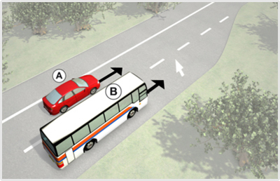
- 479. A képen látható helyen melyik jármű haladhat tovább elsőként? #723012
- Az ’A’ jelű jármű.
- A ’B’ jelű jármű.
- Kölcsönös megegyezés alapján haladhatnak tovább.
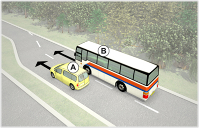
- 480. A képen látható helyen melyik járműnek kell az irányjelzőjét használni? #723477
- A ’B’ jelű autóbusznak, és balra kell jeleznie.
- A ’B’ jelű autóbusznak, és jobbra kell jeleznie.
- Az ’A’ jelű személygépkocsinak, és jobbra kell jeleznie.
- 481. Ön a kormánykerékkel jelzett járművet vezeti. Melyik járműnek kell az ábrán látható helyen az irányjelzőjét használni? #723486
- Az Ön által vezetett járműnek kell balra irányjelzést adnia.
- Az Ön által vezetett járműnek kell jobbra irányjelzést adnia.
- Az ’A’ jelű személygépkocsinak kell jobbra irányjelzést adnia.

- 482. A képen látható helyen melyik járműnek kell az irányjelzőjét használni? #724066
- A ’B’ jelű autóbusznak, és balra kell jeleznie.
- A ’B’ jelű autóbusznak, és jobbra kell jeleznie.
- Az ’A’ jelű személygépkocsinak, és jobbra kell jeleznie.
Egyéb manőverek (1 db., 1 pont)
- 483. Kell-e megfelelő oldaltávolságot tartani az egymás mellett ellentétes irányban elhaladó járművek között? #703493
- Igen.
- Nem.
- 484. Hogyan kell az egymással szemben haladó járművek vezetőinek egymástól biztonságos oldaltávolságot tartani? #703494
- Szükség esetén kölcsönösen az úttest széléhez kell húzódniuk.
- Szükség esetén egyiküknek az úttest széléhez kell húzódni.
- Szükség esetén egyiküknek meg kell állni.
- 485. Hogyan kell lehetővé tenni a keskeny úttesten szükséges kitérés végrehajtását? #703495
- Megállással, útpadkára húzódással vagy hátramenettel.
- Csak megállással.
- Csak hátramenettel.
- 486. Melyik járművel kell hátramenetet végezni, ha a kitérés az úttest méretei miatt nem lehetséges? #703496
- Amelyikkel ez könnyebben megtehető.
- Amelyik később érkezett a helyszínre.
- Amelyik előbb fog a későbbiekben elkanyarodni.
- 487. Az egy forgalmi sávra szűkülő úttesten szembejövő járművek találkoznak. Melyiküknek van elsőbbsége? #703498
- Ha a közúti jelzésekből más nem következik, akkor annak a járműnek, amelyik irányváltoztatás nélkül tud továbbhaladni.
- Ha a közúti jelzésekből más nem következik, akkor annak a járműnek, amelyik irányváltoztatással tud továbbhaladni.
- Minden esetben a nagyobb járműnek van elsőbbsége.
- 488. Hogyan szabad a járművel megfordulni az alábbiak közül? #703499
- Úgy, hogy megfordulás közben a többi jármű és az úttesten haladó gyalogosok közlekedését ne akadályozza.
- Úgy, hogy megfordulás közben a többi jármű és az úttesten haladó gyalogosok közlekedését ne zavarja.
- Úgy, hogy megfordulás közben az úttesten haladó gyalogosok közlekedését ne zavarja, a járműforgalom akadályozása azonban megengedett.
- 489. Szabad-e a járműforgalmat akadályozni, amikor a várakozóhelyre történő beálláshoz szükséges hátramenetet végzi? #703500
- Rövid ideig szabad.
- Nem.
- Ez esetben a hosszabb időtartamú akadályozás is megengedett.
- 490. Szabad-e vasúti átjáróban járművel megfordulni? #703501
- Nem.
- Igen.
- 491. Szabad-e autópályán járművel hátramenetet végezni? #703502
- Nem.
- Igen.
- 492. Szabad-e előzni, ha az előzés a szembejövő forgalmat zavarja? #703503
- Nem.
- Igen.
- 493. Szabad-e előzni, ha az előzni kívánó jármű előzését már egy másik jármű megkezdte? #703504
- Nem.
- Igen.
- 494. Szabad-e előzni, ha a megelőzni kívánt jármű előzési szándékot jelzett? #703505
- Nem.
- Igen, ha még nem kezdte meg az előzést.
- 495. Szabad-e előzni, ha az előzés során a megelőzendő jármű mellett nem lehet megfelelő oldaltávolságot tartani? #703506
- Nem.
- Igen, de csak az egy nyomon haladó járművek előzése esetén.
- Igen, de csak motorkerékpárral.
- 496. Szabad-e előzni, ha az előzés befejezése után a megelőzött jármű elé csak annak zavarásával tud visszatérni? #703507
- Nem.
- Igen, mert ebben az esetben csak az akadályozás tilos.
- Igen, de csak motorkerékpárral.
- 497. Kell-e az előzési szándékot irányjelzéssel jelezni? #703508
- Igen, ha az irányváltoztatással jár.
- Igen, minden esetben.
- Igen, de csak sűrű forgalom esetén.
- 498. Milyen irányból szabad az előzést végrehajtani? #703509
- Általában balról.
- Csak balról.
- A járművezető szabad döntésétől függően balról és jobbról egyaránt.
- 499. Milyen irányból szabad megelőzni az úttest közepén lévő pályán közlekedő villamost? #703510
- Csak jobbról.
- Csak balról.
- Jobbról és balról egyaránt.
- 500. Milyen irányból szabad megelőzni a balra bekanyarodási szándékát irányjelzéssel jelző és ennek megfelelően elhelyezkedő járművet? #703511
- Csak jobbról.
- Csak balról.
- Jobbról és balról egyaránt.
- 501. Szabad-e jobbról megelőzni a figyelmeztető jelzést használó járművet? #703513
- Igen, de csak a többi jármű és a gyalogosok veszélyeztetése nélkül.
- Nem.
- Igen, de csak a többi jármű és a gyalogosok zavarása nélkül.
- 502. Mindkét jármű köteles az útpadkára lehúzódni a képen látható helyen, hogy egymás továbbhaladását biztosítani tudják? #703817
- Igen.
- Nem, csak az ’A’ jelű tehergépkocsi.
- Nem, csak a ’B’ jelű autóbusz.

- 503. A képen látható helyzetben mi a szabályos elhaladás sorrendje? #703830
- A ’B’ jelű autóbusz elsőbbséget ad az ’A’ jelű személygépkocsi részére.
- Az ’A’ jelű személygépkocsi elsőbbséget ad a ’B’ jelű autóbusz részére.
- Kölcsönös udvariassággal megegyeznek az áthaladás sorrendjén.
- 504. Ön a ’B’ jelű autóbuszt vezeti. Válassza ki a helyes állítást! #703831
- Elsőbbséget ad az ’A’ jelű személygépkocsi részére.
- Áthajt az útszűkületen, mert elsőbbsége van az ’A’ jelű személygépkocsival szemben.
- Megvárja, amíg forgalomirányító személy érkezik a helyszínre, aki segíteni fogja az egymás melletti elhaladást.
- 505. A képen látható helyzetben melyik jármű tegye lehetővé a másik számára az elhaladást? #703832
- A ’B’ jelű autóbusz.
- Az ’A’ jelű személygépkocsi.
- 506. Szabad-e kijelölt gyalogos-átkelőhelyen járművel megfordulni? #714868
- Igen.
- Nem.
- 507. Szabad-e útkereszteződésben járművel hátramenetet végezni? #714869
- Igen.
- Nem.
- 508. Hátramenet végzésekor kell-e a járművezetőnek arra alkalmas irányító személy közreműködéséről gondoskodnia? #714870
- Igen, ha a személy- és vagyonbiztonság ezt megkívánja.
- Nem, soha.
- Igen, minden esetben.
- 509. Szabad-e a villamos mellett elhaladni olyan megállóhelynél, ahol az utasok fel- és leszállása az úttestről, illetve az úttestre történik? #714872
- Nem.
- Igen.
- 510. Szabad-e előzni közvetlenül a kijelölt gyalogos-átkelőhely előtt? #714884
- Nem.
- Igen.
- Előtte igen, csak utána nem.
- 511. Mikor szabályos az 'A' jelű autóbusz tervezett előzése az ábrázolt forgalmi helyzetben? #715072
- Ha csak a kijelölt gyalogos-átkelőhelyet elhagyva előzi meg a ’B’ jelű kerékpárost.
- Ha megelőzi a kijelölt gyalogos-átkelőhelyen a ’B’ jelű kerékpárost, mivel ott nem tiltott az egy nyomon haladók előzése.
- Ha megelőzi a kijelölt gyalogos-átkelőhelyen a ’B’ jelű kerékpárost, mivel ott nem tartózkodik gyalogos.
- 512. Ön az ’A’ jelű autóbuszt vezetve elvétette az autópálya kijáratát. Visszatolathat-e? #715092
- Nem.
- Megfelelő óvatossággal, ha a hátramenet rövid ideig tart, akkor igen.
- Csak a leállósáv igénybevételével.
- 513. Ön az ’A’ jelű autóbuszt vezeti. Belekezdhet-e a ’B’ jelű személygépkocsi előzésébe? #715114
- Nem, mert a ’B’ jelű személygépkocsi már megkezdte a lovas kocsi előzését.
- Igen, mert harmadikként haladva a legkedvezőbb pozícióban van az előzés megkezdéséhez.
- Igen, mert a ’B’ jelű személygépkocsi még nem tért át a menetirány szerinti bal oldalra.
- 514. Ön az ’A’ jelű autóbuszt vezeti. A kitérés csak valamelyik jármű hátratolatásával lehetséges. Mikor jár el szabályosan? #715125
- Ha visszatolat.
- Ha megvárja, amíg a ’B’ jelű járműszerelvény tolat vissza.
- 515. A képen látható helyzetben melyik járműnek kell hátramenettel lehetővé tennie az egymás melletti elhaladást? #715126
- Az ’A’ jelű autóbusznak.
- A ’B’ jelű járműszerelvénynek.
- 516. Szabad-e megelőznie a vasúti átjáróban az ’A’ jelű autóbusznak a kézikocsit? #715266
- Nem.
- Igen, mert sávon belül elfér mellette
- Igen, még a záróvonalon átlépve is.

- 517. Szabályos-e, ha a ’C’ jelű irányító személy megállítja az úttesten zajló forgalmat, amíg az ’A’ jelű jármű kitolat az épületből? #715554
- Nem, mivel nem minősül forgalomirányító személynek.
- Igen, ha az ’A’ jelű jármű vezetője erre felhatalmazta.
- Igen, mert piros tárcsát használ a járművek megállítására.
- 518. Szabad-e előzni be nem látható útkanyarulatban? #721403
- Általában nem.
- Igen.
- 519. Szabad-e előzni bukkanóban? #721404
- Általában nem.
- Igen.
- 520. Szabad-e előzni vasúti átjáróban és közvetlenül előtte? #721405
- Általában nem.
- Igen, de csak a lassan haladó mezőgazdasági vontatót.
- Igen, a kézikocsit mindig meg szabad előzni.
- 521. Milyen feltétel teljesülése esetén szabad előzni be nem látható útkanyarulatban? #721407
- Ha az úttesten egyirányú a forgalom.
- Ha az út főútvonal.
- Ha szemből nem látható közeledő jármű.
- 522. Milyen feltétel teljesülése esetén szabad előzni bukkanóban? #721408
- Ha az úttesten egyirányú a forgalom.
- Ha szemből nem látható közeledő jármű.
- Ha az út főútvonal.
- 523. Milyen feltételek teljesülése esetén szabad előzni be nem látható útkanyarulatban? #721409
- Ha záróvonal van felfestve, és az előzés nem jár annak érintésével.
- Ha szemből nem látható közeledő jármű.
- Ha terelővonal van felfestve, és gyér a forgalom.
- 524. Milyen feltételek teljesülése esetén szabad előzni bukkanóban? #721410
- Ha záróvonal van felfestve, és az előzés nem jár annak érintésével.
- Ha nincsenek útburkolati jelek felfestve.
- Ha a főútvonalon terelővonal van felfestve.
- 525. Szabad-e megelőzni vasúti átjáróban és közvetlenül előtte a kétkerekű segédmotoros kerékpárt? #721411
- Igen, gépjárművel.
- Igen, bármilyen járművel.
- Nem, semmilyen járművel sem szabad.
- 526. Segítenie kell-e járműve megelőzését a lassan haladó jármű vezetőjének? #721412
- Igen.
- Nem.
- 527. Segítenie kell-e járműve megelőzését a nagyméretű jármű vezetőjének? #721413
- Igen.
- Nem.
- 528. Szabad-e előzni körforgalmú úton? #721414
- Igen.
- Nem.
- 529. Szabad-e akadályozni az előzés végrehajtását? #721420
- Nem.
- Igen, de csak a sebesség kismértékű fokozásával.
- Igen, de csak balra húzódással.
- 530. Szabad-e előzni kijelölt gyalogos-átkelőhelyen? #721421
- Nem.
- Igen, ha nincs rajta gyalogosforgalom.
- Igen, de csak motorkerékpárral.
- 531. Szabad-e előzni villamost olyan megállóhely előtt, ahol az utasok le- és felszállása az úttestről, illetőleg az úttestre történik? #721422
- Nem.
- Igen.
- 532. Milyen magatartást kell tanúsítania az ’A’ jelű jármű vezetőjének az ábrázolt forgalmi helyzetben? #721472
- Az ’A’ jelű autóbusz vasúti átjáróban nem előzheti meg a kézikocsit.
- Az ’A’ jelű autóbusz ebben a vasúti átjáróban azért előzheti meg a kézikocsit, mert az átjáró többvágányos.
- Az ’A’ jelű autóbusz ebben a vasúti átjáróban a záróvonal ellenére is megelőzheti a kézikocsit, mert az csak nagyon lassan képes haladni.
- 533. A képen látható helyzetben mi a megfelelő magatartás? #721592
- A járművek kölcsönösen lehúzódnak az útpadkára, ha így sem férnek el, akkor az a jármű végez hátramenetet, amelyik ezt könnyebben tudja elvégezni.
- Megvárják, amíg forgalomirányító személy érkezik a helyszínre, aki lehetővé teszi az egymás melletti elhaladást.
- A ’B’ jelű járműszerelvény vezetőjének a biztonság érdekében le kell akasztania a lakókocsit.
- 534. Hogyan kell szabályosan megoldani az ábrázolt közlekedési helyzetet? #721593
- Ha a járművek kölcsönösen lehúzódnak az útpadkára, ha így sem férnek el, akkor az a jármű végez hátramenetet, amelyik ezt könnyebben tudja elvégezni.
- Ha megvárják, amíg forgalomirányító személy érkezik a helyszínre, aki lehetővé teszi az egymás melletti elhaladást.
- Ha a ’B’ jelű járműszerelvény vezetője a biztonság érdekében leakasztja a lakókocsit.
- 535. Hogyan kell elhelyezkednie a hátramenetet irányító személynek? #721697
- Úgy, hogy lássa a jármű mögötti területet, és a jármű vezetőjével is kapcsolata legyen.
- Minden esetben a jármű előtt helyezkedjen el úgy, hogy lássa a jármű vezetőjét.
- Közvetlenül a jármű mögötti területen helyezkedjen el.
- 536. Szabad-e megelőznie az ’A’ jelű autóbusz vezetőjének a ’B’ jelű kerékpárost az ábrázolt helyen? #722273
- Amennyiben az előzést a kijelölt gyalogos-átkelőhelyig nem tudja fejezni, akkor nem.
- Igen, minden esetben.
- 537. Ön a kormánykerékkel jelzett járművet vezeti. Szabad-e megelőznie a ’B’ jelű kerékpárost az ábrázolt helyen? #722278
- Amennyiben az előzést a kijelölt gyalogos-átkelőhelyig nem tudja fejezni, akkor nem.
- Igen, minden esetben.
- 538. Szabályos-e, ha a ’B’ jelű autóbusz megelőzi az ábrázolt útkereszteződésben az ’A’ jelű gépkocsit? #722290
- Igen, a ’B’ jelű autóbusz a jelzőtáblával jelzett útkereszteződésben megelőzhet egy másik személygépkocsit.
- Nem, a ’B’ jelű autóbusz csak az útkereszteződés után előzheti az előtte haladó ’A’ jelű gépkocsit.
- Nem, a ‘B’ jelű autóbusz ebben az útkereszteződésben csak állati erővel vontatott járművet előzhet.

- 539. Ön a kormánykerékkel jelzett járművet vezeti. Szabályos-e, ha az ábrázolt útkereszteződésben megelőzi az Ön előtt haladó ’A’ jelű gépkocsit? #722294
- Igen, mert a jelzőtáblával jelzett útkereszteződésben szabad megelőzni az 'A' jelű gépkocsit.
- Nem, mert csak az útkereszteződés után szabad megelőzni az ’A’ jelű gépkocsit.
- Nem, mert ebben az útkereszteződésben csak az állati erővel vontatott járművet szabad megelőzni.
- 540. Melyik állítás igaz az ábrázolt forgalmi helyzetre? #722656
- Az ’A’ jelű jármű a vasúti átjáróban nem előzheti meg a kézikocsit.
- Az ’A’ jelű jármű a vasúti átjáróban megelőzheti a kézikocsit.
- 541. Ön a kormánykerékkel jelzett járművet vezeti. Melyik állítás igaz az ábrázolt forgalmi helyzetre? #722660
- Az ’A’ jelű járműszerelvény a vasúti átjáróban nem előzheti meg a kézikocsit.
- Az ’A’ jelű járműszerelvény a vasúti átjáróban megelőzheti a kézikocsit.
- 542. Ön a kormánykerékkel jelzett gépjárművet vezeti. Szabad-e megelőznie a vasúti átjáróban az állati erővel vontatott járművet? #723342
- Nem.
- Igen, mert nincs felfestve záróvonal.
- Igen, ha 25 km/h sebességnél lassabban halad az állati erővel vontatott jármű.
- 543. A képen látható helyzetben mi az egymás melletti elhaladás sorrendje? #723585
- Az ’A’ jelű mezőgazdasági vontató elsőbbséget ad a ’B’ jelű jármű részére.
- Az a ’B’ jelű jármű elsőbbséget ad az ’A’ jelű mezőgazdasági vontató részére.
- Kölcsönös udvariassággal megegyeznek az elhaladás sorrendjén.
- 544. Ön a ’B’ jelű járművet vezeti. Az úton lévő akadály melletti elhaladás kapcsán van-e elsőbbségadási kötelezettsége? #723586
- Nincs.
- Igen, van.

- 545. Ön a kormánykerékkel jelzett járművet vezeti. A képen látható helyzetben mi az egymás melletti elhaladás sorrendje? #723591
- Az ’A’ jelű mezőgazdasági vontató elsőbbséget ad az Ön által vezetett jármű részére.
- Ön a kormánykerékkel jelzett járművel elsőbbséget ad az ’A’ jelű mezőgazdasági vontató részére.
- Kölcsönös udvariassággal megegyeznek az elhaladás sorrendjén.
- 546. Ön a kormánykerékkel jelzett járművet vezeti. Az úton lévő akadály melletti elhaladás kapcsán van-e elsőbbségadási kötelezettsége? #723592
- Nincs.
- Igen, van.

- 547. Szabályos-e, ha a ’C’ jelű irányító személy megállítja az úttesten zajló forgalmat, amíg az ’A’ jelű jármű kitolat az épületből? #723629
- Nem, mivel nem minősül forgalomirányító személynek.
- Igen, ha az ’A’ jelű jármű vezetője erre felhatalmazta.
- Igen, mert piros tárcsát használ a járművek megállítására.
- 548. Ön a ’B’ jelű járművet vezeti a képen látható helyen. A külső forgalmi sávban közlekedve elhaladhat-e a belső forgalmi sávban balra kanyarodásra felkészülő ’A’ jelű személygépkocsi mellett? #723814
- Igen.
- Nem, hanem csak akkor folytathatja az útját, ha a személygépkocsi már bekanyarodott.
- Csak akkor, ha menetrend szerint közlekedik.
- 549. Köteles-e a ’B’ jelű jármű vezetője irányjelzőjével jelezni, ha az ábrázolt helyzetben a külső forgalmi sávban elhalad az ’A’ jelű jármű mellett? #723815
- Nem, mivel nem történik irányváltoztatás.
- Igen, mert minden előzést jelezni kell az irányjelzővel.
Párhuzamos közlekedés (1 db., 1 pont)
- 550. Hol kell közlekedni a párhuzamos közlekedésre alkalmas úttesten? #703514
- Általában a külső (jobb szélső) forgalmi sávban.
- Mindig a belső forgalmi sávban.
- Mindig a külső forgalmi sávban.
- 551. Figyelembe kell-e venni a párhuzamos közlekedés szempontjából az autóbusz-forgalmi sávot? #703516
- Nem.
- Igen.
- 552. Figyelembe kell-e venni a párhuzamos közlekedés szempontjából a kerékpársávot? #703518
- Nem.
- Igen.
- 553. Szabad-e a párhuzamos közlekedésre alkalmas úttesten a forgalmi sávokat a gyorsabb továbbhaladás érdekében kis távolságon belül ismételten változtatni? #703519
- Nem.
- Igen.
- 554. Szabad-e a párhuzamos közlekedésre alkalmas úttest felezővonalát átlépni? #703520
- A balra bekanyarodás és a megfordulás esetét kivéve nem.
- Igen, kellő körültekintéssel bárhol.
- 555. Szabad-e a párhuzamos közlekedésre alkalmas úttesten két járműnek ugyanabban a forgalmi sávban egymás mellett elhaladni? #703521
- Nem, kivéve az egy nyomon haladó jármű melletti elhaladást.
- Igen.
- 556. Szabad-e a párhuzamos közlekedésre alkalmas úttesten kijelölt gyalogos-átkelőhelyen másik jármű mellett elhaladni? #703522
- Nem.
- Igen.
- 557. Szabad-e forgalmi sávot változtatni a párhuzamos közlekedésre alkalmas úttesten, ha a forgalmi sávokban összefüggő járműoszlopok alakultak ki? #703523
- Csak akkor, ha a járművezető bekanyarodásra vagy megállásra készül fel.
- Igen, korlátozás nélkül.
- Összefüggő járműoszlopok esetén sosem szabad forgalmi sávot változtatni.
- 558. Mikor szabad közlekedni a kommunális szemét szállítására szolgáló járművel az autóbusz-forgalmi sávban? #703524
- 20 és 06 óra között.
- 06 és 22 óra között.
- Sosem.
- 559. Mely járművek közlekedhetnek autópályán? #703526
- Csak a gépjárműveknek, illetőleg gépjárműből és pótkocsiból álló járműszerelvényeknek egy meghatározott köre.
- Minden motorkerékpár és minden gépkocsi.
- Minden gépjármű.
- 560. Mely gépjárművek közlekedhetnek autópályán? #703527
- Csak olyanok, amelyek sík úton legalább 60 km/h sebességgel képesek haladni.
- Csak olyanok, amelyek 130 km/h sebességgel képesek haladni.
- Csak olyanok, amelyek tachográffal vannak felszerelve.
- 561. Kell-e alkalmazni a párhuzamos közlekedés szabályait autóúton? #703528
- Az azonos irányú forgalom számára legalább két forgalmi sávval rendelkező autóúton igen.
- Igen, minden autóúton.
- A két forgalmi sávval rendelkező autóúton igen.
- 562. Szabad-e autóútról út menti ingatlanra behajtani? #703529
- Nem.
- Igen, de csak segédmotoros kerékpárral.
- Csak motorkerékpárral.
- 563. Szabad-e autópályára út menti ingatlanról ráhajtani? #703530
- Nem.
- Igen, de csak segédmotoros kerékpárral.
- Csak motorkerékpárral.
- 564. Szabad-e autópályán járművel megfordulni? #703532
- Nem.
- Igen, lassú forgalom esetén.
- Csak akkor, ha az biztonságos.
- 565. Szabad-e autópályán járművel hátramenetet végezni? #703533
- Nem.
- Igen.
- Igen, de csak azzal a céllal, hogy visszajusson az első kijárathoz.
- 566. Szabad-e az autópálya úttestén megállnia (ide nem értve a forgalmi okból szükséges megállást)? #703534
- Nem.
- Igen, fáradság esetén.
- Csak akkor, ha a leállósáv foglalt.
- 567. Szabad-e az autóút úttestén megállnia (ide nem értve a forgalmi okból szükséges megállást)? #703535
- Nem.
- Csak akkor, ha a járművezető elfáradt.
- Csak a ki- és beszállás idejére.
- 568. Szabad-e folyamatosan haladni az autópálya vagy autóút leállósávján? #703536
- Nem, ide nem értve a jogszabályban külön meghatározott feladatot ellátó járműveket.
- Igen, de csak a lassan haladó járműszerelvénnyel.
- Igen, de csak az előzést segítő nagyméretű járművel.
- 569. Mely járművek kötelesek a kapaszkodósávon közlekedni? #714874
- Egyéb jelzés hiányában csak azok a járművek, amelyek lakott területen kívül 70 km/h, lakott területen pedig 40 km/h sebességnél lassabban haladnak.
- Egyéb jelzés hiányában csak azok a járművek, amelyek lakott területen kívül 90 km/h, lakott területen pedig 50 km/h sebességnél lassabban haladnak.
- Egyéb jelzés hiányában csak azok a járművek, amelyek lakott területen kívül 60 km/h, lakott területen pedig 30 km/h sebességnél lassabban haladnak.
- 570. Kell-e alkalmazni a párhuzamos közlekedés szabályait autópályán? #714875
- Igen.
- Nem.
- 571. Szabad-e az autóbusz-forgalmi sávban kétkerekű segédmotoros kerékpárral folyamatosan közlekedni? #714876
- Igen, az autóbusz- és trolibuszforgalom zavarása nélkül.
- Nem.
- Igen, feltétel nélkül.
- 572. Szabad-e járművel az autópályán vagy autóúton a leállósávon megállni? #714893
- Nem, ide nem értve a műszaki meghibásodás miatt álló járművet, továbbá a jogszabályban külön meghatározott feladatot ellátó járműveket.
- Igen, bármilyen esetben, ha a megállás időtartama nem haladja meg az 5 percet, és a járművezető ez idő alatt a járművénél marad.
- Igen, időtartami kötöttség nélkül ez bármely jármű számára megengedett.
- 573. Szabad-e járművel az autópályán vagy autóúton a leállósávon várakozni? #714894
- Nem, ide nem értve a műszaki meghibásodás miatt várakozó járművet, továbbá a jogszabályban külön meghatározott feladatot ellátó járműveket.
- Igen, bármilyen esetben, ha a várakozás időtartama nem haladja meg a 15 percet, és a járművezető ez idő alatt a járművénél marad.
- Igen, időtartami kötöttség nélkül ez bármely jármű számára megengedett.
- 574. Mikor köteles a képen látható ’A’ jelű autóbusz lakott területen a kapaszkodósávon haladni? #715032
- Ha 40 km/h sebességnél lassabban halad.
- Ha 50 km/h sebességnél lassabban halad.
- Mindig, ha más nem közlekedik az úton.
- 575. Ön a ’B’ jelű autóbuszt vezeti. Megelőzheti-e a képen látható módon az ’A’ jelű oldalkocsis motorkerékpárost? #715041
- Nem.
- Igen.
- 576. A képen látható helyen a ’B’ jelű autóbusz vezetője megelőzheti-e ugyanabban a forgalmi sávban az ’A’ jelű oldalkocsis motorkerékpárost? #715043
- Nem, mert két járműnek ugyanabban a forgalmi sávban tilos egymás mellett elhaladni.
- Igen, mert minden motorkerékpár mellett szabad elhaladni ugyanabban a forgalmi sávban.
- 577. Szabad-e lakott területen az ’A’ jelű autóbusz vezetőjének megelőznie a ’B’ jelű gépkocsit? #715144
- Igen
- Igen, de csak 22 és 06 óra között.
- Nem.
- 578. Lakott területen az ’A’ jelű 50 fős autóbusz mikor előzheti meg a képen látható személygépkocsikat? #715519
- Nem előzheti meg.
- Csak akkor, ha a két jármű megelőzése után visszatér a középső forgalmi sávba.
- Csak akkor, ha a személygépkocsik 50 km/h-nál lasabban közlekednek.
- 579. Ön az ’A’ jelű, saját vállalkozásban használt autóbuszt lakott területen kívül vezeti. Szabályosan közlekedik-e az ábrán látható módon a legbelső forgalmi sávban? #715595
- Nem.
- Igen, ha az útra engedélyezett maximális sebességgel halad.
- Igen, ha a személygépkocsi megelőzése után visszatér a jobb szélső forgalmi sávba.
- 580. Milyen körforgalmakban kell a párhuzamos közlekedés szabályait alkalmazni? #721769
- A párhuzamos közlekedésre alkalmas körforgalmakban.
- Csak a háromsávos körforgalmakban.
- Minden körforgalomban.
- 581. Közlekedhet-e a személytaxi az autóbusz-forgalmi sávban? #721774
- Igen, az autóbusz- és trolibuszforgalom zavarása nélkül.
- Nem.
- Igen, feltétel nélkül.
- 582. Szabad-e a lakott területen lévő háromsávos út középső forgalmi sávjában közlekedve elhaladni az Öntől balra lévő, legbelső forgalmi sávban lassabban haladó jármű mellett? #721777
- Igen, fokozott figyelemmel.
- Nem.
- 583. Szabad-e segédmotoros kerékpárral autópályán vagy autóúton közlekedni? #721781
- Nem.
- Igen.
- 584. Szabad-e a forgalmi sávokat - a gyorsabb előrehaladás érdekében - kis távolságon belül ismételten változtatni? #721787
- Nem.
- Igen, szabad.
- 585. Ön az ’A’ jelű autóbuszt vezeti. Lakott területen szabályosan közlekedik a képen látható kapaszkodósávon? #721804
- Igen.
- Igen, de csak akkor, ha 40 km/h sebességnél lassabban halad.
- Nem.
- 586. Haladhat-e 50 km/h sebességgel a képen látható ’A’ jelű autóbusz lakott területen a kapaszkodósávon? #721805
- Igen.
- Nem, mivel csak 40 km/h sebességnél lassabban közlekedők haladhatnak a kapaszkodósávon.
- Nem, mert azon csak tehergépkocsik közlekedhetnek.
- 587. Köteles-e az ’A’ jelű autóbusz vezetője lakott területen a ’B’ jelű gépkocsi megelőzése után a jobb szélső forgalmi sávba visszatérni? #721835
- Igen.
- Nem.

- 588. Ön az ’A’ jelű távolsági (gyorsjáratú) autóbuszt lakott területen vezeti. Szabályosan közlekedik-e az ábrán látható módon a legbelső forgalmi sávban? #721836
- Nem.
- Igen, ha a személygépkocsi megelőzése után visszatér a jobb szélső forgalmi sávba.
- Igen, még akkor is, ha a személygépkocsi megelőzése után nem tér vissza a jobb szélső forgalmi sávba.
- 589. Ön az ’A’ jelű autóbuszt vezeti. Lakott területen szabályosan közlekedik a képen látható kapaszkodósávon? #722157
- Igen.
- Igen, de csak akkor, ha 40 km/h sebességnél lassabban halad.
- Nem.
- 590. Haladhat-e 50 km/h sebességgel a képen látható ’A’ jelű autóbusz lakott területen a kapaszkodósávon? #722158
- Igen.
- Nem, mivel csak 40 km/h sebességnél lassabban közlekedők haladhatnak a kapaszkodósávon.
- Nem, mert azon csak tehergépkocsik közlekedhetnek.

- 591. Ön a kormánykerékkel jelzett járművet vezeti. Lakott területen szabályosan közlekedik a képen látható kapaszkodósávon? #722163
- Igen.
- Igen, de csak akkor, ha 40 km/h sebességnél lassabban halad.
- Nem.
- 592. Ön a kormánykerékkel jelzett járművet vezeti. Haladhat-e 50 km/h sebességgel lakott területen a kapaszkodósávon? #722164
- Igen.
- Nem, mivel csak 40 km/h sebességnél lassabban közlekedők haladhatnak a kapaszkodósávon.
- Nem, mert azon csak tehergépkocsik közlekedhetnek.
- 593. Köteles-e a ’B’ jelű autóbusz vezetője az oldalkocsis motorkerékpáros előzése közben irányjelzőjét használni? #722214
- Igen, mert forgalmi sávot kell változtatnia.
- Nem.

- 594. Ön a kormánykerékkel jelzett járművet vezetve köteles-e az oldalkocsis motorkerékpáros előzése közben irányjelzőjét használni? #722221
- Igen, mert forgalmi sávot kell változtatnia.
- Nem.
- 595. Ön az ’A’ jelű távolsági (gyorsjáratú) autóbuszt lakott területen vezeti. Szabályosan közlekedik-e az ábrán látható módon a legbelső forgalmi sávban? #722689
- Nem.
- Igen, ha a személygépkocsi megelőzése után visszatér a jobb szélső forgalmi sávba.
- Igen, még akkor is, ha a személygépkocsi megelőzése után nem tér vissza a jobb szélső forgalmi sávba.
- 596. Ön a kormánykerékkel jelzett távolsági (gyorsjáratú) autóbuszt lakott területen vezeti. Szabályosan közlekedik-e az ábrán látható módon a legbelső forgalmi sávban? #722690
- Nem.
- Igen, ha a személygépkocsi megelőzése után visszatér a jobb szélső forgalmi sávba.
- Igen, még akkor is, ha a személygépkocsi megelőzése után nem tér vissza a jobb szélső forgalmi sávba.
- 597. Lakott területen a képen látható ’A’ jelű 50 fős autóbuszt vezeti. Válassza ki a helyes állítást! #723039
- A legbelső forgalmi sávban nem előzhet meg másik járművet.
- Ha az előzés feltételei adottak, akkor végrehajtható az ’A’ jelű 50 fős autóbusszal a képen látható előzés.
- A személygépkocsik megelőzése után tovább közlekedhet a belső forgalmi sávban.
- 598. Lakott területen szabályosan előz a képen látható ’A’ jelű 50 fős autóbusz? #723040
- Nem.
- Igen, de csak akkor, ha legfeljebb két járművet előz meg.
- Igen.
- 599. Ön lakott területen a kormánykerékkel jelzett 50 fős autóbuszt vezeti. Válassza ki a helyes állítást! #723045
- A legbelső forgalmi sávban nem előzhet meg másik járművet.
- Ha az előzés feltételei adottak, akkor végrehajtható az ’A’ jelű 50 fős autóbusszal a képen látható előzés.
- A személygépkocsik megelőzése után tovább közlekedhet a belső forgalmi sávban.
- 600. Ön lakott területen a kormánykerékkel jelzett 50 fős autóbuszt vezeti. Szabályos előzést hajt végre? #723046
- Nem.
- Igen, de csak akkor, ha legfeljebb két járművet előz meg.
- Igen.
- 601. Az ’A’ jelű autóbusz lakott területen kívül 70 km/h sebességgel halad. Szabályos helyen közlekedik? #723372
- Igen.
- Nem, mert a kapaszkodósávon köteles haladni.
- 602. Az ’A’ jelű autóbusz lakott területen kívül a ködös idő miatt csak 60 km/h sebességgel halad. Szabályos helyen közlekedik? #723373
- Nem, mert ezzel a sebességgel a kapaszkodósávon kell haladnia.
- Igen, mert rossz látási viszonyok esetén ez a legbiztonságosabb forgalmi sáv.
- Igen, mindaddig, amíg az úton nem érkezik másik jármű.
- 603. Ön a kormánykerékkel jelzett járművet vezeti. Melyik jármű haladhat tovább elsőként az ábrán látható helyen? #723487
- Az ’A’ jelű személygépkocsi.
- Az Ön által vezetett jármű.
- Kölcsönös megegyezés alapján haladhatnak tovább.
- 604. Ön a kormánykerékkel jelzett járművet vezeti. Az ábrán látható helyen... #723488
- elsőbbséget kell adnia az ’A’ jelű személygépkocsi részére.
- elsőbbsége van az ’A’ jelű személygépkocsival szemben.
- meg kell egyezniük a továbbhaladási sorrendben.
- 605. Ön az ’A’ jelű távolsági (gyorsjáratú) autóbuszt lakott területen vezeti. Szabályosan közlekedik-e a belső forgalmi sávban? #723639
- Igen.
- Nem, mert vissza kell térnie a jobb szélső forgalmi sávba.
- Igen, de csak akkor, ha a következő, közeli útkereszteződésben balra kíván kanyarodni.
- 606. Ön az ’A’ jelű távolsági (gyorsjáratú) autóbuszt lakott területen vezeti. Szabályosan közlekedik-e a belső forgalmi sávban? #723640
- Igen.
- Nem, mert a személygépkocsi megelőzése után vissza kell térnie a jobb szélső forgalmi sávba.
- Csak akkor, ha a következő, közeli útkereszteződésben balra kíván kanyarodni.

- 607. Mit jelent a képen látható közúti jelzőtábla? #723673
- ’Kapaszkodósáv’.
- ’A besorolás rendje a következő útkereszteződésben’.
- ’Lassítósáv’.
- 608. Az ’A’ jelű jármű lakott területen kívüli autópályán 70 km/h sebességgel halad. Szabályos helyen közlekedik? #723685
- Igen.
- Nem, mert a kapaszkodósávon köteles haladni.
- Nem, mert a megengedettnél lassabban történő haladása miatt ezen a sávon veszélyhelyzetet teremt.
- 609. Az ’A’ jelű jármű lakott területen kívül a ködös idő miatt csak 60 km/h sebességgel halad. Szabályos helyen közlekedik? #723686
- Nem, mert ezzel a sebességgel csak a kapaszkodósávon szabad haladnia.
- Igen, mert rossz látási viszonyok esetén nem köteles senki a kapaszkodósávon haladni.
- Igen, mindaddig, amíg az úton nem érkezik másik jármű.

- 610. Mit jelent a képen látható közúti jelzőtábla? #723690
- ’Kapaszkodósáv’.
- ’A besorolás rendje a következő útkereszteződésben’.
- ’Lassítósáv’.

- 611. Mit jelent a képen látható közúti jelzőtábla. #723696
- ’Kapaszkodósáv’.
- ’A besorolás rendje a következő útkereszteződésben’.
- ’Lassítósáv’.
- 612. Mikor köteles az ’A’ jelű jármű lakott területen kívül a kapaszkodósávon közlekedni? #723707
- Ha 60 km/h sebességnél lassabban halad.
- Ha 80 km/h sebességgel halad.
- Ha 90 km/h sebességgel halad.
- 613. Az ’A’ jelű jármű lakott területen kívül 60 km/h sebességgel halad. Szabályos helyen közlekedik? #723708
- Igen.
- Nem, mert a kapaszkodósávon köteles haladni.
- Nem, mert a megengedettnél lassabban történő haladása miatt ezen a sávon veszélyhelyzetet teremt.
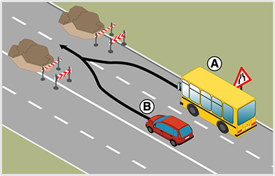
- 614. A képen látható helyen mindkét jármű csak irányváltoztatással tudja az útját folytatni. Melyik jármű haladhat tovább elsőként? #724046
- A jobbról érkező ’A’ jelű autóbusz.
- A balról érkező ’B’ jelű személygépkocsi.
- Kölcsönös megegyezés alapján haladhatnak tovább.
- 615. A képen látható helyen melyik jármű haladhat tovább elsőként? #724047
- Az ’A’ jelű autóbusz.
- A ’B’ jelű személygépkocsi.
- Kölcsönös megegyezés alapján haladhatnak tovább.
- 616. Ön az ’A’ jelű autóbuszt vezeti. A képen látható helyen... #724048
- elsőbbsége van a ’B’ jelű személygépkocsival szemben.
- elsőbbséget kell adnia a ’B’ jelű személygépkocsi részére.
- meg kell egyezniük a továbbhaladási sorrendben.
- 617. A képen látható helyen melyik jármű haladhat tovább elsőként? #724067
- Az ’A’ jelű személygépkocsi.
- A ’B’ jelű autóbusz.
- Kölcsönös megegyezés alapján haladhatnak tovább.
- 618. Ön a ’B’ jelű autóbuszt vezeti. A képen látható helyen... #724068
- elsőbbséget kell adnia az ’A’ jelű személygépkocsi részére.
- elsőbbsége van az ’A’ jelű személygépkocsival szemben
- meg kell egyezniük a továbbhaladási sorrendben.
- 619. Szabályosan közlekedik a kialakult párhuzamos közlekedésben a képen látható ’A’ jelű távolsági autóbusz? #724082
- Igen, ha a járművek megelőzése után visszatér a külső forgalmi sávba.
- Nem, távolsági autóbusszal nem tartózkodhat a belső forgalmi sávban.
- Igen, de kizárólag 22 és 06 óra között.
- 620. Ön az ’A’ jelű, saját vállalkozásban használt autóbuszt lakott területen kívül vezeti. Szabályosan közlekedik-e a belső forgalmi sávban? #724107
- Csak akkor, ha a következő közeli útkereszteződésben balra kíván kanyarodni.
- Igen, autóbusszal szabad a belső forgalmi sávban haladni.
- Igen, mindaddig, amíg folyamatosan előz.
- 621. Ön az ’A’ jelű távolsági (gyorsjáratú) autóbuszt lakott területen vezeti. Szabályosan közlekedik-e a belső forgalmi sávban? #724108
- Igen.
- Nem, mert vissza kell térnie a jobb szélső forgalmi sávba.
- Csak akkor, ha a következő, közeli útkereszteződésben balra kíván kanyarodni.
- 622. Ön az ’A’ jelű távolsági (gyorsjáratú) autóbuszt lakott területen vezeti. Szabályosan közlekedik-e a belső forgalmi sávban? #724109
- Igen.
- Nem, mert a személygépkocsi megelőzése után vissza kell térnie a jobb szélső forgalmi sávba.
- Csak akkor, ha a következő, közeli útkereszteződésben balra kíván kanyarodni.
- 623. Ön az ’A’ jelű, saját vállalkozásban használt autóbuszt lakott területen kívül vezeti. Szabályosan közlekedik-e a belső forgalmi sávban? #724110
- Nem, mert ezzel az autóbusszal nem előzhet folyamatosan.
- Igen, autóbusszal használhatja a belső forgalmi sávot, ha az útra engedélyezett maximális sebességgel halad.
- Igen, mindaddig, amíg folyamatosan előz.
Megállás, várakozás, lakó-pihenő övezet, közlekedés egyéb úttesten (1 db., 1 pont)
- 624. Szabad-e ráhajtani más járművel a villamospályára, ha a látási viszonyok akadályozzák a közeledő villamos kellő távolságból való észlelését? #703537
- Nem.
- Igen, ha a villamost nem zavarja.
- Igen, ha a villamost nem akadályozza.
- 625. Szabad-e folyamatosan haladni más járművel a villamospályán, ha a látási viszonyok akadályozzák a közeledő villamos kellő távolságból való észlelésében? #703539
- Nem.
- Igen, ha a villamost nem zavarja.
- Igen, ha a villamost nem akadályozza.
- 626. Szabad-e előzni a villamospályán, ha a látási viszonyok akadályozzák a közeledő villamos kellő távolságból való észlelésében? #703540
- Nem.
- Igen, ha a villamost nem zavarja.
- Igen, ha a villamost nem akadályozza.
- 627. Szabad-e ráhajtani az ellentétes irányú villamosforgalom részére szolgáló villamosvágányra? #703541
- A bekanyarodás és a megfordulás esetét kivéve nem.
- Igen, előzési szándékkal.
- Igen, kikerülési szándékkal.
- 628. Forgalmi sávnak minősül-e az úttest villamospálya által elfoglalt része a párhuzamos közlekedésre vonatkozó szabályok alkalmazása szempontjából? #703542
- Általában nem.
- Igen, minden esetben.
- Sosem.
- 629. Forgalmi sávnak minősül-e az úttest villamospálya által elfoglalt része a párhuzamos közlekedésre vonatkozó szabályok alkalmazása szempontjából? #703543
- Igen, ha útburkolati jel a villamospályára vezeti az egyéb járművek forgalmát.
- Igen, minden esetben.
- Sosem.
- 630. Szabad-e behajtani autóbusszal a lakó-pihenő övezetbe? #703559
- Igen, ha oda látogatókat szállít.
- Nem.
- Igen, de csak a 20 főnél kevesebb utast szállító autóbusszal.
- 631. Általában az út mely részén és hogyan kell a járművel megállni? #703561
- Az úttest menetirány szerinti jobb szélén, azzal párhuzamosan, egy sorban.
- Az úttest bármelyik szélén, azzal párhuzamosan.
- A menetirány szerinti jobb oldalon bárhol.
- 632. Kell-e a megállást - ide nem értve a forgalmi okból történő megállást - irányjelzéssel jelezni? #703562
- Igen, kell.
- Nem kell.
- Csak akkor kell, ha az irányváltoztatással is jár.
- 633. Melyik járműnek van elsőbbsége a menetirányt változtató villamos és az egyenesen haladó más jármű forgalmi viszonyában? #703571
- Az egyenesen haladó (menetirányt nem változtató) járműnek.
- Minden esetben a villamosnak.
- 634. Melyik járműnek van elsőbbsége útkereszteződésben az azonos irányból érkező villamos és más jármű viszonyában? #703573
- Az egyenesen haladó járműnek a vele azonos irányból érkező és bekanyarodó járművel szemben elsőbbsége van (ide nem értve a kanyarodó főútvonal esetét).
- Amikor villamos és más jármű útkereszteződésben találkoznak, mindig a villamosnak van elsőbbsége.
- 635. Párhuzamos közlekedésre alkalmas úttesten, középen elhelyezett villamosvágányok esetén szabad-e más járművel előzés céljából a villamosvágányra hajtani? #703574
- Igen, ha a forgalmi sávokat útburkolati jelekkel nem jelölték (ide nem értve az ellentétes irányú villamosforgalom részére szolgáló villamosvágányt).
- A villamosforgalom részére szolgáló villamosvágányokra sosem szabad ráhajtani.
- Igen, ha a forgalmi sávokat útburkolati jelekkel jelölték.
- 636. Szabad-e megállni körforgalmú úton? #703578
- Nem.
- Igen.
- Igen, de csak egy nyomon haladó járművel.
- 637. Szabad-e megállni útkereszteződésben? #703579
- Általában nem.
- Igen.
- Nem, soha.
- 638. Szabad-e megállni útkereszteződésben az úttorkolattal szemben? #703580
- Igen, ha ez a többi jármű bekanyarodását nem akadályozza.
- Igen, ha ez a többi jármű vezetőjét nem zavarja.
- Nem.
- 639. Szabad-e megállni az útkereszteződésnél az úttestek széleinek metszéspontjától számított 5 m-en belül? #703581
- Nem.
- Igen, de csak személygépkocsival.
- Igen, de csak motorkerékpárral.
- 640. Az alábbiak közül milyen feltétellel szabad a járművet várakozás tekintetében őrizetlenül hagyni? #714880
- Ha a járművezető gondoskodott arról, hogy a jármű önmagától ne indulhasson el.
- A járművezetőnek minden esetben kerékéket kell alkalmaznia.
- A járművezetőnek gondoskodnia kell arról, hogy a jármű áramtalanítva legyen.
- 641. Szabad-e olyan helyen várakozni, ahol a megállás tilos? #714881
- Nem.
- Igen, a várakozás szabályainak betartásával.
- Igen, ha a többi közlekedőt nem akadályozza.
- 642. Szabad-e várakozni a három külön úttesttel rendelkező út középső úttestjén? #714882
- Nem.
- Igen, ha a járművezető a járművénél marad.
- Igen, amennyiben nincs az úttesten jelentősebb forgalom.
- 643. Szabad-e várakozni lakott területen kívüli út úttestjén? #714883
- Igen, ha az nem főútvonal.
- Igen, akár főútvonalon is.
- Nem.
- 644. Szabad-e megállni kijelölt gyalogos-átkelőhelyen? #714901
- Nem.
- Igen, ha ez nem akadályozza a gyalogosok közlekedését.
- Igen, ha ott nem zajlik gyalogos forgalom.
- 645. Szabad-e megállni villamos-megállóhelynél lévő járdasziget és a hozzá közelebb eső járda közötti úttestrészen? #714905
- Nem.
- Igen, de csak a ki- és beszállás idejére.
- Igen, de csak kétkerekű motorkerékpárral.
- 646. Szabályos helyen várakozik az ’A’ jelű autóbusz? #715102
- Igen, ha az úttestek széleinek metszéspontjától számított 5 méterre, vagy attól nagyobb távolságra tartózkodik.
- Nem, mert a kijelölt gyalogos-átkelőhely után ki kell hagynia legalább 15 métert.

- 647. Az ábrán látható ’A’ és ’B’ jelű várakozó járművek az úttestek széleinek metszéspontjától számított 5 méter távolságra tartózkodnak. Ezek közül melyik szabályos? #715103
- Csak a ’B’ jelű személygépkocsi.
- Csak az ’A’ jelű autóbusz.
- Mindkét jármű.
- 648. Szabályos helyen várakozik az ’A’ jelű autóbusz? #715104
- Nem, mert a kijelölt gyalogos-átkelőhely előtt szabadon kell hagynia legalább 15 métert.
- Igen, ha az úttestek széleinek metszéspontjától számított 5 méter távolságon kívül tartózkodik.
- 649. Mikor szabályos az ábrán látható ’B’ jelű autóbusz várakozása? #715105
- Ha az úttestek széleinek metszéspontjától számított 5 méter távolságon kívül tartózkodik.
- Ha az úttestek széleinek metszéspontjától számított 4 méter távolságra tartózkodik.
- Ha az úttestek széleinek metszéspontjától számított 3 méter távolságra tartózkodik.
- 650. Szabad-e megállni a villamospályán? #721651
- Nem.
- Igen, de csak a ki- és beszállás idejére.
- Igen, de várakozni már nem szabad.
- 651. Az alábbiak közül mi a feltétele annak, hogy a járművezető a járművet várakozás tekintetében őrizetlenül hagyhassa? #721949
- A járművezetőnek gondoskodnia kell arról, hogy a járművet illetéktelen személy ne indíthassa el.
- A vészvillogót be kell kapcsolnia.
- Mindig kerékéket kell alkalmazni.
Járművek kivilágítása, közlekedési partnerek, megkülönböztető jelzések (1 db., 1 pont)
- 652. Hogyan kell elsőbbséget adni a megkülönböztető jelzéseit használó gépjármű részére? #703702
- Félrehúzódással, szükség esetén megállással.
- Kizárólag megállással.
- Enyhe lassítással.
- A többi közlekedő zavarása nélkül.
- 653. Hogyan kell elsőbbséget adni a megkülönböztető jelzéseit használó gépjárművekkel kísért, zárt csoportban haladó járművek részére? #703703
- Félrehúzódással, szükség esetén megállással.
- Kizárólag megállással.
- Enyhe lassítással.
- A többi közlekedő zavarása nélkül.
- 654. Elsőbbséget kell-e adni a megkülönböztető jelzéseket használó gépjármű részére útkereszteződésben, ha az alárendelt úton érkezik? #703704
- Igen, minden helyzetben.
- Igen, de csak akkor, ha ezt a jármű vezetője a távolsági fényszóró felvillantásával külön kéri.
- Nem.
- 655. Elsőbbséget kell-e adni a megkülönböztető jelzéseket használó gépjárművekkel kísért, zárt csoportban haladó járművek részére útkereszteződésben, ha azok alárendelt úton érkeznek? #703705
- Igen, minden helyzetben, a zárt csoportban haladó valamennyi jármű részére.
- Igen, de csak akkor, ha ezt az elöl haladó jármű vezetője a távolsági fényszóró felvillantásával külön kéri.
- Nem.
- 656. Elsőbbséget kell-e adni a megkülönböztető jelzéseket használó gépjármű részére útszűkületben? #703706
- Igen, minden helyzetben.
- Igen, de csak akkor, ha ezt a jármű vezetője a távolsági fényszóró felvillantásával külön kéri.
- Nem.
- 657. Elsőbbséget kell-e adni a megkülönböztető jelzéseket használó gépjárművekkel kísért, zárt csoportban haladó járművek részére útszűkületben? #703707
- Igen, minden helyzetben, a zárt csoportban haladó valamennyi jármű részére.
- Igen, de csak akkor, ha ezt az elöl haladó jármű vezetője a távolsági fényszóró felvillantásával külön kéri.
- Nem.
- 658. Elsőbbséget kell-e adni a megkülönböztető jelzéseket használó gépjármű részére telephelyről való kihajtás esetén? #703708
- Igen, minden helyzetben.
- Igen, de csak akkor, ha jelzőőr vagy fényjelző készülék biztosítja a kihajtását.
- Nem.
- 659. Elsőbbséget kell-e adni a megkülönböztető jelzéseket használó gépjármű részére az autópályára történő felhajtása esetén? #703709
- Igen, minden helyzetben.
- Nem.
- Igen, de csak akkor, ha ezt a jármű vezetője a távolsági fényszóró felvillantásával külön kéri.
- 660. Megkülönböztető fényjelzést használó, álló járművet megközelíteni csak... #703710
- fokozott óvatossággal szabad.
- állandó sebességgel szabad.
- megállást követően szabad.
- akkor szabad, ha erre a jármű vezetője engedélyt ad.
- 661. Megkülönböztető fényjelzést használó, álló jármű mellett elhaladni csak... #703711
- fokozott óvatossággal szabad.
- állandó sebességgel szabad.
- megállást követően szabad.
- akkor szabad, ha erre a jármű vezetője engedélyt ad.
- 662. Szabad-e megelőzni a lakott területen 30 km/h sebességgel haladó, megkülönböztető jelzéseit használó mentő gépkocsit? #703712
- Nem.
- Igen.
- Igen, de csak akkor, ha a szükséges előzési sebességkülönbség rendelkezésre áll.
- Igen, de csak akkor, ha erre a jármű vezetője engedélyt ad.
- 663. Hogyan kell kivilágítani a forgalomban részt vevő gépkocsit éjszaka és korlátozott látási viszonyok között? #703722
- Helyzetjelző lámpákkal és tompított fényszóróval.
- Csak helyzetjelző lámpákkal.
- Csak távolsági fényszóróval.
- Tompított fényszóróval és nappali menetjelző lámpával együttesen, valamint hátsó ködlámpával.
- 664. Hol szabad tompított fényszóró helyett távolsági fényszórót használni? #703723
- A fényjelzés kivételével csak lakott területen kívül.
- A fényjelzés kivételével csak lakott területen.
- Közúton bárhol.
- Kizárólag autópályán.
- 665. Szabad-e lakott területen tompított fényszóró helyett folyamatosan távolsági fényszórót használni? #703724
- A fényjelzés kivételével nem.
- Igen.
- Csak akkor, ha nem közlekedik belátható távolságon belül senki.
- Csak akkor, ha a tompított fényszórók valamelyike meghibásodott.
- 666. Szabad-e lakott területen kívül tompított fényszóró helyett folyamatosan távolsági fényszórót használni? #703725
- Igen, ha ez a közlekedés többi résztvevőjét nem vakítja el.
- Nem.
- Csak akkor, ha a tompított fényszórók valamelyike meghibásodott.
- 667. Szabad-e lakott területen a távolsági fényszórót fényjelzés céljából használni? #703726
- Igen, ha ez a közlekedés többi résztvevőjét nem vakítja el.
- Nem.
- Igen, ha elsőbbségünkről akarunk lemondani.
- 668. Szabad-e lakott területen kívül a távolsági fényszórót fényjelzés céljából használni? #703727
- Igen, ha ez a közlekedés többi résztvevőjét nem vakítja el.
- Nem.
- Igen, ha elsőbbségünkről akarunk lemondani.
- 669. Át kell-e kapcsolni tompított világításra, ha a másik jármű követése esetén a távolsági fényszóró – a visszapillantó tükrön át – az elöl haladó jármű vezetőjét elvakíthatja? #703728
- Igen.
- Nem.
- Nem, ha a topított fényszórók valamelyike nem működik.
- 670. Figyelembe kell-e vennie a távolsági fényszóró használatakor az úttal párhuzamos vasúti pályán haladó járművet? #703729
- Igen.
- Nem.
- Nem, ha a topított fényszórók valamelyike nem működik.
- 671. Figyelembe kell-e vennie a távolsági fényszóró használatakor az úttal párhuzamos vízi úton haladó járművet? #703730
- Igen.
- Nem.
- Nem, ha a topított fényszórók valamelyike nem működik.
- 672. Amennyiben a megkülönböztető jelzésekkel felszerelt gépjármű vezetője kizárólag a megkülönböztető fényjelzését használja, jogosult... #714921
- a megengedett legnagyobb sebességre vonatkozó rendelkezéseket figyelmen kívül hagynia.
- a vasúti átjárót biztosító berendezések jelzéseit figyelmen kívül hagynia.
- a forgalmat irányító rendőr jelzéseit figyelmen kívül hagynia.
- a forgalmat irányító fényjelző készülék jelzéseit figyelmen kívül hagynia.
- 673. Mekkora követési távolságot kell tartani a megkülönböztető jelzéseket használó gépjármű mögött? #714947
- Akkorát, hogy az ne járjon a közlekedés többi résztvevőjének zavarásával.
- Akkorát, hogy ennek a járműnek az előzését a lehető leggyorsabban végre lehessen hajtani.
- Kétszer akkorát, amekkorát az adott sebesség igényel.
- Akkorát, amekkora még nem zavarja a járművezetőt.
- 674. Elsőbbséget kell-e adni a figyelmeztető fényjelzést használó gépjármű részére útkereszteződésben, ha az alárendelt úton érkezik? #714948
- Nem.
- Igen, minden helyzetben.
- Igen, de csak akkor, ha ezt a jármű vezetője a távolsági fényszóró felvillantásával külön kéri.
- Igen, a többi közlekedő zavarása nélkül.
- 675. Elsőbbséget kell-e adni a figyelmeztető fényjelzést használó gépjármű részére útszűkületben? #714949
- Nem.
- Igen, de csak akkor, ha ez hirtelen fékezés nélkül megtehető.
- Igen, de csak akkor, ha ezt a jármű vezetője a távolsági fényszóró felvillantásával külön kéri.
- Igen, a többi közlekedő zavarása nélkül.
- 676. Elsőbbséget kell-e adni a figyelmeztető fényjelzést használó gépjármű részére autópályára történő felhajtás esetén? #714950
- Nem.
- Igen, minden helyzetben.
- Igen, de csak akkor, ha ezt a jármű vezetője a távolsági fényszóró felvillantásával külön kéri.
- Igen, de csak akkor, ha ez hirtelen fékezés nélkül megtehető.
- 677. Figyelmeztető fényjelzést használó, álló járművet megközelíteni csak... #714951
- fokozott óvatossággal szabad.
- állandó sebességgel szabad.
- megállást követően szabad.
- akkor szabad, ha erre a jármű vezetője engedélyt ad.
- 678. Szabad-e megelőzni a lakott területen 40 km/h sebességgel haladó, figyelmeztető jelzést használó gépkocsit? #714952
- Igen, de csak fokozott óvatossággal.
- Nem.
- Igen, de csak akkor, ha a figyelmeztető jelzést használó jármű jobbra húzódással egyértelműen jelzi, hogy az előzés végrehajtható.
- Igen, de csak akkor, ha erre a jármű vezetője engedélyt ad.
- 679. A veszélyes anyagot szállító járművet megközelíteni csak... #714954
- fokozott óvatossággal szabad.
- állandó sebességgel szabad.
- megállást követően szabad.
- megnövelt sebességgel szabad.
- 680. A veszélyes anyagot szállító jármű mellett elhaladni csak... #714955
- fokozott óvatossággal szabad.
- állandó sebességgel szabad.
- megállást követően szabad.
- megnövelt sebességgel szabad.
- 681. Ködfényszórót, továbbá hátsó helyzetjelző ködlámpát abban az esetben szabad használni, ... #714958
- ha a látási viszonyok ezt indokolják.
- ha nélkülük legfeljebb 20 km/h sebességgel tudna haladni.
- ha lakott területen kívül közlekedik.
- ha a tompított fényszórók, vagy a helyzetjelző lámpák valamelyike meghibásodott.
- 682. Használhat-e lakott területen kívüli úton a forgalomban részt vevő gépkocsin a tompított fényszóró helyett nappali menetjelző lámpát nappal és jó látási viszonyok között? #714960
- Igen.
- Nem.
- 683. Az alábbi járművek közül melyik használhat lakott területen kívül közlekedve nappal és jó látási viszonyok között nappali menetjelző lámpát a tompított fényszóró helyett? #714962
- A személygépkocsi.
- A mezőgazdasági vontató.
- A segédmotoros kerékpár.
- A lassú jármű.
- 684. Ki kell-e világítani az úttesten álló járművet éjszaka és korlátozott látási viszonyok között, ha az úton van közvilágítás? #714963
- Nem.
- Igen.
- 685. Szabad-e az álló járművön – a forgalmi okból megálló járművet kivéve – tompított fényszórót használni? #714965
- Csak erős ködben vagy sűrű hóesésben.
- Igen, korlátozás nélkül.
- Nem.
- Igen, ha a többi közlekedőt nem vakítja el.
- 686. Szabad-e erős ködben vagy sűrű hóesésben álló járművön – a forgalmi okból megálló járművet kivéve – ködfényszórót használni? #714966
- Nem.
- Igen.
- Igen, ha a többi közlekedőt nem vakítja el.
- 687. Ha az álló jármű kivilágítása szükséges, akkor a gépjárművet... #721369
- a helyzetjelző lámpákkal kell kivilágítani.
- a tompított fényszórókkal kell kivilágítani.
- a távolsági fényszórókkal kell kivilágítani.
- a vészvillogó működtetésével kell kivilágítani.
- 688. Ki kell-e világítani az úttesten álló járművet éjszaka és korlátozott látási viszonyok között, ha a járművet egyéb külső fényforrás kellően megvilágítja? #721371
- Nem.
- Igen.
- 689. Kötelező-e erős ködben vagy sűrű hóesésben álló járművön tompított fényszórót használni? #721372
- Nem.
- Igen.
- Csak akkor, ha a járművezető a járművénél tartózkodik.
- 690. Szabad-e erős ködben vagy sűrű hóesésben álló járművön – a forgalmi okból megálló járművet kivéve – távolsági fényszórót használni? #721373
- Nem.
- Igen.
- Igen, ha a többi közlekedőt nem vakítja el.
- 691. Figyelmeztető fényjelzést használó, álló jármű mellett elhaladni csak... #721643
- fokozott óvatossággal szabad.
- állandó sebességgel szabad.
- megállást követően szabad.
- akkor szabad, ha erre a jármű vezetője engedélyt ad.
- 692. Elsőbbséget kell-e adni a figyelmeztető fényjelzést használó gépjármű részére annak telephelyről való kihajtása esetén? #721647
- Nem.
- Igen, minden helyzetben.
- Igen, de csak akkor, ha ezt a jármű vezetője a távolsági fényszóró felvillantásával külön kéri.
- Igen, de csak akkor, ha ez hirtelen fékezés nélkül megtehető.
- 693. Mikor hagyhatja figyelmen kívül a közúti jelzéseket a megkülönböztető jelzésekkel felszerelt gépjármű vezetője az alábbiak közül? #721741
- Csak akkor, ha a megkülönböztető jelzéseket együttesen használja.
- Sohasem, ezeket neki is figyelembe kell vennie.
- Mindig, függetlenül attól, hogy használja-e a megkülönböztető jelzéseit vagy sem.
- Ha a jármű vezetője erre utasítást kap felelős beosztásban lévő utasától.
Figyelmeztető jelzések, másként közlekedve (1 db., 1 pont)
- 694. Az út vagy közmű tisztítását végző jármű... #703643
- legfeljebb 10 km/h sebességgel a járdán is közlekedhet.
- legfeljebb 20 km/h sebességgel a járdán is közlekedhet.
- a járdán csak éjszaka közlekedhet.
- a járdán nem közlekedhet.
- 695. Az út tisztítását végző jármű... #703644
- olyan helyen is megállhat, ahol az egyébként tilos.
- csak olyan helyen állhat meg, ahol az egyébként szabad.
- a munka végzése közben soha nem állhat meg.
- csak a forgalommal szemben állhat meg.
- 696. A települési hulladék összegyűjtését végző jármű... #703645
- olyan útra is behajthat, ahová egyébként behajtani tilos.
- a behajtási tilalmakat figyelembe kell, hogy vegye.
- csak 06 és 22 óra között végezheti tevékenységét.
- csak 22 és 06 óra között végezheti tevékenységét.
- 697. Van-e elsőbbségük a figyelmeztető jelzést használó járműveknek a többi járművel szemben? #703646
- Nincs elsőbbségük.
- Igen, elsőbbségük van.
- Igen, a jobbról érkező járművekkel szemben elsőbbsége van.
- 698. Szabad-e részt venni a közúti forgalomban a jogszabályban meghatározott össztömeget meghaladó járművel? #703647
- Csak az út kezelőjének hozzájárulásával, meghatározott útvonalon és feltételek megtartásával.
- Igen, minden feltétel nélkül, ha a jármű egyébként alkalmas a szállítás elvégzésére.
- Nem.
- Csak földúton.
- 699. Szabad-e részt venni a közúti forgalomban a jogszabályban meghatározott tengelyterhelést meghaladó járművel? #703648
- Csak az út kezelőjének hozzájárulásával, meghatározott útvonalon és feltételek megtartásával.
- Igen, minden feltétel nélkül, ha a jármű egyébként alkalmas a szállítás elvégzésére.
- Nem.
- Csak földúton.
- 700. Szabad-e részt venni a közúti forgalomban a jogszabályban meghatározott méretet meghaladó járművel? #703649
- Csak az út kezelőjének hozzájárulásával, meghatározott útvonalon és feltételek megtartásával.
- Igen, minden feltétel nélkül, ha a jármű egyébként alkalmas a szállítás elvégzésére.
- Nem.
- Csak földúton.
- 701. Mennyi a megengedett legnagyobb sebessége a túlsúlyos, illetőleg túlméretes járműnek? #703650
- 30 km/h, ha az útvonalengedély más sebességet nem határoz meg.
- 40 km/h, ha az útvonalengedély más sebességet nem határoz meg.
- 50 km/h, ha az útvonalengedély más sebességet nem határoz meg.
- 25 km/h, ha az útvonalengedély más sebességet nem határoz meg.
- 702. Mikor adhat az autóbusz vezetője indulási jelet a megállóból való indulás esetén? #714922
- Amikor az utasok fel- és leszállása befejeződött.
- Valamennyi ajtó záródását követően.
- Az irányjelzést követően.
- Amikor az utasok elhelyezkedtek.
- 703. Az autóbusz vezetője adhat-e indulási jelet, ha még nem fejeződött be a felszállás? #714923
- Igen, ha a jármű megtelt, és a járművezető figyelmeztette az utasokat a felszállás megszüntetésére.
- Igen, minden elindulás alkalmával.
- Nem.
- A fel- és leszállás meggyorsítása érdekében bármikor.
- 704. Mikor jelezheti az autóbusz vezetője irányjelzéssel a megállóból való elindulási szándékát? #714924
- Csak valamennyi ajtó záródását követően.
- Amikor az utasok fel- és leszállása befejeződött.
- A megállást követően azonnal.
- Amikor az utasok elhelyezkedtek.
- 705. Közlekedhet-e a villamospótló autóbusz a villamospályán? #714926
- Igen.
- Nem.
- 706. A járdasziget melyik oldaláról veheti fel a villamospótló autóbusz a járdaszigeten várakozó utasokat? #714927
- A villamos járdasziget bal oldaláról.
- A villamos járdasziget jobb oldaláról.
- A villamos járdaszigetről nem veheti fel, csak a járdáról.
- A villamos járdasziget tetszés szerinti oldaláról.
- 707. Figyelembe veheti-e a villamospótló autóbusz vezetője a villamosforgalom irányítására szolgáló fényjelző készülék jelzését? #714928
- Igen, figyelembe is kell vennie abban az esetben, ha a villamospályán közlekedik.
- Igen, függetlenül attól, hogy a villamospályán közlekedik-e vagy sem.
- Nem.
- Igen, de csak akkor, ha teljes biztonsággal ismeri azok jelzéseit.
Közlekedés kerékpárral, állati erővel vontatott járművel (1 db., 1 pont)
- 708. Hol kell közlekednie segédmotoros kerékpárral a lakott területen kívüli, főútvonalként megjelölt úton az alábbiak közül? #703653
- Az úttest jobb széléhez húzódva.
- A forgalmi sáv közepén.
- A menetirány szerinti jobb oldal bármely részén.
- Az útpadkán.
- 709. Közlekedhetnek-e egymás mellett párhuzamosan haladva az úttesten a kétkerekű segédmotoros kerékpárral közlekedők? #703654
- Nem.
- Igen.
- Csak lakott területen.
- Csak lakott területen kívül.
- 710. Hogyan kanyarodhat balra segédmotoros kerékpárral a lakott területen kívüli főútvonalról? #703655
- A besorolási szabálynak megfelelően, a felezővonal mellől.
- Az úttest jobb széléről, gyalogosan áttolva a segédmotoros kerékpárt a másik útra.
- Az úttest jobb széléről.
- 711. A segédmotoros kerékpárhoz utánfutót kapcsolni... #703656
- nem szabad.
- az erre vonatkozó szabályok megtartásával szabad.
- megkötés nélkül szabad.
- 712. A segédmotoros kerékpárhoz oldalkocsit kapcsolni... #703657
- nem szabad.
- az erre vonatkozó szabályok megtartásával szabad.
- megkötés nélkül szabad.
- 713. Szabad-e vontatni a segédmotoros kerékpárt más járművel? #703658
- Nem.
- Igen.
- 714. Szabad-e segédmotoros kerékpárral vontatni más járművet? #703659
- Nem.
- Igen.
- 715. Milyen hosszan nyúlhat túl előre vagy hátra a segédmotoros kerékpáron elhelyezett rakomány? #703660
- Legfeljebb 1 méter.
- Legfeljebb 40 cm.
- Semmilyen túlnyúlás nem megengedett.
- Legfeljebb 2 méter.
- 716. A segédmotoros kerékpáron elhelyezett rakomány... #703661
- a vezetőt nem akadályozhatja a jármű vezetésében.
- a vezetőt nem zavarhatja a jármű vezetésében.
- a vezetőt nem veszélyeztetheti.
- 717. Szabad-e utast szállítani a kétkerekű segédmotoros kerékpáron? #703662
- Nem.
- Igen, ha a jármű vezetője betöltötte a 17. életévét.
- Igen, ha az utas betöltötte a 17. életévét.
- Igen, ha az utas is rendelkezik bukósisakkal.
Műszaki hiba, közúti baleset, egyéb igénybevétel (1 db., 1 pont)
- 718. Ha a jármű vezetője az autóbusznak olyan hibáját észleli, amely balesethez vezethet, akkor... #703665
- köteles az autóbuszt haladéktalanul megállítani.
- köteles szorosan az úttest jobb szélén közlekedni.
- legfeljebb 20 km/óra sebességgel haladhat.
- legfeljebb 25 km/óra sebességgel haladhat.
- 719. Ha elromlott az autóbusz kormányszerkezete, a jármű... #703668
- nem közlekedhet tovább.
- tovább közlekedhet.
- legfeljebb mellékútvonalon közlekedhet.
- legfeljebb földúton közlekedhet tovább.
- differenciálzár bekapcsolásával tovább közlekedhet.
- 720. Ha elromlott a jármű üzemi fékberendezése, a jármű... #703669
- nem közlekedhet tovább.
- tovább közlekedhet.
- csak akkor közlekedhet tovább, ha a rögzítőfék jól működik.
- csak akkor közlekedhet tovább, ha a vontatmány fékszerkezete megfelelően működik.
- 721. Ha elromlott az autóbusz összes féklámpája, akkor a jármű... #703677
- nem közlekedhet tovább.
- tovább közlekedhet, ha a többi lámpa működik.
- legfeljebb a menetrend szerinti végállomásig közlekedhet.
- legfeljebb földúton közlekedhet tovább.
- 722. Folytathatja-e útját az autóbusszal, ha annak elromlott a bal oldali első helyzetjelző lámpája, és azt csak a távolsági fényszóróval tudja helyettesíteni? #703680
- Csak akkor, ha a jármű kivilágítása nem szükséges.
- Igen.
- Csak jó látási viszonyok között mellék-, vagy földúton.
- 723. Ha elromlott az autóbusz sebességíró műszere (tachográf), akkor a jármű... #703682
- a telephelyre való első visszatérésig, de legfeljebb 24 órán át közlekedhet.
- nem közlekedhet tovább.
- legfeljebb a gépkocsivezető munkaidejének végéig közlekedhet.
- tovább közlekedhet még 30 napig, de kézzel feljegyzést kell készíteni a munkájáról.
- 724. Helyettesítheti-e az elromlott bal oldali első helyzetjelző lámpát a tompított fényszóró és a távolsági fényszóró? #703683
- Csak a tompított fényszóró helyettesítheti.
- Mindkettő helyettesítheti.
- Egyik sem helyettesítheti.
- 725. Helyettesítheti-e az elromlott bal oldali hátsó helyzetjelző lámpát a hátsó helyzetjelző ködlámpa? #703684
- Nem.
- Igen.
- Csak lakott területen kívül.
- Csak lakott területen belül.
- 726. Helyettesítheti-e az elromlott bal oldali első helyzetjelző lámpát a tompított fényszóró vagy a nappali menetjelző lámpa? #703685
- Ezek közül mindkettő helyettesítheti.
- Egyik sem helyettesítheti.
- Csak a tompított fényszóró helyettesítheti.
- Csak a nappali menetjelző lámpa helyettesítheti.
- 727. Mi a teendője az alábbiak közül, ha menet közben az autóbuszon olyan hibát észlel, ami a közlekedés biztonságát közvetlenül nem veszélyezteti? #703688
- A legközelebbi olyan helyig szabad közlekedni, ahol a hiba elhárítható.
- Nem közlekedhet tovább.
- Útját korlátozás nélkül folytathatja.
- 728. Hol és hogyan közlekedhet tovább, ha az autóbuszán olyan műszaki hibát észlel, ami a közlekedés biztonságát közvetlenül nem veszélyezteti? #703690
- Fokozott óvatossággal, lehetőleg kis forgalmú úton és időszakban.
- Nem közlekedhet tovább.
- Korlátozás nélkül közlekedhet tovább.
- A megengedett legnagyobb sebességgel bárhol közlekedhet, hogy mielőbb a javító műhelyhez érjen.
- 729. Hol kell elhelyeznie a közúton elromlott autóbuszát? #703693
- Lehetőleg az úttesten kívül, vagy olyan helyen, ahol a várakozás nem tilos.
- Mindig az úttesten, kellően kivilágítva.
- Kizárólag várakozó helyen.
- Az úttesten, a forgalommal szemben.
- 730. Maradhat-e az elromlott járműve az úttesten, ha van lehetősége azt az útpadkán elhelyezni? #703694
- Nem.
- Igen.
- Csak akkor, ha az útpadka nem bírja el a járművet.
- 731. Elromlott autóbusza lakott területen kívül az úttesten áll. Ezt a járművet elakadást jelző háromszöggel... #714935
- meg kell jelölni.
- meg szabad jelölni.
- tilos megjelölni.
- ajánlott megjelölni.
- 732. Hol és hogyan szabad közlekedni, ha elromlott autóbuszt vontat? #714937
- Fokozott óvatossággal, lehetőleg kis forgalmú úton és időszakban.
- Lehetőleg főútvonalon, hogy a lehető legrövidebb ideig tartson a vontatás.
- Korlátozás nélkül bárhol.
- Kizárólag autópályán , autóúton és párhuzamos közlekedésre alkalmas úton, hogy kényelmesen meg tudják előzni.
- 733. Ki kell-e világítani éjszaka és korlátozott látási viszonyok között a vontatott autóbuszt? #714942
- Igen.
- Nem.
- 734. Működtetni kell-e a vontatott autóbusz féklámpáját és irányjelző berendezését? #714944
- Igen, kivéve az emelve vontatást.
- Nem.
- Igen.
- 735. Működtetni kell-e az emelve vontatott autóbusz féklámpáját és irányjelző berendezését? #714945
- Nem.
- Igen.
- 736. A balesetről a rendőrhatóságot (a legközelebbi rendőrt) haladéktalanul értesíteni kell, ha a baleset... #714968
- halált vagy személyi sérülést okozott.
- jelentős anyagi kárt okozott.
- legalább 3 járművet érintett.
- jelentős torlódást okoz.
- résztvevői összevesztek.
- 737. Köteles-e a balesetben nem érintett jármű vezetője a járművön lévő tűzoltó készüléket a kigyulladt jármű oltásához használni? #714970
- Igen.
- Nem.
- Csak abban az esetben, ha a tűzoltó készülék pótlását a sérült vállalja.
- 738. Elszállíthatják-e azt a járművet, amely az autópálya úttestjén szabálytalanul várakozik? #714971
- Igen.
- Nem.
- Igen, de csak akkor, ha előzetesen értesítették a szabálytalanul várakozó jármű üzembentartóját a szabálytalan várakozásról.
- 739. Szabad-e a hatósági jelzéssel (rendszámtáblával) nem rendelkező gépjárművet főútvonalon tárolni? #714973
- Nem.
- Igen.
- Igen, legfeljebb 10 napig.
- 740. Ki jogosult az alábbaik közül a szabálytalanul várakozó jármű eltávolítására? #721277
- A közterület-felügyelet.
- A katasztrófavédelem.
- Aki rendelkezik autószállító járművel.
- Annak az ingatlannak a tulajdonosa, aki előtt a szabálytalan várakozás megvalósult.
- A polgárőrség.
- 741. Ki jogosult az alábbiak közül a szabálytalanul várakozó jármű eltávolítására? #721278
- A rendőrség.
- A katasztrófavédelem.
- Annak az ingatlannak a tulajdonosa, aki előtt a szabálytalan várakozás megvalósult.
- A polgárőrség.
- 742. Szabad-e a hatósági jelzéssel (rendszámtáblával) nem rendelkező gépjárművet mellékútvonalon tárolni? #721279
- Igen, közterület-használati engedély nélkül legfeljebb 10 napig.
- Nem.
- Igen, korlátozás nélkül.
- 743. Elszállíthatják-e azt a járművet, amely autóút úttestén szabálytalanul várakozik? #721281
- Igen.
- Nem.
- Igen, de csak akkor, ha előzetesen értesítették a szabálytalanul várakozó jármű üzembentartóját a szabálytalan várakozásról.
- 744. Elszállíthatják-e azt a járművet, amely az úttest menetirány szerinti bal oldalán szabálytalanul várakozik? #721282
- Igen.
- Nem.
- Igen, de csak akkor, ha előzetesen értesítették a szabálytalanul várakozó jármű üzembentartóját a szabálytalan várakozásról.
- 745. Elszállíthatják-e azt a járművet, amely a menetirány szerinti jobb oldalon álló járműsor mellett, második sort képezve szabálytalanul várakozik? #721283
- Igen.
- Nem.
- 746. Elszállíthatják-e azt a járművet, amely közvetlenül a kijelölt gyalogos-átkelőhely előtt szabálytalanul várakozik? #721284
- Igen.
- Nem.
- Igen, de csak akkor, ha az elszállítás költségét a szabálytalanul várakozó jármű üzembentartója előzetesen kifizette.
- 747. A rendőrség közveszély vagy elemi csapás elhárítása érdekében elszállíttathatja-e azt a járművet, amelyik szabályosan várakozik, de a kár csökkentése érdekében az elszállítás indokolt? #721291
- Igen.
- Nem.
- 748. Milyennek kell lennie az alábbiak közül az elromlott üzemifék-berendezés miatt vontatott jármű vontatásához használt vontatórúdnak? #721473
- A húzó- és a nyomóerők felvételére egyaránt alkalmas, merev vontatórúd legyen.
- Nincs feltétele, bármilyen fémrúd megfelel.
- Legalább 3 méter hosszú fémrúd legyen.
- Legalább 5 méter hosszú fémrúd legyen.
- 749. Milyennek kell lennie az alábbiak közül a 3500 kg megengedett legnagyobb össztömeget meghaladó jármű vontatásához használt vontatórúdnak? #721474
- A húzó- és a nyomóerők felvételére egyaránt alkalmas, merev vontatórúd legyen.
- Nincs feltétele, bármilyen fémrúd megfelel.
- Legalább 3 méter hosszú fémrúd legyen.
- Legalább 5 méter hosszú fémrúd legyen.
- 750. Milyen előírást kell figyelembe vennie az alábbiak közül, ha autópályán, vagy autóúton elromlott járművet kell vontatnia? #721475
- A legközelebbi lehajtásra szolgáló úton le kell térnie az autópályáról, vagy az autóútról.
- Legfeljebb a 3. kijáratig közlekedhet, utána le kell térnie az autópályáról, vagy az autóútról.
- Az úticéljának megfelelően bármeddig közlekedhet.
- A lehető legtovább kell autópályán, vagy az autóúton haladnia, mert itt könnyen meg tudják előzni.
- 751. Elromlott rögzítőfék hibás gépjárművet vontatni csak olyan járművel szabad, ... #721476
- amelynek össztömege eléri a vontatott jármű össztömegének a felét.
- amelynek össztömege eléri a vontatott jármű össztömegének kétszeresét.
- amelynek össztömege eléri a vontatott jármű össztömegét.
- amelynek össztömege eléri a vontatott jármű össztömegének kétharmadát..
- 752. Mire kell ügyelni az emelve történő vontatásnál? #721477
- Arra, hogy a megemelt rész oldalirányban ki ne lenghessen.
- Csak arra, hogy a meghibásodott kormányzott kerekek az úttesttel ne érintkezzenek.
- Csak arra, hogy a vontatott jármű a rögzítőfékkel rögzített legyen.
- Csak arra, hogy az emelő nehogy túlterhelődjön.
- 753. Hogyan végezhető az autóbusz vontatása, ha elromlott annak kormányszerkezete? #721479
- Csak emelve szabad vontatni.
- Csak merev vontatórúddal szabad vontatni.
- Bármilyen vontató eszközzel végezhető a vontatás.
- Nem vontatható.
- 754. Milyen súlyúnak kell lennie a vonó járműnek, ha elromlott (nem üzemi fékhibás) autóbuszt vontat? #721481
- El kell, hogy érje a vontatott jármű tényleges súlyának a felét.
- Nem haladhatja meg a vontatott jármű tényleges súlyának egyharmadát.
- El kell, hogy érje a vontatott jármű tényleges súlyát.
- Nem haladhatja meg a vontatott jármű tényleges súlyának kétharmadát.
- 755. Mennyinek kell lennie a vonó jármű tényleges súlyának, ha elromlott (nem üzemi fékhibás) gépkocsit vontat? #721482
- El kell, hogy érje a vontatott jármű tényleges súlyának a felét.
- El kell, hogy érje a vontatott jármű tényleges súlyának kétszeresét.
- El kell, hogy érje a vontatott jármű tényleges súlyát.
- Nem haladhatja meg a vontatott jármű tényleges súlyának kétharmadát.
- 756. Milyen súlyúnak kell lennie a vonó járműnek, ha elromlott, üzemi fékhibás autóbuszt vontat? #721484
- El kell, hogy érje a vontatott jármű tényleges súlyát.
- El kell, hogy érje a vontatott jármű tényleges súlyának kétszeresét.
- Nem haladhatja meg a vontatott jármű tényleges súlyának kétharmadát.
- Nem haladhatja meg a vontatott jármű tényleges súlyának egyharmadát.
- 757. Mely esetben kell feltűnő módon (pl. zászlóval) megjelölni a vontatókötelet, illetőleg a vontatórudat? #721486
- Ha az három méternél hosszabb.
- Ha az hosszabb, mint a vontatott jármű hossza.
- Minden vontatásnál.
- Ha az hosszabb, mint a vontató jármű hossza.
- 758. A vontatókötélnek, illetőleg a vontatórúdnak legalább olyan hosszúnak kell lennie, ... #721487
- hogy a két jármű kanyarodás közben össze ne érhessen.
- mint a vontatott jármű hossza.
- hogy a két jármű között legalább 6 méter hely legyen.
- mint a vontató jármű hossza.
- 759. Kell-e működtetni a vontatott jármű féklámpáját és irányjelző berendezését éjszaka és korlátozott látási viszonyok között? #721489
- Igen, kivéve, ha a járművet emelve vontatják.
- Igen, minden esetben.
- A vontatott jármű féklámpáját és irányjelző berendezését sosem szabad működtetni, mert az megtévesztő.
- 760. A vontatókötél, illetőleg a vontatórúd legfeljebb olyan hosszú lehet, ... #721492
- mint a vontatott jármű hossza.
- mint a vontató jármű hossza.
- mint a vontatott jármű és a vontató jármű hossza összesen.
- hogy a két jármű kanyarodás közben össze ne érjen.
- 761. Utazhat-e az emelve vontatott autóbuszban a jármű vezetője? #721497
- Nem.
- Igen.
- Csak akkor, ha napi pihenőidejét tölti.
- 762. Szabad-e a vezetőn kívül más személyt szállítani a nem emelve vontatott autóbuszon? #721500
- Nem.
- Igen.
- A második sofőr bent tartózkodhat.
- 763. Ha a rendőrhatóság értesítése nem kötelező, de valamelyik érdekelt a baleset miatt rendőri intézkedést kíván, akkor a ... #721626
- balesettel érintett járművek vezetőinek a rendőri intézkedést meg kell várniuk.
- rendőri intézkedést kérőnek kell csak az intézkedő rendőrt megvárnia.
- balesettel érintett járművek vezetőinek a rendőrségen kell az intézkedő rendőrt megvárniuk.
- 764. Mire kell ügyelni a balesetben résztvevőknek az alábbiak közül a baleseti helyszínnel kapcsolatosan? #721627
- Hogy a lehetőségekhez képest gondoskodni kell a nyomok megőrzéséről.
- Hogy az utat teljes szélességében azonnal le kell zárni.
- Hogy az utat teljes szélességében azonnal szabaddá kell tenni a közlekedők akadálytalan továbbhaladásához.
- Hogy a számukra terhelő bizonyítékokat mielőbb eltüntessék.
- 765. Köteles-e járművével azonnal megállni, ha a közlekedés során érintett egy közúti balesetben? #721628
- Igen.
- Nem.
- 766. Köteles-e a baleset folytán megsérült vagy veszélybe került személy részére segítséget nyújtani, ha közlekedése során érintett egy közúti balesetben? #721629
- Igen.
- Nem.
- 767. Köteles-e az esetleges további balesetek elkerülése érdekében minden Öntől telhetőt megtenni, ha közlekedése során érintett egy közúti balesetben? #721630
- Igen.
- Nem.
- 768. Ha egy balesetnél rendőr intézkedik, akkor a balesettel érintetteknek a helyszínt csak az intézkedő rendőr engedélyével szabad elhagyni? #721631
- Igen.
- Nem, csak annak kell a helyszínen maradni, akit a rendőr éppen meghallgat.
- Ha elérhetőségeit írásban a rendőrnek átadta, szabadon távozhat.
- 769. A balesettel érintett járművek vezetőinek a rendőri intézkedést meg kell-e várniuk akkor, ha a rendőrhatóság értesítése nem kötelező, de valamelyik érdekelt a baleset miatt rendőri intézkedést kíván, és a rendőrhatóságot (a legközelebbi rendőrt) értesíti? #721632
- Igen.
- Nem.
- 770. Értesíteni kell-e a rendőrhatóságot (a legközelebbi rendőrt) a balesetről akkor, ha a baleset veszélyes anyagot szállító járművel következett be, de személyi sérülés nem történt? #721633
- Igen.
- Nem.
- Igen, de csak akkor, ha a veszélyes anyag az úttest felületére került.
- 771. Kötelesek-e a rendőrhatóság értesítése, illetve rendőri intézkedés hiányában a balesetben érintettek személyazonosságukat hitelt érdemlően kölcsönösen igazolni és a biztosítójukat megnevezni? #721634
- Igen.
- Nem, csak rá kell írniuk az adatokat a baleseti kárbejelentő lapra.
- 772. Kötelesek-e a rendőrhatóság értesítése, illetve rendőri intézkedés hiányában a balesetben érintettek személyazonosságukat egymás számára kölcsönösen, hitelt érdemlően igazolni? #721635
- Igen.
- Nem.
- Csak akkor, ha a felelősség tekintetében megállapodtak.
- 773. Köteles-e a balesetben nem érintett jármű vezetője a segítségnyújtáshoz a járművön készenlétben tartott elsősegélynyújtó felszerelést a segítségnyújtó rendelkezésére bocsátani? #721636
- Igen.
- Nem.
- Csak abban az esetben, ha az elsősegélynyújtó felszerelés pótlását a sérült vállalja.
- 774. Biztosítani kell-e a forgalom zavartalanságát – a lehetőségekhez képest – baleset bekövetkezése esetén is? #721637
- Igen.
- Nem.
- Igen, de csak akkor, ha a baleset párhuzamos közlekedésre alkalmas úton következett be.
- 775. Alkalmazni kell-e az általános szabályokat a lehetőségekhez képest a baleset folytán megsérült jármű közlekedésére, kivilágítására és vontatására? #721638
- Igen.
- Nem.
- A bármely mértékben sérült járművet csak elszállítani szabad a helyszínről.
- 776. Értesíteni kell-e a rendőrhatóságot (a legközelebbi rendőrt) a balesetről akkor, ha a baleset csak anyagi kárral járt? #721640
- Nem.
- Igen.
- 777. Szabad-e a járművezetőnek a rendőri intézkedés megtörténtéig szeszes italt fogyasztania, ha a balesetnél rendőri intézkedés válik szükségessé? #721641
- Nem.
- Igen, de csak kis mennyiségben.
- Igen, de a csomagolást minden esetben át kell ádni a rendőrnek.
- 778. Ha a baleset folytán megrongálódott jármű vezetője nincs jelen, a károkozó köteles erre alkalmas módon a helyszínen hátrahagyni... #721642
- személyi adatait és biztosítója nevét.
- járművének forgalmi rendszámát.
- a járművezető telefonszámát.
- egy általa kitöltött kárbejelentő lapot.
- 779. Szabályos-e, ha a lakott területen álló, elromlott autóbuszát az elakadás jelző háromszögön kívül mindkét oldali első és hátsó irányjelzőjének egyidejű működtetésével jelöli meg? #721752
- Igen.
- Nem.
- 780. Elromlott gépkocsija lakott területen kívül félig az úttesten, félig az útpadkán áll. Ezt a járművet elakadást jelző háromszöggel... #721757
- meg kell jelölni.
- meg szabad jelölni.
- tilos megjelölni.
- ajánlott megjelölni.
- 781. Elromlott autóbusza lakott területen kívül a leállósávon áll. Ezt a járművet elakadást jelző háromszöggel... #721761
- meg kell jelölni.
- meg szabad jelölni.
- tilos megjelölni.
- ajánlott megjelölni.
- 782. Elegendő-e, ha a lakott területen kívüli leállósávon álló elromlott autóbuszát csak a mindkét oldali első és hátsó irányjelzőjének egyidejű működtetésével jelöli meg? #721768
- Nem.
- Igen.
Kanyarodás, egyenrangú kereszteződés (forg. h.) (1 db., 3 pont)
- 783. Mikor közlekedik szabályosan az ’A’ jelű autóbusz vezetője a képen látható útkereszteződésben? #703949
- Akkor, ha a ’2’ számmal jelölt nyomvonalon halad.
- Akkor, ha az ’1’ számmal jelölt nyomvonalon halad.
- A két nyomvonal közül tetszőlegesen választhat.
- 784. Mikor hajthat tovább az ’1’ számmal jelölt nyomvonalon a képen látható útkereszteződésben az ’A’ jelű autóbusz vezetője? #703950
- Mivel kanyarodás után a menetirány szerinti jobb oldalra kell érkezni, ezért nem hajthat az ’1’ számmal jelölt nyomvonalon.
- Csak akkor, ha 30 méteren belül áthúzódik a ’2’ számmal jelölt nyomvonalra.
- Bármikor, ha nem érkezik másik jármű.
- 785. Ön az ’A’ jelű járművet vezeti. Válassza ki a helyes állítást! #704007
- Amennyiben balra kíván kanyarodni, akkor csak az ’1’ nyomvonalon szabad közlekednie.
- Amennyiben balra kíván kanyarodni, akkor a ’2’ nyomvonalon csak akkor szabad közlekednie, ha Ön mögött másik jármű érkezik.
- Amennyiben balra kíván kanyarodni, szabadon eldöntheti, hogy az ’1’ vagy a ’2’ nyomvonalon közlekedik.
- 786. Az ’A’ jelű jármű az ábrázolt útkereszteződésben balra kíván kanyarodni. Melyik nyomvonalon szabad közlekednie? #704008
- Csak az ’1’ jelzett nyomvonalon.
- Csak a ’2’ jelzett nyomvonalon.
- Akár az ’1’, akár a ’2’ nyomvonalon.
- 787. Az ’A’ jelű jármű az ábrázolt útkereszteződésben balra kíván kanyarodni. Mikor köteles az irányjelzőjét használni? #704009
- Minden esetben.
- Csak akkor, ha az úton más jármű is érkezik.
- Csak akkor, ha a ’2’ nyomvonalon kíván bekanyarodni, majd rögtön utána leparkol az úttest bal szélére.
- 788. Ön az ’A’ jelű járművet vezeti. Bekanyarodás közben köteles-e elsőbbséget adni a ’B’ jelű kerékpáros részére? #704176
- Igen.
- Nem.
- Csak akkor, ha kerékpárúton érkezik.
- 789. Az ’A’ jelű jármű vezetője köteles irányjelzőjével jelezni bekanyarodási szándékát? #704177
- Igen.
- Nem.

- 790. Hányadikként haladhat át az útkereszteződésben a ’C’ jelű jármű? #704217
- Másodikként.
- Utolsóként.
- Elsőként.
- 791. Az ábrán látható útkereszteződésben melyik jármű haladhat tovább elsőként? #704218
- A ’B’ jelű.
- A ’C’ jelű.
- Az ’A’ jelű.
- 792. Ön a ’C’ jelű járművet vezeti. Kell-e elsőbbséget adnia ebben a forgalmi helyzetben? #704219
- Igen, de csak a ’B’ jelű jármű részére.
- Igen, a ’B’ és ’A’ jelű jármű részére egyaránt.
- Nem.
- Igen, de csak az ’A’ jelű jármű részére.

- 793. Az ábrán látható útkereszteződésben melyik jármű haladhat tovább elsőként? #704261
- Az ’A’ jelű.
- A ’C’ jelű.
- A ’B’ jelű.
- 794. Az ábrán látható útkereszteződésben melyik a helyes áthaladási sorrend? #704262
- ’A’ - ’B’ - ’C’.
- ’B’ - ’A’ - ’C’.
- ’B’ - ’C’ - ’A’.
- 795. Ön járművezetőként az alábbi forgalmi helyzetet látja. Határozza meg a helyes áthaladási sorrendet! #706980
- ’C’ - ’Ön’ - ’B’
- ’Ön’ - ’C’ - ’B’
- ’C’ - ’B’ - ’Ön’

- 796. Ön a kormánykerékkel jelzett járművel mikor közlekedik szabályosan a képen látható útkereszteződésben? #707062
- Akkor, ha a ’2’ számmal jelölt nyomvonalon halad.
- Akkor, ha az ’1’ számmal jelölt nyomvonalon halad.
- A két nyomvonal közül tetszőlegesen választhat.
- 797. Ön a kormánykerékkel jelzett járművel mikor hajthat tovább az ’1’ számmal jelölt nyomvonalon a képen látható útkereszteződésben? #707064
- Mivel kanyarodás után a menetirány szerinti jobb oldalra kell érkezni, ezért nem hajthat az ’1’ számmal jelölt nyomvonalon.
- Csak akkor, ha 30 méteren belül áthúzódik a ’2’ számmal jelölt nyomvonalra.
- Bármikor, ha nem érkezik másik jármű.
- 798. Mikor közlekedik szabályosan az ’A’ jelű autóbusz vezetője a képen látható útkereszteződésben? #707065
- Akkor, ha a ’2’ számmal jelölt nyomvonalon halad.
- Akkor, ha az ’1’ számmal jelölt nyomvonalon halad.
- A két nyomvonal közül tetszőlegesen választhat.
- 799. Mikor hajthat tovább az ’1’ számmal jelölt nyomvonalon a képen látható útkereszteződésben az ’A’ jelű autóbusz vezetője? #707066
- Mivel kanyarodás után a menetirány szerinti jobb oldalra kell érkezni, ezért nem hajthat az ’1’ számmal jelölt nyomvonalon.
- Csak akkor, ha 30 méteren belül áthúzódik a ’2’ számmal jelölt nyomvonalra.
- Bármikor, ha nem érkezik másik jármű.

- 800. Ön kormánykerékkel jelzett járművet vezeti. Válassza ki a helyes állítást! #707142
- Amennyiben balra kíván kanyarodni, akkor csak az ’1’ nyomvonalon szabad közlekednie.
- Amennyiben balra kíván kanyarodni, akkor a ’2’ nyomvonalon csak akkor szabad közlekednie, ha Ön mögött másik jármű érkezik.
- Amennyiben balra kíván kanyarodni, szabadon eldöntheti, hogy az ’1’ vagy a ’2’ nyomvonalon közlekedik.
- 801. Ön a kormánykerékkel jelzett járművel az ábrázolt útkereszteződésben balra kíván kanyarodni. Melyik nyomvonalon szabad közlekednie? #707144
- Csak az ’1’ jelzett nyomvonalon.
- Csak a ’2’ jelzett nyomvonalon.
- Akár az ’1’, akár a ’2’ nyomvonalon.
- 802. Ön a kormánykerékkel jelzett járművel az ábrázolt útkereszteződésben balra kíván kanyarodni. Mikor köteles az irányjelzőjét használni? #707146
- Minden esetben.
- Csak akkor, ha az úton más jármű is érkezik.
- Csak akkor, ha a ’2’ nyomvonalon kíván bekanyarodni, majd rögtön utána leparkol az úttest bal szélére.
- 803. Ön az ’A’ jelű járművet vezeti. Válassza ki a helyes állítást! #707147
- Amennyiben balra kíván kanyarodni, akkor csak az ’1’ nyomvonalon szabad közlekednie.
- Amennyiben balra kíván kanyarodni, akkor a ’2’ nyomvonalon csak akkor szabad közlekednie, ha Ön mögött másik jármű érkezik.
- Amennyiben balra kíván kanyarodni, szabadon eldöntheti, hogy az ’1’ vagy a ’2’ nyomvonalon közlekedik.
- 804. Az ’A’ jelű jármű az ábrázolt útkereszteződésben balra kíván kanyarodni. Melyik nyomvonalon szabad közlekednie? #707148
- Csak az ’1’ jelzett nyomvonalon.
- Csak a ’2’ jelzett nyomvonalon.
- Akár az ’1’, akár a ’2’ nyomvonalon.
- 805. Az ’A’ jelű jármű az ábrázolt útkereszteződésben balra kíván kanyarodni. Mikor köteles az irányjelzőjét használni? #707149
- Minden esetben.
- Csak akkor, ha az úton más jármű is érkezik.
- Csak akkor, ha a ’2’ nyomvonalon kíván bekanyarodni, majd rögtön utána leparkol az úttest bal szélére.
- 806. Ön az ’A’ jelű járművet vezeti. Bekanyarodás közben köteles-e elsőbbséget adni a ’B’ jelű kerékpáros részére? #707266
- Igen.
- Nem.
- Csak akkor, ha kerékpárúton érkezik.
- 807. Az ’A’ jelű jármű vezetője köteles irányjelzőjével jelezni bekanyarodási szándékát? #707267
- Igen.
- Nem.
- 808. Hányadikként haladhat át az útkereszteződésben a kormánykerékkel jelzett járművel? #707310
- Másodikként.
- Utolsóként.
- Elsőként.
- 809. Az ábrán látható útkereszteződésben melyik jármű haladhat tovább elsőként? #707312
- A ’B’ jelű.
- Az Ön által vezetett jármű.
- Az ’A’ jelű.
- 810. Ön a kormánnyal jelzett járművet vezeti. Kell-e elsőbbséget adnia ebben a forgalmi helyzetben? #707314
- Igen, de csak a ’B’ jelű jármű részére.
- Igen, a ’B’ és ’A’ jelű jármű részére egyaránt.
- Nem.
- Igen, de csak az ’A’ jelű jármű részére.

- 811. Hányadikként haladhat át az útkereszteződésben a ’C’ jelű jármű? #707315
- Másodikként.
- Utolsóként.
- Elsőként.
- 812. Az ábrán látható útkereszteződésben melyik jármű haladhat tovább elsőként? #707316
- A ’B’ jelű.
- A ’C’ jelű.
- Az ’A’ jelű.
- 813. Ön a ’C’ jelű járművet vezeti. Kell-e elsőbbséget adnia ebben a forgalmi helyzetben? #707317
- Igen, de csak a ’B’ jelű jármű részére.
- Igen, a ’B’ és ’A’ jelű jármű részére egyaránt.
- Nem.
- Igen, de csak az ’A’ jelű jármű részére.
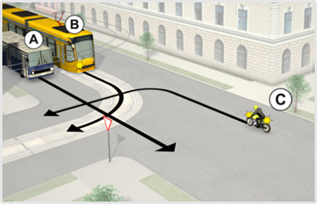
- 814. Az ábrán látható útkereszteződésben melyik jármű haladhat tovább elsőként? #707344
- Az ’A’ jelű.
- A ’C’ jelű.
- A ’B’ jelű.
- 815. Az ábrán látható útkereszteződésben melyik a helyes áthaladási sorrend? #707346
- ’A’ - ’B’ - ’C’.
- ’B’ - ’A’ - ’C’.
- ’B’ - ’C’ - ’A’.
- 816. Az ábrán látható útkereszteződésben melyik jármű haladhat tovább elsőként? #714995
- Az ’A’ jelű.
- A ’C’ jelű.
- A ’B’ jelű.
- 817. Ön az ’A’ jelű járművet vezeti. Kell-e elsőbbséget adnia ebben a forgalmi helyzetben? #714996
- Nem.
- Igen, de csak a ’B’ jelű jármű részére.
- Igen, a ’B’ és ’C’ jelű jármű részére egyaránt.
- Igen, de csak a ’C’ jelű jármű részére.
- 818. Az ábrán látható útkereszteződésben melyik a helyes áthaladási sorrend? #714997
- ’A’ - ’B’ - ’C’.
- ’B’ - ’A’ - ’C’.
- ’B’ - ’C’ - ’A’.
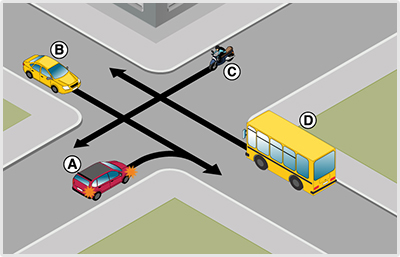
- 819. Hányadikként haladhat át az útkereszteződésben a ’D’ jelű jármű? #715014
- Utolsóként.
- Elsőként.
- Másodikként.
- Harmadikként.
- 820. Az ábrán látható útkereszteződésben melyik jármű haladhat tovább elsőként? #715015
- Az ’A’ jelű.
- A ’C’ jelű.
- A ’B’ jelű.
- A ’D’ jelű.
- 821. Az ábrán látható útkereszteződésben melyik a helyes áthaladási sorrend? #715016
- ’A’ - ’B’ - ’C’ - ’D’.
- ’A’ - ’C’ - ’D’ - ’B’.
- ’B’ - ’C’ - ’D’ - ’A’.
- ’B’ - ’A’ - ’C’ - ’D’.
- ’C’ - ’D’ - ’A’ - ’B’.
- 822. Hányadikként haladhat át az útkereszteződésben a ’B’ jelű jármű? #715035
- Elsőként.
- Utolsóként.
- Másodikként.

- 823. Hányadikként haladhat át az útkereszteződésben az ’A’ jelű jármű? #715052
- Másodikként.
- Utolsóként.
- Elsőként.
- 824. Az ábrán látható útkereszteződésben melyik jármű haladhat tovább elsőként? #715053
- A ’C’ jelű.
- Az ’A’ jelű.
- A ’B’ jelű.
- 825. Ön az ’A’ jelű járművet vezeti. Kell-e elsőbbséget adnia ebben a forgalmi helyzetben? #715054
- Igen, a ’C’ jelű jármű részére.
- Igen, a ’B’ és ’C’ jelű jármű részére egyaránt.
- Nem.
- 826. Az ábrán látható útkereszteződésben melyik a helyes áthaladási sorrend? #715055
- ’C’ - ’A’ - ’B’.
- ’B’ - ’A’ - ’C’.
- ’C’ - ’B’ - ’A’.
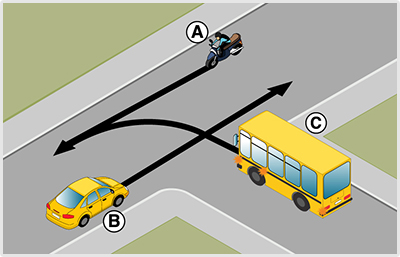
- 827. Az ábrán látható útkereszteződésben melyik jármű haladhat tovább elsőként? #715167
- Az ’A’ jelű.
- A ’C’ jelű.
- A ’B’ jelű.
- 828. Ön a ’C’ jelű járművet vezeti. Kell-e elsőbbséget adnia ebben a forgalmi helyzetben? #715168
- Igen, de csak az ’A’ jelű jármű részére.
- Nem.
- Igen, az ’A’ és ’B’ jelű jármű részére egyaránt.
- 829. Az ábrán látható útkereszteződésben melyik a helyes áthaladási sorrend? #715169
- ’A’ - ’C’ - ’B’.
- ’B’ - ’A’ - ’C’.
- ’C’ - ’B’ - ’A’.
- ’A’ - ’B’ - ’C’.

- 830. Hányadikként haladhat át az útkereszteződésben a ’C’ jelű jármű? #715181
- Másodikként.
- Utolsóként.
- Elsőként.
- 831. Az ábrán látható útkereszteződésben melyik jármű haladhat tovább elsőként? #715182
- A ’B’ jelű.
- A ’C’ jelű.
- Az ’A’ jelű.
- 832. Az ábrán látható útkereszteződésben melyik a helyes áthaladási sorrend? #715183
- ’B’ - ’C’ - ’A’.
- ’B’ - ’A’ - ’C’.
- ’C’ - ’B’ - ’A’.
- ’A’ - ’B’ - ’C’.
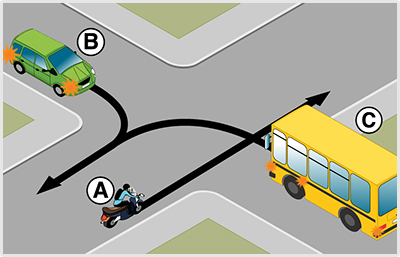
- 833. Az ábrán látható útkereszteződésben melyik jármű haladhat tovább elsőként? #715204
- A ’B’ jelű.
- A ’C’ jelű.
- Az ’A’ jelű.
- 834. Ön a ‘C’ jelű járművet vezeti. Kell-e elsőbbséget adnia ebben a forgalmi helyzetben? #715205
- Igen, de csak a ’B’ jelű jármű részére.
- Nem.
- Igen, mindkét jármű részére.
- 835. Az ábrán látható útkereszteződésben melyik a helyes áthaladási sorrend? #715206
- ’B’ - ’C’ - ’A’.
- ’B’ - ’A’ - ’C’.
- ’C’ - ’B’ - ’A’.
- ’A’ - ’B’ - ’C’.
- 836. Az ábrán látható útkereszteződésben melyik a helyes áthaladási sorrend? #715334
- ’B’ - ’C’ - ’A’.
- ’B’ - ’A’ - ’C’.
- ’C’ - ’B’ - ’A’.
- 837. Ön az ’A’ jelű járművet vezeti. Kell-e elsőbbséget adnia ebben a forgalmi helyzetben? #715374
- Nem.
- Igen, de csak a ’B’ jelű jármű részére.
- Igen, a ’B’ és ’C’ jelű jármű részére egyaránt.
- Igen, de csak a ’C’ jelű jármű részére.
- 838. Az ábrán látható útkereszteződésben melyik jármű haladhat tovább elsőként? #715376
- Az ’A’ jelű.
- A ’C’ jelű.
- A ’B’ jelű.
- 839. Ön az ’A’ jelű járművet vezeti. Kell-e elsőbbséget adnia ebben a forgalmi helyzetben? #715377
- Nem.
- Igen, de csak a ’B’ jelű jármű részére.
- Igen, a ’B’ és ’C’ jelű jármű részére egyaránt.
- Igen, de csak a ’C’ jelű jármű részére.
- 840. Az ábrán látható útkereszteződésben melyik a helyes áthaladási sorrend? #715379
- ’A’ - ’B’ - ’C’.
- ’B’ - ’A’ - ’C’.
- ’B’ - ’C’ - ’A’.

- 841. Az ábrán látható útkereszteződésben melyik jármű haladhat tovább elsőként? #715381
- Az ’A’ jelű.
- A ’C’ jelű.
- A ’B’ jelű.
- 842. Ön az ’A’ jelű járművet vezeti. Kell-e elsőbbséget adnia ebben a forgalmi helyzetben? #715382
- Nem.
- Igen, de csak a ’B’ jelű jármű részére.
- Igen, a ’B’ és ’C’ jelű jármű részére egyaránt.
- Igen, de csak a ’C’ jelű jármű részére.
- 843. Az ábrán látható útkereszteződésben melyik a helyes áthaladási sorrend? #715383
- ’A’ - ’B’ - ’C’.
- ’B’ - ’A’ - ’C’.
- ’B’ - ’C’ - ’A’.
- 844. Az ábrán látható útkereszteződésben melyik jármű haladhat tovább elsőként? #715386
- Az ’A’ jelű.
- A ’C’ jelű.
- A ’B’ jelű.
- 845. Ön az ’A’ jelű járművet vezeti. Kell-e elsőbbséget adnia ebben a forgalmi helyzetben? #715387
- Nem.
- Igen, de csak a ’B’ jelű jármű részére.
- Igen, a ’B’ és ’C’ jelű jármű részére egyaránt.
- Igen, de csak a ’C’ jelű jármű részére.
- 846. Az ábrán látható útkereszteződésben melyik a helyes áthaladási sorrend? #715388
- ’A’ - ’B’ - ’C’.
- ’B’ - ’A’ - ’C’.
- ’B’ - ’C’ - ’A’.
- 847. Hányadikként haladhat át az útkereszteződésben a ’C’ jelű jármű? #715389
- Utolsóként.
- Elsőként.
- Másodikként.
- 848. Az ábrán látható útkereszteződésben melyik jármű haladhat tovább elsőként? #715390
- Az ’A’ jelű.
- A ’C’ jelű.
- A ’B’ jelű.
- 849. Ön az ’A’ jelű járművet vezeti. Kell-e elsőbbséget adnia ebben a forgalmi helyzetben? #715391
- Nem.
- Igen, de csak a ’B’ jelű jármű részére.
- Igen, a ’B’ és ’C’ jelű jármű részére egyaránt.
- Igen, de csak a ’C’ jelű jármű részére.
- 850. Az ábrán látható útkereszteződésben melyik a helyes áthaladási sorrend? #715392
- ’A’ - ’B’ - ’C’.
- ’B’ - ’A’ - ’C’.
- ’B’ - ’C’ - ’A’.
- 851. Az ábrán látható útkereszteződésben melyik jármű haladhat tovább elsőként? #715419
- A ’B’ jelű.
- Az ’A’ jelű.
- 852. Az ábrán látható útkereszteződésben melyik jármű haladhat tovább elsőként? #715551
- Az ’A’ jelű.
- A ’C’ jelű.
- A ’B’ jelű.
- 853. Ön az ’A’ jelű járművet vezeti. Kell-e elsőbbséget adnia ebben a forgalmi helyzetben? #715552
- Nem.
- Igen, de csak a ’B’ jelű jármű részére.
- Igen, a ’B’ és ’C’ jelű jármű részére egyaránt.
- Igen, de csak a ’C’ jelű jármű részére.
- 854. Az ábrán látható útkereszteződésben melyik a helyes áthaladási sorrend? #715553
- ’A’ - ’B’ - ’C’.
- ’B’ - ’A’ - ’C’.
- ’B’ - ’C’ - ’A’.
- 855. Az ábrán látható útkereszteződésben melyik jármű haladhat tovább elsőként? #715620
- Az ’A’ jelű.
- Ön, a kormánykerékkel jelzett járművel.
- A ’B’ jelű.
- 856. Ön járművezetőként az alábbi forgalmi helyzetet látja. Határozza meg a helyes áthaladási sorrendet! #715621
- ’B’ - ’Ön’ - ’A’.
- ’B’ - ’A’ - ’Ön’.
- ’Ön’ - ’B’ - ’A’.
- 857. Az ábrán látható útkereszteződésben melyik a helyes áthaladási sorrend? #715622
- ’B’ - ’C’ - ’A’.
- ’B’ - ’A’ - ’C’.
- ’C’ - ’B’ - ’A’.
- 858. Ön az ’A’ jelű járművet vezeti. Kell-e elsőbbséget adnia ebben a forgalmi helyzetben? #715623
- Nem.
- Igen, de csak a ’B’ jelű jármű részére.
- Igen, a ’B’ és ’C’ jelű jármű részére egyaránt.
- Igen, de csak a ’C’ jelű jármű részére.
- 859. Ön a kormánykerékkel jelzett járművet vezeti. Kell-e elsőbbséget adnia ebben a forgalmi helyzetben? #715628
- Igen, a ’B’ és ’A’ jelű jármű részére egyaránt.
- Igen, de csak a ’B’ jelű jármű részére.
- Nem.
- Igen, de csak az ’A’ jelű jármű részére.
- 860. Az ábrán látható útkereszteződésben melyik a helyes áthaladási sorrend? #715637
- ’A’ - ’B’ - ’C’.
- ’B’ - ’A’ - ’C’.
- ’B’ - ’C’ - ’A’.
- 861. Ön járművezetőként az alábbi forgalmi helyzetet látja. Határozza meg a helyes áthaladási sorrendet! #715646
- ’A’ - ’B’ - ’Ön’.
- ’B’ - ’A’ - ’Ön’.
- ’B’ - ’Ön’ - ’A’.
- 862. Ön az ’A’ jelű járművet vezeti. Kell-e elsőbbséget adnia ebben a forgalmi helyzetben? #715671
- Nem.
- Igen, de csak a ’B’ jelű jármű részére.
- Igen, a ’B’ és ’C’ jelű jármű részére egyaránt.
- Igen, de csak a ’C’ jelű jármű részére.
- 863. Az ábrán látható útkereszteződésben melyik jármű haladhat tovább elsőként? #715674
- Az ’A’ jelű.
- A ’C’ jelű.
- A ’B’ jelű.
- 864. Ön az ’A’ jelű járművet vezeti. Kell-e elsőbbséget adnia ebben a forgalmi helyzetben? #715676
- Nem.
- Igen, de csak a ’B’ jelű jármű részére.
- Igen, a ’B’ és ’C’ jelű jármű részére egyaránt.
- Igen, de csak a ’C’ jelű jármű részére.
- 865. Az ábrán látható útkereszteződésben melyik a helyes áthaladási sorrend? #715679
- ’A’ - ’B’ - ’C’.
- ’B’ - ’A’ - ’C’.
- ’B’ - ’C’ - ’A’.
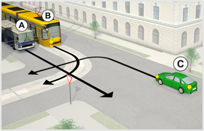
- 866. Az ábrán látható útkereszteződésben melyik jármű haladhat tovább elsőként? #715684
- Az ’A’ jelű.
- A ’C’ jelű.
- A ’B’ jelű.
- 867. Ön az ’A’ jelű járművet vezeti. Kell-e elsőbbséget adnia ebben a forgalmi helyzetben? #715685
- Nem.
- Igen, de csak a ’B’ jelű jármű részére.
- Igen, a ’B’ és ’C’ jelű jármű részére egyaránt.
- Igen, de csak a ’C’ jelű jármű részére.
- 868. Az ábrán látható útkereszteződésben melyik a helyes áthaladási sorrend? #715686
- ’A’ - ’B’ - ’C’.
- ’B’ - ’A’ - ’C’.
- ’B’ - ’C’ - ’A’.
- 869. Az ábrán látható útkereszteződésben melyik jármű haladhat tovább elsőként? #715690
- Az ’A’ jelű.
- A ’C’ jelű.
- A ’B’ jelű.
- 870. Ön az ’A’ jelű járművet vezeti. Kell-e elsőbbséget adnia ebben a forgalmi helyzetben? #715691
- Nem.
- Igen, de csak a ’B’ jelű jármű részére.
- Igen, a ’B’ és ’C’ jelű jármű részére egyaránt.
- Igen, de csak a ’C’ jelű jármű részére.
- 871. Az ábrán látható útkereszteződésben melyik a helyes áthaladási sorrend? #715692
- ’A’ - ’B’ - ’C’.
- ’B’ - ’A’ - ’C’.
- ’B’ - ’C’ - ’A’.
- 872. Hányadikként haladhat át az útkereszteződésben a ’C’ jelű jármű? #715693
- Utolsóként.
- Elsőként.
- Másodikként.
- 873. Hányadikként haladhat át az útkereszteződésben a kormánykerékkel jelzett járművel? #715694
- Utolsóként.
- Elsőként.
- Másodikként.
- 874. Az ábrán látható útkereszteződésben melyik jármű haladhat tovább elsőként? #715695
- Az ’A’ jelű.
- A ’C’ jelű.
- A ’B’ jelű.
- 875. Ön az ’A’ jelű járművet vezeti. Kell-e elsőbbséget adnia ebben a forgalmi helyzetben? #715697
- Nem.
- Igen, de csak a ’B’ jelű jármű részére.
- Igen, a ’B’ és ’C’ jelű jármű részére egyaránt.
- Igen, de csak a ’C’ jelű jármű részére.
- 876. Az ábrán látható útkereszteződésben melyik a helyes áthaladási sorrend? #715698
- ’A’ - ’B’ - ’C’.
- ’B’ - ’A’ - ’C’.
- ’B’ - ’C’ - ’A’.

- 877. Hányadikként haladhat át az útkereszteződésben a ’D’ jelű jármű? #715915
- Utolsóként.
- Elsőként.
- Másodikként.
- Harmadikként.

- 878. Hányadikként haladhat át az útkereszteződésben a kormánykerékkel jelzett járművel? #715917
- Utolsóként.
- Elsőként.
- Másodikként.
- Harmadikként.
- 879. Az ábrán látható útkereszteződésben melyik jármű haladhat tovább elsőként? #715922
- Az ’A’ jelű.
- A ’C’ jelű.
- A ’B’ jelű.
- A ’D’ jelű.
- 880. Az ábrán látható útkereszteződésben melyik jármű haladhat tovább elsőként? #715926
- Az ’A’ jelű.
- A ’C’ jelű.
- A ’B’ jelű.
- 881. Az ábrán látható útkereszteződésben melyik jármű haladhat tovább elsőként? #715927
- Az ’A’ jelű.
- A ’C’ jelű.
- A ’B’ jelű.
- Ön, a kormánykerékkel jelzett járművel.
- 882. Ön az ’A’ jelű járművet vezeti. Kell-e elsőbbséget adnia ebben a forgalmi helyzetben? #715928
- Nem.
- Igen, de csak a ’B’ jelű jármű részére.
- Igen, a ’B’ és ’C’ jelű jármű részére egyaránt.
- Igen, de csak a ’C’ jelű jármű részére.
- 883. Az ábrán látható útkereszteződésben melyik a helyes áthaladási sorrend? #715929
- ’A’ - ’B’ - ’C’.
- ’B’ - ’A’ - ’C’.
- ’B’ - ’C’ - ’A’.
- 884. Az ábrán látható útkereszteződésben melyik a helyes áthaladási sorrend? #715930
- ’A’ - ’B’ - ’C’ - ’D’.
- ’A’ - ’C’ - ’D’ - ’B’.
- ’B’ - ’C’ - ’D’ - ’A’.
- ’B’ - ’A’ - ’C’ - ’D’.
- ’C’ - ’D’ - ’A’ - ’B’.
- 885. Ön járművezetőként az alábbi forgalmi helyzetet látja. Határozza meg a helyes áthaladási sorrendet! #715935
- ’A’ - ’B’ - ’C’ - ’Ön’.
- ’A’ - ’C’ - ’Ön’ - ’B’.
- ’B’ - ’C’ - ’Ön’ - ’A’.
- ’B’ - ’A’ - ’Ön’ - ’D’.
- ’C’ - ’Ön’ - ’A’ - ’B’.
- 886. Hányadikként haladhat át az útkereszteződésben a kormánykerékkel jelzett járművel? #716005
- Másodikként.
- Utolsóként.
- Elsőként.
- 887. Az ábrán látható útkereszteződésben melyik jármű haladhat tovább elsőként? #716008
- A ’C’ jelű.
- Ön, a kormánykerékkel jelzett járművel.
- A ’B’ jelű.
- 888. Ön a kormánykerékkel jelzett járművet vezeti. Kell-e elsőbbséget adnia ebben a forgalmi helyzetben? #716010
- Igen, a ’C’ jelű jármű részére.
- Igen, a ’B’ és ’C’ jelű jármű részére egyaránt.
- Nem.
- 889. Ön járművezetőként az alábbi forgalmi helyzetet látja. Határozza meg a helyes áthaladási sorrendet! #716012
- ’C’ - ’Ön’ - ’B’.
- ’B’ - ’Ön’ - ’C’.
- ’C’ - ’B’ - ’Ön’.

- 890. Hányadikként haladhat át az útkereszteződésben az ’A’ jelű jármű? #716013
- Másodikként.
- Utolsóként.
- Elsőként.
- 891. Az ábrán látható útkereszteződésben melyik jármű haladhat tovább elsőként? #716014
- A ’C’ jelű.
- Az ’A’ jelű.
- A ’B’ jelű.
- 892. Ön az ’A’ jelű járművet vezeti. Kell-e elsőbbséget adnia ebben a forgalmi helyzetben? #716015
- Igen, a ’C’ jelű jármű részére.
- Igen, a ’B’ és ’C’ jelű jármű részére egyaránt.
- Nem.
- 893. Az ábrán látható útkereszteződésben melyik a helyes áthaladási sorrend? #716016
- ’C’ - ’A’ - ’B’.
- ’B’ - ’A’ - ’C’.
- ’C’ - ’B’ - ’A’.

- 894. Hányadikként haladhat át az útkereszteződésben a ’B’ jelű jármű? #716066
- Utolsóként.
- Elsőként.
- Másodikként.
- 895. Ön járművezetőként az alábbi forgalmi helyzetet látja. Melyik jármű haladhat tovább elsőként? #716068
- Az ’A’ jelű.
- Ön, a kormánykerékkel jelzett járművel.
- A ’B’ jelű.
- 896. Ön járművezetőként az alábbi forgalmi helyzetet látja. Kell-e elsőbbséget adnia ebben a forgalmi helyzetben? #716070
- Igen, de csak az ’A’ jelű jármű részére.
- Nem.
- Igen, az ’A’ és ’B’ jelű jármű részére egyaránt.
- 897. Ön járművezetőként az alábbi forgalmi helyzetet látja. Határozza meg a helyes áthaladási sorrendet! #716072
- ’A’ - ’Ön’ - ’B’.
- ’B’ - ’A’ - ’Ön’.
- ’Ön’ - ’B’ - ’A’.
- ’A’ - ’B’ - ’Ön’.

- 898. Az ábrán látható útkereszteződésben melyik jármű haladhat tovább elsőként? #716078
- Az ’A’ jelű.
- A ’C’ jelű.
- A ’B’ jelű.
- 899. Ön a ’C’ jelű járművet vezeti. Kell-e elsőbbséget adnia ebben a forgalmi helyzetben? #716079
- Igen, de csak az ’A’ jelű jármű részére.
- Nem.
- Igen, az ’A’ és ’B’ jelű jármű részére egyaránt.
- 900. Az ábrán látható útkereszteződésben melyik a helyes áthaladási sorrend? #716080
- ’A’ - ’C’ - ’B’.
- ’B’ - ’A’ - ’C’.
- ’C’ - ’B’ - ’A’.
- ’A’ - ’B’ - ’C’.

- 901. Hányadikként haladhat át az útkereszteződésben a kormánykerékkel jelzett járművel? #716094
- Másodikként.
- Utolsóként.
- Elsőként.
- 902. Ön járművezetőként az alábbi forgalmi helyzetet látja. Melyik jármű haladhat tovább elsőként? #716096
- A ’B’ jelű.
- Ön, a kormánykerékkel jelzett járművel.
- Az ’A’ jelű.
- 903. Ön járművezetőként az alábbi forgalmi helyzetet látja. Határozza meg a helyes áthaladási sorrendet! #716098
- ’B’ - ’Ön’ - ’A’.
- ’B’ - ’A’ - ’Ön’.
- ’Ön’ - ’B’ - ’A’.
- ’A’ - ’B’ - ’Ön’.
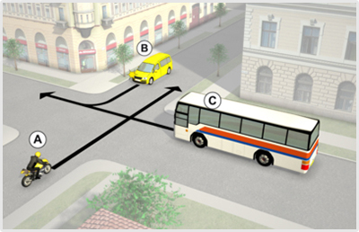
- 904. Hányadikként haladhat át az útkereszteződésben a ’C’ jelű jármű? #716102
- Másodikként.
- Utolsóként.
- Elsőként.
- 905. Az ábrán látható útkereszteződésben melyik jármű haladhat tovább elsőként? #716103
- A ’B’ jelű.
- A ’C’ jelű.
- Az ’A’ jelű.
- 906. Az ábrán látható útkereszteződésben melyik a helyes áthaladási sorrend? #716104
- ’B’ - ’C’ - ’A’.
- ’B’ - ’A’ - ’C’.
- ’C’ - ’B’ - ’A’.
- ’A’ - ’B’ - ’C’.
- 907. Hányadikként haladhat át az útkereszteződésben a kormánykerékkel jelzett járművel? #716127
- Másodikként.
- Utolsóként.
- Elsőként.
- 908. Ön járművezetőként az alábbi forgalmi helyzetet látja. Melyik jármű haladhat tovább elsőként? #716129
- A ’B’ jelű.
- Ön, a kormánykerékkel jelzett járművel.
- Az ’A’ jelű.
- 909. Ön járművezetőként az alábbi forgalmi helyzetet látja. Kell-e elsőbbséget adnia ebben a forgalmi helyzetben? #716131
- Igen, de csak a ’B’ jelű jármű részére.
- Nem.
- Igen, mindkét jármű részére.
- 910. Ön járművezetőként az alábbi forgalmi helyzetet látja. Határozza meg a helyes áthaladási sorrendet! #716133
- ’B’ - ’Ön’ - ’A’.
- ’B’ - ’A’ - ’Ön’.
- ’Ön’ - ’B’ - ’A’.
- ’A’ - ’B’ - ’Ön’.
- 911. Az ábrán látható útkereszteződésben melyik jármű haladhat tovább elsőként? #716281
- Az ’A’ jelű.
- A ’C’ jelű.
- A ’B’ jelű.

- 912. Az ábrán látható útkereszteződésben melyik jármű haladhat tovább elsőként? #722188
- A ’B’ jelű.
- A ’C’ jelű.
- Az ’A’ jelű.
- 913. Az ábrán látható útkereszteződésben melyik jármű haladhat tovább elsőként? #722195
- Ön, a kormánykerékkel jelzett járművel.
- A ’C’ jelű.
- Az ’A’ jelű.
- 914. A ’B’ jelű járművet vezetve elsőként haladhat át ebben az útkereszteződésben? #722987
- Igen.
- Nem.
- 915. Ön a ’B’ jelű járművet vezeti. Kell-e elsőbbséget adnia ebben a forgalmi helyzetben? #722988
- Nem.
- Igen.

- 916. Ön a kormánykerékkel jelzett járművet vezetve elsőként haladhat át ebben az útkereszteződésben? #722994
- Igen.
- Nem.
- 917. Ön a kormánykerékkel jelzett járművet vezeti. Kell-e elsőbbséget adnia ebben a forgalmi helyzetben? #722995
- Nem.
- Igen.
Jelzőlámpás-, jelzőtáblás kereszteződés (forg. h.) (1 db., 3 pont)
- 918. Ön az ’A’ jelű autóbuszt vezeti. Köteles-e az adott helyen irányjelzőjét használni? #703885
- Igen, jobbra jelezve, mivel bekanyarodik egy másik útra.
- Nem, mert a jobb szélső sávból másfelé nem haladhat.
- Nem, mert a többi jármű nem keresztezheti az útját.
- 919. Ön az ’A’ jelű autóbuszt vezeti. Melyik irányban folytathatja tovább az útját? #703886
- Csak jobbra.
- Amennyiben a belső sávban nem érkezik jármű, egyenesen is, és jobbra is.
- Mivel zöld fényjelzés irányítja a forgalmat, ezért a tábláktól függetlenül bármerre.
- 920. Az ’A’ jelű autóbusszal jobbra kanyarodva köteles-e elsőbbséget adni a gyalogosok részére? #703887
- Igen, de csak azon gyalogosok részére, akik azon az úton lévő kijelölt gyalogos-átkelőhelyen haladnak át, amelyik útra kanyarodni fog.
- Igen, a képen látható mindkét kijelölt gyalogos-átkelőhelyen érkező gyalogosok számára egyaránt.
- Nem, senkinek, mivel az autóbusz zöld fényjelzésre kezdi meg a kanyarodását.
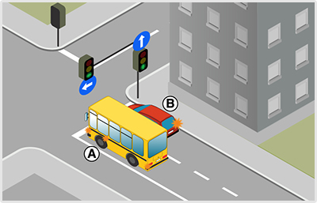
- 921. Ön az ’A’ jelű autóbuszt vezeti. Milyen irányban folytathatja az útját? #703934
- Csak balra.
- Csak egyenesen.
- Egyenesen is és balra is.
- 922. Ön az ’A’ jelű autóbuszt vezeti. Köteles-e az adott helyen az irányjelzőjét használni? #703935
- Igen, balra, mivel bekanyarodik egy másik útra.
- Nem, mert a bal oldali forgalmi sávból másfelé nem mehet.
- 923. A képen látható útkereszteződésben melyik jármű kanyarodhat jobbra? #703936
- Egyik sem.
- Csak a ’B’ jelű.
- Mindkettő.

- 924. Az ábrán látható útkereszteződésben melyik a helyes áthaladási sorrend? #704268
- ’A’ - ’B’ - ’C’.
- ’B’ - ’A’ - ’C’.
- ’C’ - ’B’ - ’A’.
- ’A’ - ’C’ - ’B’.
- ’B’ - ’C’ - ’A’.
- 925. Az ábrán látható útkereszteződésben melyik a helyes áthaladási sorrend? #704271
- ’A’ - ’B’ - ’C’.
- ’B’ - ’A’ - ’C’.
- ’C’ - ’B’ - ’A’.
- ’A’ - ’C’ - ’B’.
- ’B’ - ’C’ - ’A’.
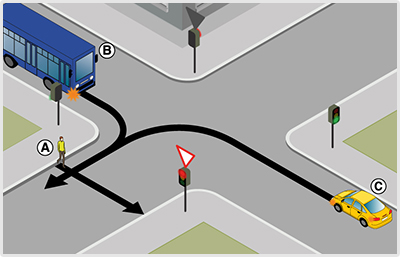
- 926. Az ábrán látható útkereszteződésben melyik a helyes áthaladási sorrend? #704272
- ’A’ - ’B’ - ’C’.
- ’B’ - ’A’ - ’C’.
- ’C’ - ’B’ - ’A’.
- ’A’ - ’C’ - ’B’.
- ’B’ - ’C’ - ’A’.

- 927. Az ábrán látható útkereszteződésben melyik a helyes áthaladási sorrend? #704275
- ’A’ - ’B’ - ’C’.
- ’B’ - ’A’ - ’C’.
- ’C’ - ’B’ - ’A’.
- ’A’ - ’C’ - ’B’.
- ’B’ - ’C’ - ’A’.
- 928. Az ábrán látható útkereszteződésben melyik a helyes áthaladási sorrend? #704278
- ’A’ - ’B’ - ’C’.
- ’B’ - ’A’ - ’C’.
- ’C’ - ’B’ - ’A’.
- ’A’ - ’C’ - ’B’.
- ’B’ - ’C’ - ’A’.
- 929. Az ábrán látható útkereszteződésben melyik a helyes áthaladási sorrend? #704281
- ’A’ - ’B’ - ’C’.
- ’B’ - ’A’ - ’C’.
- ’C’ - ’B’ - ’A’.
- ’A’ - ’C’ - ’B’.
- ’B’ - ’C’ - ’A’.

- 930. Az ábrán látható útkereszteződésben melyik a helyes áthaladási sorrend? #706919
- ’A’ - ’B’ - ’C’.
- ’B’ - ’A’ - ’C’.
- ’C’ - ’B’ - ’A’.
- ’A’ - ’C’ - ’B’.
- ’B’ - ’C’ - ’A’.

- 931. Ön a kormánykerékkel jelzett járművet vezeti. Köteles-e az adott helyen irányjelzőjét használni? #707018
- Igen, jobbra jelezve, mivel bekanyarodik egy másik útra.
- Nem, mert a jobb szélső sávból másfelé nem haladhat.
- Nem, mert a többi jármű nem keresztezheti az útját.
- 932. Ön a kormánykerékkel jelzett járművet vezeti. Melyik irányban folytathatja tovább az útját? #707020
- Csak jobbra.
- Amennyiben a belső sávban nem érkezik jármű, egyenesen is, és jobbra is.
- Mivel zöld fényjelzés irányítja a forgalmat, ezért a tábláktól függetlenül bármerre.
- 933. Ön a kormánykerékkel jelzett járművel jobbra kanyarodva köteles-e elsőbbséget adni a gyalogosok részére? #707022
- Igen, de csak azon gyalogosok részére, akik azon az úton lévő kijelölt gyalogos-átkelőhelyen haladnak át, amelyik útra kanyarodni fog.
- Igen, a képen látható mindkét kijelölt gyalogos-átkelőhelyen érkező gyalogosok számára egyaránt.
- Nem, senkinek, mivel a gépkocsi zöld fényjelzésre kezdi meg a kanyarodását.

- 934. Ön az ’A’ jelű autóbuszt vezeti. Köteles-e az adott helyen irányjelzőjét használni? #707023
- Igen, jobbra jelezve, mivel bekanyarodik egy másik útra.
- Nem, mert a jobb szélső sávból másfelé nem haladhat.
- Nem, mert a többi jármű nem keresztezheti az útját.
- 935. Ön az ’A’ jelű autóbuszt vezeti. Melyik irányban folytathatja tovább az útját? #707024
- Csak jobbra.
- Amennyiben a belső sávban nem érkezik jármű, egyenesen is, és jobbra is.
- Mivel zöld fényjelzés irányítja a forgalmat, ezért a tábláktól függetlenül bármerre.
- 936. Ön a kormánykerékkel jelzett járművet vezeti. Milyen irányban folytathatja az útját? #707042
- Csak balra.
- Csak egyenesen.
- Egyenesen is és balra is.
- 937. Ön a kormánykerékkel jelzett járművet vezeti. Köteles-e az adott helyen az irányjelzőjét használni? #707044
- Igen, balra, mivel bekanyarodik egy másik útra.
- Nem, mert a bal oldali forgalmi sávból másfelé nem mehet.
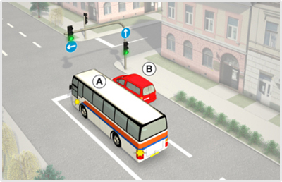
- 938. Ön az ’A’ jelű autóbuszt vezeti. Milyen irányban folytathatja az útját? #707046
- Csak balra.
- Csak egyenesen.
- Egyenesen is és balra is.
- 939. Ön az ’A’ jelű autóbuszt vezeti. Köteles-e az adott helyen az irányjelzőjét használni? #707047
- Igen, balra, mivel bekanyarodik egy másik útra.
- Nem, mert a bal oldali forgalmi sávból másfelé nem mehet.
- 940. A képen látható útkereszteződésben melyik jármű kanyarodhat jobbra? #707048
- Egyik sem.
- Csak a ’B’ jelű.
- Mindkettő.
- 941. Az ’A’ jelű autóbusszal jobbra kanyarodva köteles-e elsőbbséget adni a gyalogosok részére? #707069
- Igen, de csak azon gyalogosok részére, akik azon az úton lévő kijelölt gyalogos-átkelőhelyen haladnak át, amelyik útra kanyarodni fog.
- Igen, a képen látható mindkét kijelölt gyalogos-átkelőhelyen érkező gyalogosok számára egyaránt.
- Nem, senkinek, mivel az autóbusz zöld fényjelzésre kezdi meg a kanyarodását.

- 942. Ön a kormánykerékkel jelzett járművet vezeti. Kinek köteles a képen látható helyen elsőbbséget adni? #707112
- Az ’A’ jelű személygépkocsi és a ’C’ jelű kerékpáros részére egyaránt.
- Csak a kerékpárúton érkező ’C’ jelű kerékpáros részére.
- Csak az úttesten érkező ’A’ jelű személygépkocsi részére.
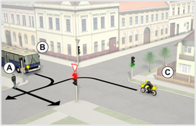
- 943. Az ábrán látható útkereszteződésben melyik a helyes áthaladási sorrend? #707352
- ’A’ - ’B’ - ’C’.
- ’B’ - ’A’ - ’C’.
- ’C’ - ’B’ - ’A’.
- ’A’ - ’C’ - ’B’.
- ’B’ - ’C’ - ’A’.
- 944. Az ábrán látható útkereszteződésben melyik a helyes áthaladási sorrend? #707358
- ’A’ - ’B’ - ’C’.
- ’B’ - ’A’ - ’C’.
- ’C’ - ’B’ - ’A’.
- ’A’ - ’C’ - ’B’.
- ’B’ - ’C’ - ’A’.
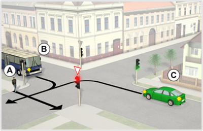
- 945. Az ábrán látható útkereszteződésben melyik a helyes áthaladási sorrend? #707360
- ’A’ - ’B’ - ’C’.
- ’B’ - ’A’ - ’C’.
- ’C’ - ’B’ - ’A’.
- ’A’ - ’C’ - ’B’.
- ’B’ - ’C’ - ’A’.
- 946. Hányadikként haladhat át az útkereszteződésben a kormánykerékkel jelzett járművel? #707363
- Utolsóként.
- Elsőként.
- Másodikként.
- 947. Ön a kormáykerékkel jelzett járművet vezeti. Kell-e elsőbbséget adnia ebben a forgalmi helyzetben? #707365
- Igen, az ’A’ jelű gyalogos és a ’B’ jelű jármű részére egyaránt.
- Igen, de csak a ’B’ jelű jármű részére.
- Nem.
- Igen, de csak az ’A’ jelű gyalogos részére.
- 948. Az ábrán látható útkereszteződésben melyik a helyes áthaladási sorrend? #707366
- ’A’ - ’B’ - ’C’.
- ’B’ - ’A’ - ’C’.
- ’C’ - ’B’ - ’A’.
- ’A’ - ’C’ - ’B’.
- ’B’ - ’C’ - ’A’.
- 949. Ön járművezetőként az alábbi forgalmi helyzetet látja. Határozza meg a helyes áthaladási sorrendet! #707367
- ’A’ - ’B’ - ’Ön’.
- ’B’ - ’A’ - ’Ön’.
- ’Ön’ - ’B’ - ’A’.
- ’A’ - ’Ön’ - ’B’.
- ’B’ - ’Ön’ - ’A’.
- 950. Az ábrán látható útkereszteződésben melyik a helyes áthaladási sorrend? #707465
- ’A’ - ’B’ - ’C’.
- ’B’ - ’A’ - ’C’.
- ’C’ - ’B’ - ’A’.
- ’A’ - ’C’ - ’B’.
- ’B’ - ’C’ - ’A’.
- 951. Elindulhatnak-e a képen látható járművek, amíg a jobb oldali fényjelző készülék pirosat jelez? #714769
- Az ’A’ és ’B’ jelű járművek igen, de a ’C’ jelű nem.
- Csak az ’A’ jelű indulhat el balra a többiek nem.
- Mivel a jobb oldali piros lámpa minden közlekedőre vonatkozik, ezért amíg az nem vált zöldre senki nem indulhat tovább.
- 952. Ön a ’B’ jelű autóbuszt vezeti. Kinek köteles a képen látható helyen elsőbbséget adni? #715133
- Az ’A’ jelű személygépkocsi és a ’C’ jelű kerékpáros részére egyaránt.
- Csak a ’C’ jelű kerékpáros részére.
- Csak az ’A’ jelű személygépkocsi részére.
- 953. Hogyan értelmezi ezt a forgalmi szituációt? #715134
- A ’B’ jelű jármű mind az ’A’ jelű személygépkocsi, mind a ’C’ jelű kerékpáros részére köteles elsőbbséget adni.
- A ’B’ jelű jármű csak az ’A’ jelű személygépkocsi részére köteles elsőbbséget adni.
- A ’B’ jelű jármű csak a ’C’ jelű kerékpáros részére köteles elsőbbséget adni, míg az ’A’ jelű személygépkocsival szemben elsőbbsége van.
- 954. Hányadikként haladhat át az útkereszteződésben a ’C’ jelű jármű? #715238
- Elsőként.
- Utolsóként.
- Másodikként.
- 955. Ön a ’C’ jelű járművet vezeti. Kell-e elsőbbséget adnia ebben a forgalmi helyzetben? #715239
- Nem.
- Igen, de csak a ’B’ jelű jármű részére.
- 956. A ’C’ jelű járművet vezetve áthaladhat-e az útkereszteződésben az ’A’ jelű járművel egyszerre? #715240
- Igen.
- Nem.
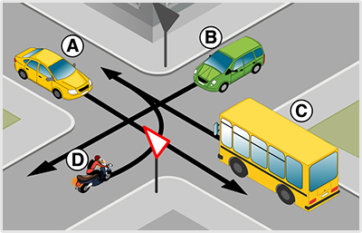
- 957. A ’C’ jelű járművet vezetve áthaladhat-e az útkereszteződésben az ’A’ jelű gépkocsival egyszerre? #715263
- Igen.
- Nem.
- 958. Hányadikként haladhat át az útkereszteződésben a ’C’ jelű jármű? #715396
- Utolsóként.
- Elsőként.
- Másodikként.
- 959. Ön a ’C’ jelű járművet vezeti. Kell-e elsőbbséget adnia ebben a forgalmi helyzetben? #715397
- Igen, az ’A’ jelű gyalogos és a ’B’ jelű jármű részére egyaránt.
- Igen, de csak a ’B’ jelű jármű részére.
- Nem.
- Igen, de csak az ’A’ jelű gyalogos részére.
- 960. Az ábrán látható útkereszteződésben melyik a helyes áthaladási sorrend? #715398
- ’A’ - ’B’ - ’C’.
- ’B’ - ’A’ - ’C’.
- ’C’ - ’B’ - ’A’.
- ’A’ - ’C’ - ’B’.
- ’B’ - ’C’ - ’A’.
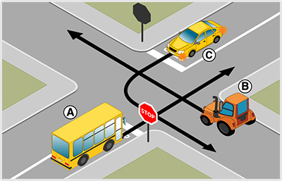
- 961. Hányadikként haladhat át az útkereszteződésben az ’A’ jelű jármű? #715415
- Másodikként.
- Utolsóként.
- Elsőként.
- 962. Az ábrán látható útkereszteződésben melyik jármű haladhat tovább elsőként? #715416
- A ’B’ jelű.
- A ’C’ jelű.
- Az ’A’ jelű.
- 963. Ön az ’A’ jelű járművet vezeti. Kell-e elsőbbséget adnia ebben a forgalmi helyzetben? #715417
- Igen, de csak a ’B’ jelű jármű részére.
- Igen, a ’B’ és ’C’ jelű járművek részére egyaránt.
- Nem.
- Igen, de csak a ’C’ jelű jármű részére.
- 964. Az ábrán látható útkereszteződésben melyik a helyes áthaladási sorrend? #715418
- ’B’ - ’A’ - ’C’.
- ’A’ - ’B’ - ’C’.
- ’B’ - ’C’ - ’A’.
- ’A’ - ’C’ - ’B’.
- 965. Az ábrán látható útkereszteződésben melyik jármű haladhat tovább elsőként? #715730
- A ’B’ jelű.
- Ön, a kormánykerékkel jelzett járművel.
- Az ’A’ jelű.
- 966. Ön járművezetőként az alábbi forgalmi helyzetet látja. Határozza meg a helyes áthaladási sorrendet! #715733
- ’B’ - ’Ön’ - ’C’.
- ’Ön’ - ’B’ - ’C’.
- ’B’ - ’C’ - ’Ön’.
- ’Ön’ - ’C’ - ’B’.
- 967. Ön a kormánykerékkel jelzett járművet vezeti. Kell-e elsőbbséget adnia ebben a forgalmi helyzetben? #715738
- Igen, de csak a ’B’ jelű jármű részére.
- Igen, a ’B’ és ’C’ jelű járművek részére egyaránt.
- Nem.
- Igen, de csak a ’C’ jelű jármű részére.
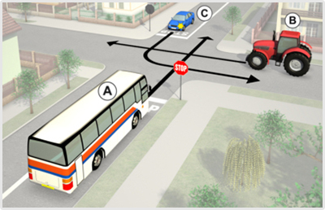
- 968. Hányadikként haladhat át az útkereszteződésben az ’A’ jelű jármű? #715740
- Másodikként.
- Utolsóként.
- Elsőként.
- 969. Hányadikként haladhat át az útkereszteződésben a kormánykerékkel jelzett járművel? #715741
- Másodikként.
- Utolsóként.
- Elsőként.
- 970. Az ábrán látható útkereszteződésben melyik jármű haladhat tovább elsőként? #715742
- A ’B’ jelű.
- A ’C’ jelű.
- Az ’A’ jelű.
- 971. Ön az ’A’ jelű járművet vezeti. Kell-e elsőbbséget adnia ebben a forgalmi helyzetben? #715743
- Igen, de csak a ’B’ jelű jármű részére.
- Igen, a ’B’ és ’C’ jelű járművek részére egyaránt.
- Nem.
- Igen, de csak a ’C’ jelű jármű részére.
- 972. Az ábrán látható útkereszteződésben melyik a helyes áthaladási sorrend? #715744
- ’B’ - ’A’ - ’C’.
- ’A’ - ’B’ - ’C’.
- ’B’ - ’C’ - ’A’.
- ’A’ - ’C’ - ’B’.
- 973. Ön a ’B’ jelű autóbuszt vezeti. Kinek köteles a képen látható helyen elsőbbséget adni? #716040
- Az ’A’ jelű személygépkocsi és a ’C’ jelű kerékpáros részére egyaránt.
- Csak a ’C’ jelű kerékpáros részére.
- Csak az ’A’ jelű személygépkocsi részére.
- 974. Ön a kormánykerékkel jelzett járművet vezeti. Kinek köteles a képen látható forgalmi helyzetben elsőbbséget adni? #716041
- Az ’A’ jelű személygépkocsi és a ’C’ jelű kerékpáros részére egyaránt.
- Csak a ’C’ jelű kerékpáros részére.
- Csak az ’A’ jelű személygépkocsi részére.
- 975. Hogyan értelmezi ezt a forgalmi szituációt? #716042
- A ’B’ jelű jármű mind az ’A’ jelű személygépkocsi, mind a ’C’ jelű kerékpáros részére köteles elsőbbséget adni.
- A ’B’ jelű jármű csak az ’A’ jelű személygépkocsi részére köteles elsőbbséget adni.
- A ’B’ jelű jármű csak a ’C’ jelű kerékpáros részére köteles elsőbbséget adni, míg az ’A’ jelű személygépkocsival szemben elsőbbsége van.
- 976. Ön a kormánykerékkel jelzett járművet vezeti. Hogyan értelmezi ezt a forgalmi szituációt? #716043
- Mind az ’A’ jelű személygépkocsi, mind a ’C’ jelű kerékpáros részére elsőbbséget kell adni.
- Csak az ’A’ jelű személygépkocsi részére kell elsőbbséget adni.
- Csak a ’C’ jelű kerékpáros részére kell elsőbbséget adni.

- 977. Hányadikként haladhat át az útkereszteződésben a kormánykerékkel jelzett járművel? #716172
- Elsőként.
- Utolsóként.
- Másodikként.
- 978. Ön a kormánykerékkel jelzett járművet vezeti. Kell-e elsőbbséget adnia ebben a forgalmi helyzetben? #716174
- Nem.
- Igen, de csak a ’B’ jelű jármű részére.
- 979. A kormánykerékkel jelzett járművet vezetve áthaladhat-e az útkereszteződésben az ’A’ jelű járművel egyszerre? #716176
- Igen.
- Nem.
- 980. Hányadikként haladhat át az útkereszteződésben a ’C’ jelű jármű? #716180
- Elsőként.
- Utolsóként.
- Másodikként.
- 981. Ön a ’C’ jelű járművet vezeti. Kell-e elsőbbséget adnia ebben a forgalmi helyzetben? #716181
- Nem.
- Igen, de csak a ’B’ jelű jármű részére.
- 982. A ’C’ jelű járművet vezetve áthaladhat-e az útkereszteződésben az ’A’ jelű járművel egyszerre? #716182
- Igen.
- Nem.
- 983. A kormánykerékkel jelzett járművet vezetve áthaladhat-e az útkereszteződésben az ’A’ jelű gépkocsival egyszerre? #716203
- Igen.
- Nem.
- 984. Ön a kormánykerékkel jelzett járművet vezeti. Kell-e elsőbbséget adnia ebben a forgalmi helyzetben? #716205
- Nem.
- Igen, de csak a ’D’ jelű jármű részére.
- Igen, a ’B’ és a ’D’ jelű jármű részére egyaránt.

- 985. A ’C’ jelű járművet vezetve áthaladhat-e az útkereszteződésben az ’A’ jelű gépkocsival egyszerre? #716210
- Igen.
- Nem.

- 986. Hányadikként haladhat át a kormánykerékkel jelzett járművel az ábrázolt útkereszteződésben? #716225
- Másodikként.
- Utolsóként.
- Elsőként.
- 987. Az ábrán látható útkereszteződésben melyik jármű haladhat tovább elsőként? #716227
- A ’B’ jelű.
- Ön, a kormánykerékkel jelzett járművel.
- Az ’A’ jelű.
- 988. Ön a kormánykerékkel jelzett járművet vezeti. Kell-e elsőbbséget adnia ebben a forgalmi helyzetben? #716229
- Igen, de csak a ’B’ jelű jármű részére.
- Igen, a ’B’ és az ’A’ jelű jármű részére egyaránt.
- Nem.
- Igen, de csak az ’A’ jelű jármű részére.
- 989. Ön járművezetőként az alábbi forgalmi helyzetet látja. Határozza meg a helyes áthaladási sorrendet! #716231
- ’B’ - ’Ön’ - ’A’.
- ’B’ - ’A’ - ’Ön’.
- ’Ön’ - ’B’ - ’A’.
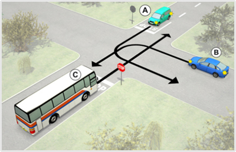
- 990. Hányadikként haladhat át a ’C’ jelű jármű az útkereszteződésben? #716236
- Másodikként.
- Utolsóként.
- Elsőként.
- 991. Az ábrán látható útkereszteződésben melyik jármű haladhat tovább elsőként? #716237
- A ’B’ jelű.
- A ’C’ jelű.
- Az ’A’ jelű.
- 992. Ön a ’C’ jelű járművet vezeti. Kell-e elsőbbséget adnia ebben a forgalmi helyzetben? #716238
- Igen, de csak a ’B’ jelű jármű részére.
- Igen, a ’B’ és az ’A’ jelű jármű részére egyaránt.
- Nem.
- Igen, de csak az ’A’ jelű jármű részére.
- 993. Az ábrán látható útkereszteződésben melyik a helyes áthaladási sorrend? #716239
- ’B’ - ’C’ - ’A’.
- ’B’ - ’A’ - ’C’.
- ’C’ - ’B’ - ’A’.
- 994. Ön a ’B’ jelű autóbusszal az útkereszteződésben balra kíván bekanyarodni. Kinek a részére kell elsőbbséget adnia? #722311
- Csak az ’A’ jelű személygépkocsi részére.
- Csak az átkelésre váró ’C’ jelű gyalogos részére.
- Mind az ’A’ jelű személygépkocsi részére, mind pedig az átkelésre váró ’C’ jelű gyalogos részére.
- 995. Ön a ’B’ jelű autóbuszt vezeti. Köteles-e irányjelzőt használni, ha az útkereszteződésben balra kíván bekanyarodni? #722312
- Igen, minden esetben.
- Nem, hiszen zöld jelzésnél nem kell irányjelzőt használni.
- Nem, mert az ’A’ jelű személygépkocsi sem használ irányjelzőt.

- 996. Ön a kormánykerékkel jelzett járművel az útkereszteződésben balra kíván bekanyarodni. Kinek a részére kell elsőbbséget adnia? #722318
- Csak az ’A’ jelű személygépkocsi részére.
- Csak az átkelésre váró ’C’ jelű gyalogos részére.
- Mind az ’A’ jelű személygépkocsi részére, mind pedig az átkelésre váró ’C’ jelű gyalogos részére.
- 997. Ön a kormánykerékkel jelzett járművet vezeti. Köteles-e irányjelzőt használni, ha az útkereszteződésben balra kíván bekanyarodni? #722319
- Igen, minden esetben.
- Nem, hiszen zöld jelzésnél nem kell irányjelzőt használni.
- Nem, mert az ’A’ jelű személygépkocsi sem használ irányjelzőt.
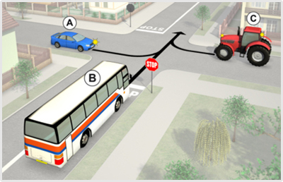
- 998. Az ábrán látható útkereszteződésben melyik a helyes áthaladási sorrend? #722558
- ’C’ - ’A’ - ’B’.
- ’B’ - ’A’ - ’C’.
- ’C’ - ’B’ - ’A’.
- ’A’ - ’B’ - ’C’.
- 999. Az ábrán látható útkereszteződésben melyik jármű haladhat tovább elsőként? #722559
- A ’C’ jelű.
- Az ’A’ jelű.
- A ’B’ jelű.
- 1000. Hányadikként haladhat át az útkereszteződésben a ’B’ jelű jármű? #722561
- Utolsóként.
- Elsőként.
- Másodikként.

- 1001. Ön a kormánykerékkel jelzett járművet vezeti. Melyik a helyes áthaladási sorrend az ábrázolt útkereszteződésben? #722569
- ’C’ - ’A’ - ’Ön’.
- ’Ön’ - ’A’ - ’C’.
- ’C’ - ’Ön’ - ’A’.
- ’A’ - ’Ön’ - ’C’.
- 1002. Ön a kormánykerékkel jelzett járművet vezeti. Melyik jármű haladhat tovább elsőként az ábrázolt útkereszteződésben? #722570
- A ’C’ jelű.
- Az ’A’ jelű.
- Ön, a kormánykerékkel jelzett járművel.
- 1003. Ön a kormánykerékkel jelzett járművet vezeti. Kell-e elsőbbséget adnia ebben a forgalmi helyzetben? #722571
- Igen, az ’A’ és ’C’ jelű jármű részére egyaránt.
- Igen, de csak a ’C’ jelű jármű részére.
- Nem.
- 1004. Ön a kormánykerékkel jelzett járművet vezeti. Hányadikként haladhat át az ábrázolt útkereszteződésben? #722572
- Utolsóként.
- Elsőként.
- Másodikként.
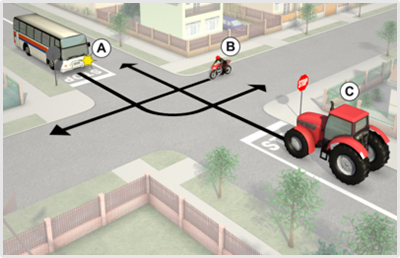
- 1005. Az ábrán látható útkereszteződésben melyik a helyes áthaladási sorrend? #722630
- ’B’ - ’C’ - ’A’.
- ’C’ - ’A’ - ’B’.
- ’C’ - ’B’ - ’A’.
- 1006. Az ábrán látható útkereszteződésben melyik jármű haladhat tovább elsőként? #722631
- A ’B’ jelű.
- A ’C’ jelű.
- Az ’A’ jelű.
- 1007. Ön az ’A’ jelű járművet vezeti. Kell-e elsőbbséget adnia ebben a forgalmi helyzetben? #722632
- Igen, a ’B’ és ’C’ jelű jármű részére egyaránt.
- Igen, de csak a ’C’ jelű jármű részére.
- Nem.
- Igen, de csak a ’B’ jelű jármű részére.
- 1008. Hányadikként haladhat át az útkereszteződésben az ’A’ jelű jármű? #722633
- Utolsóként.
- Elsőként.
- Másodikként.

- 1009. Ön a kormánykerékkel jelzett járművet vezeti. Az alábbiak közül melyik a helyes áthaladási sorrend az ábrán látható útkereszteződésben? #722641
- ’B’ - ’C’ - ’Ön’.
- ’C’ - ’Ön’ - ’B’.
- ’C’ - ’B’ - ’Ön’.
- 1010. Ön a kormánykerékkel jelzett járművet vezeti. Melyik jármű haladhat tovább elsőként az ábrán látható útkereszteződésben? #722642
- A ’B’ jelű.
- A ’C’ jelű.
- Ön, a kormánykerékkel jelzett járművel.
- 1011. Ön a kormánykerékkel jelzett járművet vezeti. Kell-e elsőbbséget adnia ebben a forgalmi helyzetben? #722643
- Igen, a ’B’ és ’C’ jelű jármű részére egyaránt.
- Igen, de csak a ’C’ jelű jármű részére.
- Nem.
- Igen, de csak a ’B’ jelű jármű részére.
- 1012. Ön a kormánykerékkel jelzett járművet vezeti. Hányadikként haladhat át az ábrázolt útkereszteződésben? #722644
- Utolsóként.
- Elsőként.
- Másodikként.

- 1013. Melyik jármű haladhat tovább egyenesen az ábrán látható útkereszteződésben? #722767
- Csak a ’C’ és a ’B’ jelű.
- Csak a ’B’ jelű.
- Mindhárom jármű.
- 1014. Ön a kormánykerékkel jelzett járművet vezeti. Melyik jármű haladhat tovább egyenesen az ábrán látható útkereszteződésben? #722772
- Csak ’Ön’ és a ’B’ jelű.
- Csak a ’B’ jelű.
- Mindhárom jármű.
Villamos, kanyarodó főútvonal (forg. h.) (1 db., 3 pont)
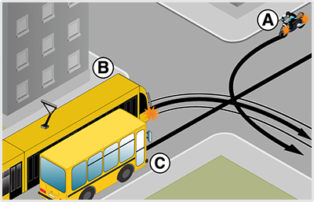
- 1015. Hányadikként haladhat át az útkereszteződésben a ’C’ jelű jármű? #704075
- Elsőként.
- Másodikként.
- Utolsóként.
- 1016. Az ábrán látható útkereszteződésben melyik jármű haladhat tovább elsőként? #704076
- A ’C’ jelű.
- Az ’A’ jelű.
- A ’B’ jelű.
- 1017. Ön a ’C’ jelű járművet vezeti. Kell-e elsőbbséget adnia ebben a forgalmi helyzetben? #704077
- Nem.
- Igen, de csak az ’A’ jelű jármű részére.
- Igen, az ’A’ és ’B’ jelű jármű részére egyaránt.
- 1018. Az ábrán látható útkereszteződésben melyik a helyes áthaladási sorrend? #704078
- ’C’ - ’B’ - ’A’.
- ’B’ - ’C’ - ’A’.
- ’B’ - ’A’ - ’C’.
- ’A’ - ’C’ - ’B’.
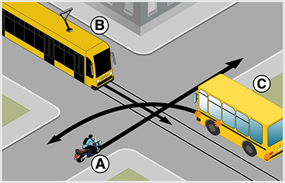
- 1019. Hányadikként haladhat át az útkereszteződésben a ’C’ jelű jármű? #704095
- Másodikként.
- Utolsóként.
- Elsőként.
- 1020. Az ábrán látható útkereszteződésben melyik jármű haladhat tovább elsőként? #704096
- A ’B’ jelű.
- Az ’A’ jelű.
- A ’C’ jelű.
- 1021. Ön az ’C’ jelű járművet vezeti. Kell-e elsőbbséget adnia ebben a forgalmi helyzetben? #704097
- Igen, de csak a ’B’ jelű jármű részére.
- Igen, az ’A’ és ’B’ jelű jármű részére egyaránt.
- Nem.
- Igen, de csak az ’A’ jelű jármű részére.
- 1022. Az ábrán látható útkereszteződésben melyik a helyes áthaladási sorrend? #704098
- ’B’ - ’C’ - ’A’.
- ’B’ - ’A’ - ’C’.
- ’C’ - ’B’ - ’A’.
- ’C’ - ’A’ - ’B’.
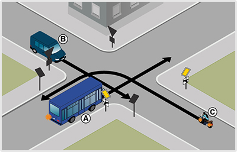
- 1023. Melyik jármű haladhat tovább elsőként az ábrán látható útkereszteződésben? #704221
- A ’C’ jelű.
- Az ’A’ jelű.
- A ’B’ jelű.
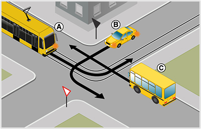
- 1024. Hányadikként haladhat át az útkereszteződésben a ’C’ jelű jármű? #704250
- Elsőként.
- Utolsóként.
- Másodikként.
- 1025. Az ábrán látható útkereszteződésben melyik jármű haladhat tovább elsőként? #704251
- A ’C’ jelű.
- Az ’A’ jelű.
- A ’B’ jelű.

- 1026. Hányadikként haladhat át az útkereszteződésben a kormánykerékkel jelzett járművel? #707209
- Elsőként.
- Másodikként.
- Utolsóként.
- 1027. Az ábrán látható útkereszteződésben melyik jármű haladhat tovább elsőként? #707211
- Az Ön által vezetett jármű.
- Az ’A’ jelű.
- A ’B’ jelű.
- 1028. Ön a kormánykerékkel jelzett járművet vezeti. Kell-e elsőbbséget adnia ebben a forgalmi helyzetben? #707213
- Nem.
- Igen, de csak az ’A’ jelű jármű részére.
- Igen, az ’A’ és ’B’ jelű jármű részére egyaránt.
- 1029. Ön járművezetőként az alábbi forgalmi helyzetet látja. Határozza meg a helyes áthaladási sorrendet! #707215
- ’Ön’ - ’B’ - ’A’.
- ’B’ - ’Ön’ - ’A’.
- ’B’ - ’A’ - ’Ön’.
- ’A’ - ’Ön’ - ’B’.

- 1030. Hányadikként haladhat át az útkereszteződésben a ’C’ jelű jármű? #707216
- Elsőként.
- Másodikként.
- Utolsóként.
- 1031. Az ábrán látható útkereszteződésben melyik jármű haladhat tovább elsőként? #707217
- A ’C’ jelű.
- Az ’A’ jelű.
- A ’B’ jelű.
- 1032. Ön a ’C’ jelű járművet vezeti. Kell-e elsőbbséget adnia ebben a forgalmi helyzetben? #707218
- Nem.
- Igen, de csak az ’A’ jelű jármű részére.
- Igen, az ’A’ és ’B’ jelű jármű részére egyaránt.
- 1033. Az ábrán látható útkereszteződésben melyik a helyes áthaladási sorrend? #707219
- ’C’ - ’B’ - ’A’.
- ’B’ - ’C’ - ’A’.
- ’B’ - ’A’ - ’C’.
- ’A’ - ’C’ - ’B’.
- 1034. Hányadikként haladhat át az útkereszteződésben a kormánykerékkel jelzett járművel? #707233
- Másodikként.
- Utolsóként.
- Elsőként.
- 1035. Az ábrán látható útkereszteződésben melyik jármű haladhat tovább elsőként? #707235
- A ’B’ jelű.
- Az ’A’ jelű.
- Az Ön által vezetett jármű.
- 1036. Ön járművezetőként az alábbi forgalmi helyzetet látja. Határozza meg a helyes áthaladási sorrendet! #707237
- ’B’ - ’Ön’ - ’A’.
- ’B’ - ’A’ - ’Ön’.
- ’Ön’ - ’B’ - ’A’.
- ’Ön’ - ’A’ - ’B’.
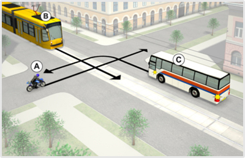
- 1037. Hányadikként haladhat át az útkereszteződésben a ’C’ jelű jármű? #707238
- Másodikként.
- Utolsóként.
- Elsőként.
- 1038. Az ábrán látható útkereszteződésben melyik jármű haladhat tovább elsőként? #707239
- A ’B’ jelű.
- Az ’A’ jelű.
- A ’C’ jelű.
- 1039. Ön az ’C’ jelű járművet vezeti. Kell-e elsőbbséget adnia ebben a forgalmi helyzetben? #707240
- Igen, de csak a ’B’ jelű jármű részére.
- Igen, az ’A’ és ’B’ jelű jármű részére egyaránt.
- Nem.
- Igen, de csak az ’A’ jelű jármű részére.
- 1040. Az ábrán látható útkereszteződésben melyik a helyes áthaladási sorrend? #707241
- ’B’ - ’C’ - ’A’.
- ’B’ - ’A’ - ’C’.
- ’C’ - ’B’ - ’A’.
- ’C’ - ’A’ - ’B’.
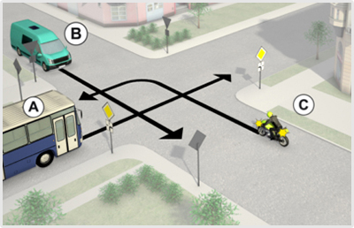
- 1041. Melyik jármű haladhat tovább elsőként az ábrán látható útkereszteződésben? #707320
- A ’C’ jelű.
- Az ’A’ jelű.
- A ’B’ jelű.
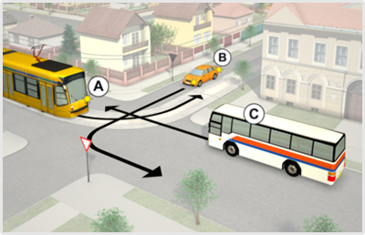
- 1042. Hányadikként haladhat át az útkereszteződésben a ’C’ jelű jármű? #707340
- Elsőként.
- Utolsóként.
- Másodikként.
- 1043. Az ábrán látható útkereszteződésben melyik jármű haladhat tovább elsőként? #707341
- A ’C’ jelű.
- Az ’A’ jelű.
- A ’B’ jelű.

- 1044. Hányadikként haladhat át az útkereszteződésben a ’C’ jelű jármű? #714781
- Utolsóként.
- Elsőként.
- Másodikként.

- 1045. Hányadikként haladhat át az útkereszteződésben a ’C’ jelű jármű? #715018
- Elsőként.
- Utolsóként.
- Másodikként.
- 1046. Az ábrán látható útkereszteződésben melyik jármű haladhat tovább elsőként? #715019
- A ’C’ jelű.
- Az ’A’ jelű.
- A ’B’ jelű.
- 1047. Ön a ’C’ jelű járművet vezeti. Kell-e elsőbbséget adnia ebben a forgalmi helyzetben? #715020
- Nem.
- Igen, de csak a ’B’ jelű jármű részére.
- Igen, de csak az ’A’ jelű jármű részére.
- Igen, az ’A’ és ’B’ jelű jármű részére egyaránt.
- 1048. Az ábrán látható útkereszteződésben melyik a helyes áthaladási sorrend? #715021
- ’C’ - ’A’ - ’B’.
- ’B’ - ’A’ - ’C’.
- ’C’ - ’B’ - ’A’.
- ’A’ - ’B’ - ’C’.
- ’B’ - ’C’ - ’A’.

- 1049. Hányadikként haladhat át az útkereszteződésben a ’C’ jelű jármű? #715220
- Utolsóként.
- Elsőként.
- Másodikként.
- 1050. Az ábrán látható útkereszteződésben melyik jármű haladhat tovább elsőként? #715221
- Az ’A’ jelű.
- A ’C’ jelű.
- A ’B’ jelű.
- 1051. Az ábrán látható útkereszteződésben melyik a helyes áthaladási sorrend? #715223
- ’A’ - ’B’ - ’C’.
- ’A’ - ’C’ - ’B’.
- ’C’ - ’B’ - ’A’.
- ’B’ - ’A’ - ’C’.
- 1052. Az alábbiak közül melyik a helyes áthaladási sorrend az ábrán látható útkereszteződésben? #715336
- ’C’ - ’A’ - ’B’.
- ’B’ - ’A’ - ’C’.
- ’C’ - ’B’ - ’A’.
- ’A’ - ’C’ - ’B’.
- ’B’ - ’C’ - ’A’.

- 1053. Melyik jármű haladhat tovább elsőként az ábrán látható útkereszteződésben? #715338
- A ’C’ jelű.
- Az ’A’ jelű.
- A ’B’ jelű.
- 1054. Az alábbiak közül melyik a helyes áthaladási sorrend az ábrán látható útkereszteződésben? #715340
- ’C’ - ’A’ - ’B’.
- ’B’ - ’A’ - ’C’.
- ’C’ - ’B’ - ’A’.
- ’B’ - ’C’ - ’A’.
- ’A’ - ’B’ - ’C’.

- 1055. Melyik jármű haladhat tovább elsőként az ábrán látható útkereszteződésben? #715342
- A ’C’ jelű.
- Az ’A’ jelű.
- A ’B’ jelű.
- 1056. Az alábbiak közül melyik a helyes áthaladási sorrend az ábrán látható útkereszteződésben? #715344
- ’C’ - ’A’ - ’B’.
- ’B’ - ’A’ - ’C’.
- ’C’ - ’B’ - ’A’.
- ’B’ - ’C’ - ’A’.
- ’A’ - ’B’ - ’C’.
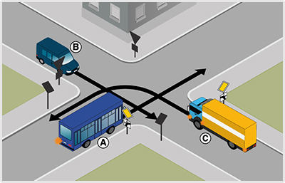
- 1057. Melyik jármű haladhat tovább elsőként az ábrán látható útkereszteződésben? #715346
- A ’C’ jelű.
- Az ’A’ jelű.
- A ’B’ jelű.
- 1058. Az alábbiak közül melyik a helyes áthaladási sorrend az ábrán látható útkereszteződésben? #715348
- ’C’ - ’A’ - ’B’.
- ’B’ - ’A’ - ’C’.
- ’C’ - ’B’ - ’A’.
- ’B’ - ’C’ - ’A’.
- ’A’ - ’B’ - ’C’.

- 1059. Hányadikként haladhat át az útkereszteződésben a ’C’ jelű jármű? #715349
- Elsőként.
- Utolsóként.
- Másodikként.
- 1060. Melyik jármű haladhat tovább elsőként az ábrán látható útkereszteződésben? #715350
- A ’C’ jelű.
- Az ’A’ jelű.
- A ’B’ jelű.
- 1061. Ön a ’C’ jelű járművet vezeti. Kell-e elsőbbséget adnia ebben a forgalmi helyzetben? #715351
- Nem.
- Igen, az ’A’ és ’B’ jelű jármű részére egyaránt.
- Igen, de csak az ’A’ jelű jármű részére.
- Igen, de csak a ’B’ jelű jármű részére.
- 1062. Az alábbiak közül melyik a helyes áthaladási sorrend az ábrán látható útkereszteződésben? #715352
- ’C’ - ’A’ - ’B’.
- ’B’ - ’A’ - ’C’.
- ’C’ - ’B’ - ’A’.
- ’B’ - ’C’ - ’A’.
- ’A’ - ’B’ - ’C’.
- 1063. Ön a ’C’ jelű járművet vezeti. Kell-e elsőbbséget adnia ebben a forgalmi helyzetben? #715361
- Nem.
- Igen, de csak az ’A’ jelű jármű részére.
- Igen, de csak a ’B’ jelű jármű részére.
- Igen, az ’A’ és ’B’ jelű jármű részére egyaránt.
- 1064. Az ábrán látható útkereszteződésben melyik a helyes áthaladási sorrend? #715362
- ’C’ - ’A’ - ’B’.
- ’B’ - ’A’ - ’C’.
- ’C’ - ’B’ - ’A’.
- ’A’ - ’B’ - ’C’.
- ’A’ - ’C’ - ’B’.
- 1065. Ön a ’C’ jelű járművet vezeti. Kell-e elsőbbséget adnia ebben a forgalmi helyzetben? #715373
- Nem.
- Igen, de csak az ’A’ jelű jármű részére.
- Igen, de csak a ’B’ jelű jármű részére.
- Igen, az ’A’ és ’B’ jelű jármű részére egyaránt.
- 1066. Melyik jármű haladhat tovább elsőként az ábrán látható útkereszteződésben? #715545
- A ’C’ jelű.
- Az ’A’ jelű.
- A ’B’ jelű.
- 1067. Az alábbiak közül melyik a helyes áthaladási sorrend az ábrán látható útkereszteződésben? #715547
- ’C’ - ’A’ - ’B’.
- ’B’ - ’A’ - ’C’.
- ’C’ - ’B’ - ’A’.
- ’B’ - ’C’ - ’A’.
- ’A’ - ’B’ - ’C’.

- 1068. Melyik jármű haladhat tovább elsőként az ábrán látható útkereszteződésben? #715617
- A ’C’ jelű.
- Az ’A’ jelű.
- A ’B’ jelű.
- 1069. Az alábbiak közül melyik a helyes áthaladási sorrend az ábrán látható útkereszteződésben? #715619
- ’C’ - ’A’ - ’B’.
- ’B’ - ’A’ - ’C’.
- ’C’ - ’B’ - ’A’.
- ’B’ - ’C’ - ’A’.
- ’A’ - ’B’ - ’C’.
- 1070. Hányadikként haladhat át az útkereszteződésben a kormánykerékkel jelzett járművel? #715641
- Elsőként.
- Utolsóként.
- Másodikként.
- 1071. Melyik jármű haladhat tovább elsőként az ábrán látható útkereszteződésben? #715643
- Ön, a kormánykerékkel jelzett járművel.
- Az ’A’ jelű.
- A ’B’ jelű.
- 1072. Ön járművezetőként az alábbi forgalmi helyzetet látja. Határozza meg a helyes áthaladási sorrendet! #715647
- ’Ön’ - ’A’ - ’B’.
- ’B’ - ’A’ - ’Ön’.
- ’Ön’ - ’B’ - ’A’.
- ’A’ - ’Ön’ - ’B’.
- ’B’ - ’Ön’ - ’A’.
- 1073. Ön a kormánykerékkel jelzett járművet vezeti. Kell-e elsőbbséget adnia ebben a forgalmi helyzetben? #715651
- Nem.
- Igen, az ’A’ és ’B’ jelű jármű részére egyaránt.
- Igen, de csak az ’A’ jelű jármű részére.
- Igen, de csak a ’B’ jelű jármű részére.
- 1074. Ön a ’C’ jelű járművet vezeti. Kell-e elsőbbséget adnia ebben a forgalmi helyzetben? #715667
- Nem.
- Igen, de csak az ’A’ jelű jármű részére.
- Igen, de csak a ’B’ jelű jármű részére.
- Igen, az ’A’ és ’B’ jelű jármű részére egyaránt.
- 1075. Az ábrán látható útkereszteződésben melyik a helyes áthaladási sorrend? #715669
- ’C’ - ’A’ - ’B’.
- ’B’ - ’A’ - ’C’.
- ’C’ - ’B’ - ’A’.
- ’A’ - ’B’ - ’C’.
- ’A’ - ’C’ - ’B’.
- 1076. Ön járművezetőként az alábbi forgalmi helyzetet látja. Határozza meg a helyes áthaladási sorrendet! #715882
- ’Ön’ - ’A’ - ’B’.
- ’B’ - ’A’ - ’Ön’.
- ’Ön’ - ’B’ - ’A’.
- ’A’ - ’B’ - ’Ön’.
- ’B’ - ’Ön’ - ’A’.
- 1077. Hányadikként haladhat át az útkereszteződésben a kormánykerékkel jelzett járművel? #715971
- Elsőként.
- Utolsóként.
- Másodikként.
- 1078. Az ábrán látható útkereszteződésben melyik jármű haladhat tovább elsőként? #715976
- Ön, a kormánykerékkel jelzett járművel.
- Az ’A’ jelű.
- A ’B’ jelű.
- 1079. Ön a kormánykerékkel jelzett járművet vezeti. Kell-e elsőbbséget adnia ebben a forgalmi helyzetben? #715979
- Nem.
- Igen, de csak a ’B’ jelű jármű részére.
- Igen, de csak az ’A’ jelű jármű részére.
- Igen, az ’A’ és ’B’ jelű jármű részére egyaránt.

- 1080. Az ábrán látható útkereszteződésben melyik jármű haladhat tovább elsőként? #716152
- Az ’A’ jelű.
- Ön, a kormánykerékkel jelzett járművel.
- A ’B’ jelű.
- 1081. Hányadikként haladhat át az útkereszteződésben a kormánykerékkel jelzett járművel? #716161
- Utolsóként.
- Elsőként.
- Másodikként.
- 1082. Ön a kormánykerékkel jelzett járművet vezeti. Kell-e elsőbbséget adnia ebben a forgalmi helyzetben? #716194
- Igen, de csak a ’B’ jelű jármű részére.
- Igen, a ’B’ és ’A’ jelű jármű részére egyaránt.
- Nem.
- Igen, de csak az ’A’ jelű jármű részére.
- 1083. Ön az ’A’ jelű autóbuszt vezeti. Mit kell tennie, ha - miközben a szemből érkezők miatt nem tud elindulni - a háta mögött a villamospályán megérkezik egy villamos? #721990
- Addig ott áll, amíg biztonságosan el tud indulni.
- Továbbhajt egyenesen, hogy az érkező villamost ne tartsa fel.
- Ha az érkező villamos továbbhaladását csak így tudja biztosítani, áthajt az ellentétes irányú villamospályára.
- 1084. Az ’A’ jelű autóbusz a villamos sínen tartózkodva... #721991
- az érkező villamost megállásra is kényszerítheti.
- az érkező villamost semmiképpen nem akadályozhatja.
- az érkező villamost nem zavarhatja és nem akadályozhatja.
- 1085. Ön az ’A’ jelű autóbuszt vezeti. Szabályos-e ezen a helyen a villamospályára ráhajtani? #721992
- Igen, ha balra kíván kanyarodni.
- Nem, ez a forgalmi sáv csak a balra kanyarodó autóbuszoknak van fenntartva.
- Nem, mert, ha a szemből érkezők miatt nem tud elindulni, akadályozni fogja az érkező villamost.

- 1086. Az ábrán látható útkereszteződésben melyik a helyes áthaladási sorrend? #722014
- ’A’ - ’B’ - ’C’.
- ’B’ - ’A’ - ’C’.
- ’C’ - ’B’ - ’A’.
- ’C’ - ’A’ - ’B’.
- 1087. Az ábrán látható útkereszteződésben melyik jármű haladhat tovább elsőként? #722015
- Az ’A’ jelű.
- A ’C’ jelű.
- A ’B’ jelű.
- 1088. Ön a ’C’ jelű járművet vezeti. Kell-e elsőbbséget adnia ebben a forgalmi helyzetben? #722016
- Igen, az ’A’ és ’B’ jelű jármű részére egyaránt.
- Igen, de csak az ’A’ jelű jármű részére.
- Nem.
- 1089. Hányadikként haladhat át az útkereszteződésben a ’C’ jelű jármű? #722017
- Utolsóként.
- Másodikként.
- Elsőként.

- 1090. Az ábrán látható útkereszteződésben melyik a helyes áthaladási sorrend? #722059
- ’B’ - ’C’ - ’A’.
- ’B’ - ’A’ - ’C’.
- ’C’ - ’B’ - ’A’.
- ’A’ - ’C’ - ’B’.
- ’C’ - ’A’ - ’B’.
- 1091. Az ábrán látható útkereszteződésben melyik jármű haladhat tovább elsőként? #722060
- A ’B’ jelű.
- A ’C’ jelű.
- Az ’A’ jelű.
- 1092. Hányadikként haladhat át az útkereszteződésben a ’C’ jelű jármű? #722061
- Másodikként.
- Utolsóként.
- Elsőként.
- 1093. Az ábrán látható útkereszteződésben melyik a helyes áthaladási sorrend? #722087
- ’A’ - ’B’ - ’C’.
- ’B’ - ’A’ - ’C’.
- ’C’ - ’B’ - ’A’.
- 1094. Az ábrán látható útkereszteződésben melyik jármű haladhat tovább elsőként? #722088
- Az ’A’ jelű.
- A ’C’ jelű.
- A ’B’ jelű.
- 1095. Az ábrán látható útkereszteződésben melyik a helyes áthaladási sorrend? #722111
- ’C’ - ’B’ - ’A’.
- ’C’ - ’A’ - ’B’.
- ’B’ - ’A’ - ’C’.
- ’B’ - ’C’ - ’A’.
- ’A’ - ’B’ - ’C’.
- 1096. Az ábrán látható útkereszteződésben melyik jármű haladhat tovább elsőként? #722112
- A ’C’ jelű.
- Az ’A’ jelű.
- A ’B’ jelű.
- 1097. Hányadikként haladhat át az útkereszteződésben a ’C’ jelű jármű? #722113
- Elsőként.
- Utolsóként.
- Másodikként.
- 1098. Az ábrán látható útkereszteződésben melyik a helyes áthaladási sorrend? #722137
- ’C’ - ’B’ - ’A’.
- ’A’ - ’C’ - ’B’.
- ’C’ - ’A’ - ’B’.
- 1099. Az ábrán látható útkereszteződésben melyik jármű haladhat tovább elsőként? #722138
- A ’C’ jelű.
- Az ’A’ jelű.
- A ’B’ jelű.
- 1100. Hányadikként haladhat át az útkereszteződésben a ’C’ jelű jármű? #722139
- Elsőként.
- Utolsóként.
- Másodikként.

- 1101. Az ábrán látható útkereszteződésben melyik a helyes áthaladási sorrend? #722594
- ’A’ - ’B’ - ’C’.
- ’B’ - ’A’ - ’C’.
- ’C’ - ’B’ - ’A’.
- ’C’ - ’A’ - ’B’.
- 1102. Az ábrán látható útkereszteződésben melyik jármű haladhat tovább elsőként? #722595
- Az ’A’ jelű.
- A ’C’ jelű.
- A ’B’ jelű.
- 1103. Ön a ’C’ jelű járművet vezeti. Kell-e elsőbbséget adnia ebben a forgalmi helyzetben? #722596
- Igen, az ’A’ és ’B’ jelű jármű részére egyaránt.
- Igen, de csak az ’A’ jelű jármű részére.
- Nem.
- 1104. Hányadikként haladhat át az útkereszteződésben a ’C’ jelű jármű? #722597
- Utolsóként.
- Másodikként.
- Elsőként.

- 1105. Ön a kormánykerékkel jelzett járművet vezeti. Az alábbiak közül melyik a helyes áthaladási sorrend az ábrán látható útkereszteződésben? #722603
- ’A’ - ’B’ - ’Ön’.
- ’B’ - ’A’ - ’Ön’.
- ’Ön’ - ’B’ - ’A’.
- ’Ön’ - ’A’ - ’B’.
- 1106. Ön a kormánykerékkel jelzett járművet vezeti. Melyik jármű haladhat tovább elsőként az ábrán látható útkereszteződésben? #722604
- Az ’A’ jelű.
- Ön, a kormánykerékkel jelzett járművel.
- A ’B’ jelű.
- 1107. Ön a kormánykerékkel jelzett járművet vezeti. Kell-e elsőbbséget adnia ebben a forgalmi helyzetben? #722605
- Igen, az ’A’ és a ’B’ jelű jármű részére egyaránt.
- Igen, de csak az ’A’ jelű jármű részére.
- Nem.
- 1108. Ön a kormánykerékkel jelzett járművet vezeti. Hányadikként haladhat át az ábrázolt útkereszteződésben? #722606
- Utolsóként.
- Másodikként.
- Elsőként.
- 1109. Az ábrán látható útkereszteződésben melyik a helyes áthaladási sorrend? #722846
- ’B’ - ’C’ - ’A’.
- ’B’ - ’A’ - ’C’.
- ’C’ - ’B’ - ’A’.
- ’A’ - ’C’ - ’B’.
- ’C’ - ’A’ - ’B’.
- 1110. Az ábrán látható útkereszteződésben melyik jármű haladhat tovább elsőként? #722847
- A ’B’ jelű.
- A ’C’ jelű.
- Az ’A’ jelű.
- 1111. Hányadikként haladhat át az útkereszteződésben a ’C’ jelű jármű? #722848
- Másodikként.
- Utolsóként.
- Elsőként.
- 1112. Ön a kormánykerékkel jelzett járművet vezeti. Határozza meg a helyes áthaladási sorrendet! #722856
- ’B’ - ’Ön’ - ’A’.
- ’B’ - ’A’ - ’Ön’.
- ’Ön’ - ’B’ - ’A’.
- ’A’ - ’Ön’ - ’B’.
- ’Ön’ - ’A’ - ’B’.
- 1113. Ön a kormánykerékkel jelzett járművet vezeti. Az ábrán látható útkereszteződésben melyik jármű haladhat tovább elsőként? #722857
- A ’B’ jelű.
- Ön, a kormánnyal jelzett járművel.
- Az ’A’ jelű.
- 1114. Hányadikként haladhat át Ön az ábrázolt útkereszteződésben a kormánykerékkel jelzett járművel? #722858
- Másodikként.
- Utolsóként.
- Elsőként.
- 1115. Az ábrán látható útkereszteződésben melyik a helyes áthaladási sorrend? #722883
- ’A’ - ’B’ - ’C’.
- ’B’ - ’A’ - ’C’.
- ’C’ - ’B’ - ’A’.
- 1116. Az ábrán látható útkereszteződésben melyik jármű haladhat tovább elsőként? #722884
- Az ’A’ jelű.
- A ’C’ jelű.
- A ’B’ jelű.

- 1117. Ön a kormánykerékkel jelzett járművet vezeti. Határozza meg a helyes áthaladási sorrendet! #722894
- ’A’ - ’B’ - ’Ön’.
- ’B’ - ’A’ - ’Ön’.
- ’Ön’ - ’B’ - ’A’.
- 1118. Ön a kormánykerékkel jelzett járművet vezeti. Az ábrán látható útkereszteződésben melyik jármű haladhat tovább elsőként? #722895
- Az ’A’ jelű.
- Ön a kormánykerékkel jelzett járművel.
- A ’B’ jelű.
- 1119. Ön a kormánykerékkel jelzett járművet vezeti. Kell-e elsőbbséget adnia ebben a forgalmi helyzetben? #722896
- Igen, az ’A’ és a ’B’ jelű jármű részére egyaránt.
- Igen, de csak a ’B’ jelű jármű részére.
- Nem.
- Igen, de csak az ’A’ jelű jármű részére.

- 1120. Az ábrán látható útkereszteződésben melyik a helyes áthaladási sorrend? #722918
- ’C’ - ’B’ - ’A’.
- ’C’ - ’A’ - ’B’.
- ’B’ - ’A’ - ’C’.
- ’B’ - ’C’ - ’A’.
- ’A’ - ’B’ - ’C’.
- 1121. Az ábrán látható útkereszteződésben melyik jármű haladhat tovább elsőként? #722919
- A ’C’ jelű.
- Az ’A’ jelű.
- A ’B’ jelű.
- 1122. Hányadikként haladhat át az útkereszteződésben a ’C’ jelű jármű? #722920
- Elsőként.
- Utolsóként.
- Másodikként.
- 1123. Ön a kormánykerékkel jelzett járművet vezeti. Határozza meg a helyes áthaladási sorrendet! #722926
- ’Ön’ - ’B’ - ’A’.
- ’Ön’ - ’A’ - ’B’.
- ’B’ - ’A’ - ’Ön’.
- ’B’ - ’Ön’ - ’A’.
- ’A’ - ’B’ - ’Ön’.
- 1124. Ön a kormánykerékkel jelzett járművet vezeti. Az ábrán látható útkereszteződésben melyik jármű haladhat tovább elsőként? #722927
- Ön, a kormánykerékkel jelzett járművel.
- Az ’A’ jelű.
- A ’B’ jelű.
- 1125. Hányadikként haladhat át Ön az ábrázolt útkereszteződésben a kormánykerékkel jelzett járművel? #722928
- Elsőként.
- Utolsóként.
- Másodikként.
- 1126. Az ábrán látható útkereszteződésben melyik a helyes áthaladási sorrend? #722952
- ’C’ - ’B’ - ’A’.
- ’A’ - ’C’ - ’B’.
- ’C’ - ’A’ - ’B’.
- 1127. Az ábrán látható útkereszteződésben melyik jármű haladhat tovább elsőként? #722953
- A ’C’ jelű.
- Az ’A’ jelű.
- A ’B’ jelű.
- 1128. Hányadikként haladhat át az útkereszteződésben a ’C’ jelű jármű? #722954
- Elsőként.
- Utolsóként.
- Másodikként.
- 1129. Ön a kormánykerékkel jelzett járművet vezeti. Határozza meg a helyes áthaladási sorrendet! #722963
- ’Ön’ - ’B’ - ’A’.
- ’A’ - ’Ön’ - ’B’.
- ’Ön’ - ’A’ - ’B’.
- 1130. Ön a kormánykerékkel jelzett járművet vezeti. Az ábrán látható útkereszteződésben melyik jármű haladhat tovább elsőként? #722964
- Ön, a kormánykerékkel jelzett járművel.
- Az ’A’ jelű.
- A ’B’ jelű.
- 1131. Hányadikként haladhat át Ön az ábrázolt útkereszteződésben a kormánykerékkel jelzett járművel? #722965
- Elsőként.
- Utolsóként.
- Másodikként.
- 1132. Ön a kormánykerékkel jelzett járművet vezeti. Kell-e elsőbbséget adnia ebben a forgalmi helyzetben? #722966
- Nem.
- Igen, az ’A’ és ’B’ jelű jármű részére egyaránt.
- Igen, de csak a ’B’ jelű jármű részére.
- Igen, de csak az ’A’ jelű jármű részére.
Megkülönböztető jelzések, rendőri irányítás (forg. h.) (1 db., 3 pont)
- 1133. Az alábbiak közül melyik a helyes áthaladási sorrend az ábrán látható útkereszteződésben? #704200
- ’B’ - ’C’ - ’A’.
- ’A’ - ’C’ - ’B’.
- ’A’ - ’B’ - ’C’.
- ’B’ - ’A’ - ’C’.
- ’C’ - ’B’ - ’A’.
- 1134. Az alábbiak közül melyik a helyes áthaladási sorrend az ábrán látható útkereszteződésben? #704230
- ’A’ - ’C’ - ’B’.
- ’B’ - ’A’ - ’C’.
- ’C’ - ’B’ - ’A’.
- ’B’ - ’C’ - ’A’.
- ’A’ - ’B’ - ’C’.
- 1135. Az ábrán látható útkereszteződésben melyik a helyes áthaladási sorrend? #704252
- ’B’ - ’C’ - ’A’.
- ’B’ - ’A’ - ’C’.
- ’C’ - ’B’ - ’A’.
- ’A’ - ’B’ - ’C’.
- ’A’ - ’C’ - ’B’.
- 1136. Az ábrán látható útkereszteződésben melyik a helyes áthaladási sorrend? #704259
- ’A’ - ’C’ - ’B’
- ’C’ - ’A’ - ’B’.
- ’B’ - ’A’ - ’C’.
- ’B’ - ’C’ - ’A’.
- ’A’ - ’B’ - ’C’.
- 1137. Ön az ’A’ jelű járművet vezeti. Válassza ki a helyes állítást! #704305
- A ’B’ jelű jármű továbbhaladását úgy is biztosíthatja, ha a piros jelzés ellenére behajt kereszteződésbe, de csak akkor, ha ezzel nem veszélyeztet másokat.
- A ’B’ jelű jármű továbbhaladását úgy is biztosíthatja, ha a piros jelzés ellenére behajt kereszteződésbe, még akkor is, ha ezzel veszélyeztet másokat.
- A ’B’ jelű jármű továbbhaladását csak akkor tudja biztosítani, ha a forgalomirányító fényjelző berendezés szabad jelzést ad.
- 1138. Az ’A’ jelű jármű vezetője biztosíthatja-e úgy is a ’B’ jelű jármű továbbhaladását, hogy a piros jelzés ellenére behajt az útkereszteződésbe? #704306
- Igen, de csak akkor, ha ezzel nem veszélyeztet másokat.
- Igen, akár mások veszélyeztetése árán is.
- Nem, ezt csak zöld fényjelzésnél teheti meg.

- 1139. Az ábrán látható útkereszteződésben melyik a helyes áthaladási sorrend? #704314
- ’C’ - ’D’A’ egyszerre - ’B’.
- ’A’ - ’C’ - ’D’ - ’B’.
- ’B’ - ’C’ - ’D’ - ’A’.
- ’C’ - ’D’B’ egyszerre - ’A’.
- ’C’ - ’D’ - ’A’ - ’B’.

- 1140. Hányadikként haladhat át az útkereszteződésben a ’C’ jelű jármű? #704330
- Utolsóként.
- Elsőként.
- Másodikként.
- 1141. Az ábrán látható útkereszteződésben melyik jármű haladhat tovább elsőként? #704331
- A ’B’ jelű.
- A ’C’ jelű.
- Az ’A’ jelű.
- 1142. Az ábrán látható útkereszteződésben melyik a helyes áthaladási sorrend? #704332
- ’B’ - ’A’ - ’C’.
- ’B’ - ’C’ - ’A’.
- ’C’ - ’B’ - ’A’.

- 1143. Ön járművezetőként az alábbi forgalmi helyzetet látja. Határozza meg a helyes áthaladási sorrendet! #706854
- ’C’ - ’Ön’, ’A’ egyszerre - ’B’.
- ’A’ - ’C’ - ’Ön’ - ’B’.
- ’B’ - ’C’ - ’Ön’ - ’A’.
- ’C’ - ’Ön’, ’B’ egyszerre - ’A’.
- ’C’ - ’Ön’ - ’A’ - ’B’.
- 1144. Az ábrán látható útkereszteződésben melyik a helyes áthaladási sorrend? #706856
- ’C’ - ’D’, ’A’ egyszerre - ’B’.
- ’A’ - ’C’ - ’D’ - ’B’.
- ’B’ - ’C’ - ’D’ - ’A’.
- ’C’ - ’D’, ’B’ egyszerre - ’A’.
- ’C’ - ’D’ - ’A’ - ’B’.

- 1145. Ön járművezetőként az alábbi forgalmi helyzetet látja. Határozza meg a helyes áthaladási sorrendet! #706868
- ’B’ - ’Ön’ - ’A’.
- ’A’ - ’Ön’ - ’B’.
- ’A’ - ’B’ - ’Ön’.
- ’B’ - ’A’ - ’Ön’.
- ’Ön’ - ’B’ - ’A’.
- 1146. Az ábrán látható útkereszteződésben melyik a helyes áthaladási sorrend? #706872
- ’B’ - ’C’ - ’A’.
- ’A’ - ’C’ - ’B’.
- ’A’ - ’B’ - ’C’.
- ’B’ - ’A’ - ’C’.
- ’C’ - ’B’ - ’A’.
- 1147. Ön járművezetőként az alábbi forgalmi helyzetet látja. Határozza meg a helyes áthaladási sorrendet! #706882
- ’A’ - ’Ön’ - ’B’.
- ’B’ - ’A’ - ’Ön’.
- ’Ön’ - ’B’ - ’A’.
- ’B’ - ’Ön’ - ’A’.
- ’A’ - ’B’ - ’Ön’.

- 1148. Az ábrán látható útkereszteződésben melyik a helyes áthaladási sorrend? #706884
- ’A’ - ’C’ - ’B’.
- ’B’ - ’A’ - ’C’.
- ’C’ - ’B’ - ’A’.
- ’B’ - ’C’ - ’A’.
- ’A’ - ’B’ - ’C’.

- 1149. Ön járművezetőként az alábbi forgalmi helyzetet látja. Határozza meg a helyes áthaladási sorrendet! #706894
- ’B’ - ’Ön’ - ’A’.
- ’B’ - ’A’ - ’Ön’.
- ’Ön’ - ’B’ - ’A’.
- ’A’ - ’B’ - ’Ön’.
- ’A’ - ’Ön’ - ’B’.
- 1150. Az ábrán látható útkereszteződésben melyik a helyes áthaladási sorrend? #706896
- ’B’ - ’C’ - ’A’.
- ’B’ - ’A’ - ’C’.
- ’C’ - ’B’ - ’A’.
- ’A’ - ’B’ - ’C’.
- ’A’ - ’C’ - ’B’.

- 1151. Ön járművezetőként az alábbi forgalmi helyzetet látja. Határozza meg a helyes áthaladási sorrendet! #706906
- ’A’ - ’Ön’ - ’B’
- ’Ön’ - ’A’ - ’B’.
- ’B’ - ’A’ - ’Ön’.
- ’B’ - ’Ön’ - ’A’.
- ’A’ - ’B’ - ’Ön’.
- 1152. Az ábrán látható útkereszteződésben melyik a helyes áthaladási sorrend? #706908
- ’A’ - ’C’ - ’B’
- ’C’ - ’A’ - ’B’.
- ’B’ - ’A’ - ’C’.
- ’B’ - ’C’ - ’A’.
- ’A’ - ’B’ - ’C’.

- 1153. Hányadikként haladhat át az útkereszteződésben a ’C’ jelű jármű? #706927
- Utolsóként.
- Elsőként.
- Másodikként.
- 1154. Az ábrán látható útkereszteződésben melyik jármű haladhat tovább elsőként? #706928
- A ’B’ jelű.
- A ’C’ jelű.
- Az ’A’ jelű.
- 1155. Az ábrán látható útkereszteződésben melyik a helyes áthaladási sorrend? #706929
- ’B’ - ’A’ - ’C’.
- ’B’ - ’C’ - ’A’.
- ’C’ - ’B’ - ’A’.

- 1156. Ha a bekanyarodást jelzőtábla nem tiltja, milyen irányban folytathatja az útját a kormánykerékkel jelzett járművel ennél a rendőri jelzésnél? #707279
- Egyenesen, valamint jobbra vagy balra bekanyarodva.
- Semerre, mivel a rendőr a továbbhaladást tiltja.
- Csak jobbra.
- 1157. Ön az ’A’ jelű járművet vezeti. Válassza ki a helyes állítást! #707413
- A ’B’ jelű jármű továbbhaladását úgy is biztosíthatja, ha a piros jelzés ellenére behajt kereszteződésbe, de csak akkor, ha ezzel nem veszélyeztet másokat.
- A ’B’ jelű jármű továbbhaladását úgy is biztosíthatja, ha a piros jelzés ellenére behajt kereszteződésbe, még akkor is, ha ezzel veszélyeztet másokat.
- A ’B’ jelű jármű továbbhaladását csak akkor tudja biztosítani, ha a forgalomirányító fényjelző berendezés szabad jelzést ad.
- 1158. Az ’A’ jelű jármű vezetője biztosíthatja-e úgy is a ’B’ jelű jármű továbbhaladását, hogy a piros jelzés ellenére behajt az útkereszteződésbe? #707414
- Igen, de csak akkor, ha ezzel nem veszélyeztet másokat.
- Igen, akár mások veszélyeztetése árán is.
- Nem, ezt csak zöld fényjelzésnél teheti meg.

- 1159. Hányadikként haladhat át az útkereszteződésben a kormánykerékkel jelzett járművel? #707436
- Utolsóként.
- Elsőként.
- Másodikként.
- 1160. Az ábrán látható útkereszteződésben melyik jármű haladhat tovább elsőként? #707438
- A ’B’ jelű.
- Az Ön által vezetett jármű.
- Az ’A’ jelű.
- 1161. Ön járművezetőként az alábbi forgalmi helyzetet látja. Határozza meg a helyes áthaladási sorrendet! #707440
- ’B’ - ’A’ - ’Ön’.
- ’B’ - ’Ön’ - ’A’.
- ’Ön’ - ’B’ - ’A’.
- 1162. Az ábrán látható útkereszteződésben melyik a helyes áthaladási sorrend? #714763
- ’B’ - ’A’ - ’C’.
- ’A’ - ’C’ - ’B’.
- ’C’ - ’B’ - ’A’.
- ’A’ - ’B’ - ’C’.
- ’B’ - ’C’ - ’A’.
- 1163. Az ábrán látható útkereszteződésben melyik a helyes áthaladási sorrend? #714765
- A’B’ egyszerre - ’C’.
- ’B’ - ’A’ - ’C’.
- ’C’ - ’B’A’ egyszerre.
- ’A’ - ’C’ - ’B’.
- ’C’ - ’A’ - ’B’.
- 1164. Az ábrán látható útkereszteződésben melyik a helyes áthaladási sorrend? #714792
- ’B’ - ’A’ - ’C’.
- ’A’ - ’B’ - ’C’.
- ’C’ - ’B’ - ’A’.
- ’A’ - ’C’ - ’B’.
- ’B’ - ’C’ - ’A’.

- 1165. Az ábrán látható útkereszteződésben melyik a helyes áthaladási sorrend? #714793
- ’B’ - ’C’ - ’A’.
- ’C’ - ’A’ - ’B’.
- ’A’ - ’B’ - ’C’.
- ’A’ - ’C’ - ’B’.
- ’B’ - ’A’ - ’C’.

- 1166. Az ábrán látható útkereszteződésben melyik a helyes áthaladási sorrend? #714800
- ’A’ - ’C’ - ’B’.
- ’B’ - ’A’ - ’C’.
- ’C’ - ’B’ - ’A’.
- ’A’ - ’B’ - ’C’.
- ’B’ - ’C’ - ’A’.
- 1167. Az alábbiak közül melyik a helyes áthaladási sorrend az ábrán látható útkereszteződésben? #714807
- ’A’ - ’C’ - ’B’.
- ’B’ - ’A’ - ’C’.
- ’C’ - ’B’ - ’A’.
- ’C’ - ’A’ - ’B’.
- ’A’ - ’B’ - ’C’.
- 1168. Az alábbiak közül melyik a helyes áthaladási sorrend az ábrán látható útkereszteződésben? #714808
- ’A’ - ’C’ - ’B’.
- ’B’ - ’A’ - ’C’.
- ’C’ - ’B’ - ’A’.
- ’C’ - ’A’ - ’B’.
- ’A’ - ’B’ - ’C’.

- 1169. Az alábbiak közül melyik a helyes áthaladási sorrend az ábrán látható útkereszteződésben? #714809
- ’A’ - ’C’ - ’B’.
- ’B’ - ’A’ - ’C’.
- ’C’ - ’B’ - ’A’.
- ’C’ - ’A’ - ’B’.
- ’A’ - ’B’ - ’C’.

- 1170. Az alábbiak közül melyik a helyes áthaladási sorrend az ábrán látható útkereszteződésben? #714811
- ’A’ - ’C’ - ’B’.
- ’B’ - ’A’ - ’C’.
- ’C’ - ’B’ - ’A’.
- ’C’ - ’A’ - ’B’.
- ’A’ - ’B’ - ’C’.
- 1171. Ha a bekanyarodást jelzőtábla nem tiltja, milyen irányban folytathatja az útját a kormánykerékkel jelzett járművel ennél a rendőri jelzésnél? #715755
- Egyenesen, valamint jobbra vagy balra bekanyarodva.
- Csak jobbra.
- Semerre, mivel a rendőr a továbbhaladást tiltja.
- 1172. Ha a bekanyarodást jelzőtábla nem tiltja, milyen irányban folytathatja az útját az ’A’ jelű jármű ennél a rendőri jelzésnél? #715760
- Egyenesen, valamint jobbra vagy balra bekanyarodva.
- Csak jobbra.
- Semerre, mivel a rendőr a továbbhaladást tiltja.

- 1173. Ha a bekanyarodást jelzőtábla nem tiltja, milyen irányban folytathatja az útját a ’C’ jelű jármű ennél a rendőri jelzésnél? #715853
- Egyenesen, valamint jobbra vagy balra bekanyarodva.
- Csak jobbra.
- Semerre, mivel a rendőr a továbbhaladást tiltja.
- 1174. Ön a ’C’ jelű járművet vezeti. Ha a rendőrt a képen látható karjelzéssel látja, akkor hogyan kell balra bekanyarodnia? #715869
- A rendőr előtt elhaladva.
- A rendőrt megkerülve.
- Tetszés szerint a rendőr előtt vagy mögött elhaladva.
- 1175. Ön a ’C’ jelű járművet vezeti. Továbbhaladhat-e az útkereszteződésben, ha a rendőrt a képen látható karjelzéssel látja? #715895
- Nem
- Igen, egyenesen, valamint jobbra vagy balra bekanyarodva
- Csak egyenesen.
- 1176. Ha a bekanyarodást jelzőtábla nem tiltja, milyen irányban folytathatja az útját a ’C’ jelű jármű ennél a rendőri jelzésnél? #715900
- Semerre, mivel a rendőr a továbbhaladást tiltja.
- Egyenesen, valamint jobbra vagy balra bekanyarodva
- Csak jobbra.
- 1177. Ön a kormánykerékkel jelzett járművet vezeti. Továbbhaladhat-e az útkereszteződésben, ha a rendőrt a képen látható testhelyzetben látja? #716247
- Igen.
- Nem.
- Igen, de csak egyenesen.

- 1178. Ön a ’B’ jelű járművet vezeti. Továbbhaladhat-e az útkereszteződésben, ha a rendőrt a képen látható testhelyzetben látja? #716252
- Igen.
- Nem.
- Igen, de csak egyenesen.
- 1179. Ha a bekanyarodást jelzőtábla nem tiltja, milyen irányban folytathatja az útját a kormánykerékkel jelzett járművel ennél a rendőri jelzésnél? #716265
- Egyenesen, valamint jobbra vagy balra bekanyarodva.
- Csak jobbra.
- Semerre, mivel a rendőr a továbbhaladást tiltja.
- 1180. Ön a kormánykerékkel jelzett járművet vezeti. Ha a rendőrt a képen látható karjelzéssel látja, hogyan kell balra bekanyarodnia? #716267
- A rendőr mögött elhaladva.
- A rendőrt megkerülve.
- Tetszés szerint a rendőr előtt vagy mögött elhaladva.
- 1181. Ön az ’A’ jelű járművet vezeti. Továbbhaladhat-e az útkereszteződésben, ha a rendőrt a képen látható karjelzéssel látja? #716268
- Igen.
- Nem.
- Igen, de csak egyenesen.
- 1182. Ön a kormánykerékkel jelzett járművet vezeti. Továbbhaladhat-e az útkereszteződésben, ha a rendőrt a képen látható karjelzéssel látja? #716269
- Igen.
- Nem.
- Igen, de csak egyenesen.
- 1183. Ha a bekanyarodást jelzőtábla nem tiltja, milyen irányban folytathatja az útját az ’A’ jelű jármű ennél a rendőri jelzésnél? #716270
- Egyenesen, valamint jobbra vagy balra bekanyarodva.
- Csak jobbra.
- Semerre, mivel a rendőr a továbbhaladást tiltja.
- 1184. Ön az ’A’ jelű járművet vezeti. Ha a rendőrt a képen látható karjelzéssel látja, akkor hogyan kell balra bekanyarodnia? #716272
- A rendőr mögött elhaladva.
- A rendőrt megkerülve.
- Tetszés szerint a rendőr előtt vagy mögött elhaladva.
Gyalogosok közlekedése, egyirányú utca (forg. h.) (1 db., 3 pont)
- 1185. Az ’A’ jelű autóbusszal a képen látható helyen balra kíván kanyarodni. Válassza ki a helyes állítást! #703779
- Köteles a ’B’ jelű gyalogosnak elsőbbséget adni.
- Számíthat arra, hogy a gyalogos segíteni fogja a kanyarodását.
- Az érkező gyalogost megállásra kényszerítheti.
- 1186. Az ’A’ jelű autóbusz a képen látható helyen balra kíván kanyarodni. Eközben... #703780
- a gyalogost nem zavarhatja.
- a gyalogost feltarthatja.
- a gyalogostól elsőbbséget fog kapni.
- 1187. A ’B’ jelű gyalogos köteles-e elsőbbséget adni az ’A’ jelű autóbusz részére? #703781
- Nem.
- Igen.
- Csak akkor, ha az útpadkán gyalogol.
- 1188. Ön az ’A’ jelű autóbuszt vezeti. Számíthat-e arra, hogy figyelmetlen gyalogosok a villamos megállóhelyről az úttestre lépnek? #703861
- Igen, ezért fokozottan ügyelni kell a megállóhelyről lelépő gyalogosokra.
- Mivel a gyalogosok részére itt elsőbbséget kell adni, ezért köteles megállni előttük.
- Nem, mert a gyalogosok csak a kijelölt gyalogos átkelőhelyen mehetnek át.
- 1189. Ön az ’A’ jelű autóbuszt vezeti. Köteles-e a ’B’ jelű gyalogosok részére elsőbbséget adni? #703862
- Nem, de fokozottan ügyelni kell a megállóhelyről lelépő gyalogosokra.
- Igen, az elsőbbség megilleti a gyalogosokat a megállóhely teljes hosszában.
- Igen, de csak akkor, amikor villamos áll a megállóhelyen.

- 1190. Ön a ’B’ jelű kézikocsival az úttesten halad. Számíthat-e arra, hogy az ’A’ jelű személygépkocsi az úttest szélérő elindulva elsőbbséget fog Önnek adni? #703893
- Igen, hiszen a kézikocsi is a forgalomban részt vevő jármű.
- Nem, mert a kézikocsi nem minősül járműnek.
- Nem, mert kézikocsival a járdán kellene haladnia.
- 1191. Az 'A' jelű járművel a képen látható helyen közlekedik. A tervezett manőver kapcsán van-e elsőbbségadási kötelezettsége? #703978
- Nincs.
- Igen, mindkét gyalogos részére.
- Igen, de csak a 'B' jelű gyalogos részére.
- 1192. Az ’A’ jelű autóbusz a képen látható nyomvonalon kíván továbbhaladni. Eközben... #703979
- a gyalogosokkal szemben elsőbbsége van.
- a gyalogosokat nem zavarhatja.
- a gyalogosok részére köteles elsőbbséget adni.
- 1193. Köteles-e a képen látható ’B’ és ’C’ jelű gyalogosok részére az ’A’ jelű autóbusz vezetője elsőbbséget adni? #703980
- Nem, mert kijelölt gyalogos-átkelőhely hiányában itt az úttesten áthaladó gyalogosok a járművek részére kötelesek elsőbbséget adni.
- Igen, mert a járműve irányt változtatva másik útra bekanyarodik.
- Igen, mert útkereszteződésben - függetlenül a továbbhaladási iránytól - mindig a gyalogosok részére kell elsőbbséget adni.
- 1194. Az ’A’ jelű jármű a képen látható helyen közlekedik. Válassza ki a helyes állítást! #704294
- Elsőbbsége van a ’B’ és ’C’ jelű gyalogosokkal szemben.
- Köteles a ’B’ és ’C’ jelű gyalogosok részére elsőbbséget adni.
- A ’B’ és ’C’ jelű gyalogosokat nem zavarhatja az áthaladásukban.

- 1195. Ön a kormánykerékkel jelzett járművel a képen látható helyen balra kíván kanyarodni. Válassza ki a helyes állítást! #706958
- Köteles a ’B’ jelű gyalogosnak elsőbbséget adni.
- Számíthat arra, hogy a gyalogos segíteni fogja a kanyarodását.
- Az érkező gyalogost megállásra kényszerítheti.
- 1196. Ön a kormáykerékkel jelzett járművel a képen látható helyen balra kíván kanyarodn. Eközben ... #706960
- a gyalogost nem zavarhatja.
- a gyalogost feltarthatja.
- a gyalogostól elsőbbséget fog kapni.
- 1197. A ’B’ jelű gyalogos köteles-e elsőbbséget adni az Ön által vezetett jármű részére? #706962
- Nem.
- Igen.
- Csak akkor, ha az útpadkán gyalogol.
- 1198. Az ’A’ jelű autóbusszal a képen látható helyen balra kíván kanyarodni. Válassza ki a helyes állítást! #706963
- Köteles a ’B’ jelű gyalogosnak elsőbbséget adni.
- Számíthat arra, hogy a gyalogos segíteni fogja a kanyarodását.
- Az érkező gyalogost megállásra kényszerítheti.
- 1199. Az ’A’ jelű autóbusz a képen látható helyen balra kíván kanyarodni. Eközben... #706964
- a gyalogost nem zavarhatja.
- a gyalogost feltarthatja.
- a gyalogostól elsőbbséget fog kapni.
- 1200. A ’B’ jelű gyalogos köteles-e elsőbbséget adni az ’A’ jelű autóbusz részére? #706965
- Nem.
- Igen.
- Csak akkor, ha az útpadkán gyalogol.

- 1201. Ön a kormánykerékkel jelzett jármvet vezeti. Számíthat-e arra, hogy figyelmetlen gyalogosok a villamos megállóhelyről az úttestre lépnek? #706994
- Igen, ezért fokozottan ügyelni kell a megállóhelyről lelépő gyalogosokra.
- Mivel a gyalogosok részére itt elsőbbséget kell adni, ezért köteles megállni előttük.
- Nem, mert a gyalogosok csak a kijelölt gyalogos átkelőhelyen mehetnek át.
- 1202. Ön a kormánykerékkel jelzett járművet vezeti. Köteles-e a ’B’ jelű gyalogosok részére elsőbbséget adni? #706996
- Nem, de fokozottan ügyelni kell a megállóhelyről lelépő gyalogosokra.
- Igen, az elsőbbség megilleti a gyalogosokat a megállóhely teljes hosszában.
- Igen, de csak akkor, amikor villamos áll a megállóhelyen.
- 1203. Ön az ’A’ jelű autóbuszt vezeti. Számíthat-e arra, hogy figyelmetlen gyalogosok a villamos megállóhelyről az úttestre lépnek? #706997
- Igen, ezért fokozottan ügyelni kell a megállóhelyről lelépő gyalogosokra.
- Mivel a gyalogosok részére itt elsőbbséget kell adni, ezért köteles megállni előttük.
- Nem, mert a gyalogosok csak a kijelölt gyalogos átkelőhelyen mehetnek át.
- 1204. Ön az ’A’ jelű autóbuszt vezeti. Köteles-e a ’B’ jelű gyalogosok részére elsőbbséget adni? #706998
- Nem, de fokozottan ügyelni kell a megállóhelyről lelépő gyalogosokra.
- Igen, az elsőbbség megilleti a gyalogosokat a megállóhely teljes hosszában.
- Igen, de csak akkor, amikor villamos áll a megállóhelyen.
- 1205. Ön a kormánykerékkel jelzett járművel a képen látható helyen közlekedik. A tervezett manőver kapcsán van-e elsőbbségadási kötelezettsége? #707095
- Nincs.
- Igen, mindkét gyalogos részére.
- Igen, de csak a 'B' jelű gyalogos részére.
- 1206. Ön a kormánykerékkel jelzett járművel a képen látható nyomvonalon kíván továbbhaladni. Eközben... #707097
- a gyalogosokkal szemben elsőbbsége van.
- a gyalogosokat nem zavarhatja.
- a gyalogosok részére köteles elsőbbséget adni.
- 1207. Köteles-e Ön a kormánykerékkel jelzett járművel közlekedve a képen látható ’B’ és ’C’ jelű gyalogosok részére elsőbbséget adni? #707099
- Nem.
- Igen, de csak a 'B' jelű gyalogos részére.
- Igen, mindkét gyalogos részére.
- 1208. Az 'A' jelű járművel a képen látható helyen közlekedik. A tervezett manőver kapcsán van-e elsőbbségadási kötelezettsége? #707100
- Nincs.
- Igen, mindkét gyalogos részére.
- Igen, de csak a 'B' jelű gyalogos részére.
- 1209. Az ’A’ jelű autóbusz a képen látható nyomvonalon kíván továbbhaladni. Eközben... #707101
- a gyalogosokkal szemben elsőbbsége van.
- a gyalogosokat nem zavarhatja.
- a gyalogosok részére köteles elsőbbséget adni.
- 1210. Köteles-e a képen látható ’B’ és ’C’ jelű gyalogosok részére az ’A’ jelű autóbusz vezetője elsőbbséget adni? #707102
- Nem, mert kijelölt gyalogos-átkelőhely hiányában itt az úttesten áthaladó gyalogosok a járművek részére kötelesek elsőbbséget adni.
- Igen, mert a járműve irányt változtatva másik útra bekanyarodik.
- Igen, mert útkereszteződésben - függetlenül a továbbhaladási iránytól - mindig a gyalogosok részére kell elsőbbséget adni.

- 1211. Ön a ’B’ jelű kézikocsival az úttesten halad. Számíthat-e arra, hogy az ’A’ jelű személygépkocsi az úttest szélérő elindulva elsőbbséget fog Önnek adni? #707151
- Igen, hiszen a kézikocsi is a forgalomban részt vevő jármű.
- Nem, mert a kézikocsi nem minősül járműnek.
- Nem, mert kézikocsival a járdán kellene haladnia.
- 1212. Ön a kormánykerékkel jelzett járművel a képen látható helyen közlekedik. Válassza ki a helyes állítást! #707403
- Elsőbbsége van a ’B’ és ’C’ jelű gyalogosokkal szemben.
- Köteles a ’B’ és ’C’ jelű gyalogosok részére elsőbbséget adni.
- A ’B’ és ’C’ jelű gyalogosokat nem zavarhatja az áthaladásukban.
- 1213. Az ’A’ jelű jármű a képen látható helyen közlekedik. Válassza ki a helyes állítást! #707404
- Elsőbbsége van a ’B’ és ’C’ jelű gyalogosokkal szemben.
- Köteles a ’B’ és ’C’ jelű gyalogosok részére elsőbbséget adni.
- A ’B’ és ’C’ jelű gyalogosokat nem zavarhatja az áthaladásukban.
- 1214. Az ’A’ jelű autóbusszal a képen látható helyen közlekedik. A tervezett manőver kapcsán van-e elsőbbségadási kötelezettsége? #714770
- Igen, a ’B’ jelű gyalogosok részére.
- Nincs.
- Igen, a ’B’ jelű gyalogosok részére, amennyiben a gyalogosok együtt kívánnak a kijelölt gyalogos átkelőhelyen áthaladni.
- 1215. Szabályos-e, ha az ’A’ jelű járművel az ábrán látható útkereszteződésben való balra kanyarodást az úttest jobb széléről hajtja végre? #714804
- Nem.
- Igen.
- Igen, de csak akkor, ha más jármű besorolása miatt nem tud az úttest bal széléhez besorolni.
- 1216. Szabályos-e, ha az ’A’ jelű járművel az ábrán látható útkereszteződésben való balra kanyarodás előtt az úttest bal széléhez sorol be? #715121
- Igen.
- Nem.
- Igen, de csak akkor, ha nem közlekedik más jármű az úttest bal oldalán.
- Igen, de csak akkor, ha az útburkolati jelből ez következik.
- 1217. Szabályos-e, ha az ’A’ jelű járművel az ábrán látható útkereszteződésben való balra kanyarodás előtt az úttest közepére sorol be? #715122
- Nem.
- Igen.
- Igen, de csak akkor, ha az úttest legalább 3 méter szélességű.
- 1218. Az ’A’ jelű jármű a képen látható nyomvonalon kíván továbbhaladni. Eközben... #715442
- a gyalogosokkal szemben elsőbbsége van.
- a gyalogosokat nem zavarhatja.
- a gyalogosok részére elsőbbséget kell adnia.
- 1219. Köteles-e a képen látható ’B’ és ’C’ jelű gyalogosok részére az ’A’ jelű jármű vezetője elsőbbséget adni? #715443
- Nem.
- Igen.
- 1220. Köteles-e a képen látható ’B’ és ’C’ jelű gyalogosok részére a kormánykerékkel jelzett járművel közlekedve elsőbbséget adni? #715774
- Nem.
- Igen.
- 1221. Köteles-e a képen látható ’B’ és ’C’ jelű gyalogosok részére az ’A’ jelű jármű vezetője elsőbbséget adni? #715776
- Nem.
- Igen.
- 1222. Szabályos-e, ha az ’A’ jelű járművel az ábrán látható útkereszteződésben való balra kanyarodást az úttest jobb széléről hajtja végre? #716018
- Nem.
- Igen.
- Igen, de csak akkor, ha más jármű besorolása miatt nem tud az úttest bal széléhez besorolni.
- 1223. Hogyan kell az ’A’ jelű autóbusszal a balra kanyarodás előtt elhelyezkednie? #716026
- Az úttest bal szélére kell besorolnia.
- Az úttest közepén maradva kell megkezdenie a bekanyarodást
- Mivel nincs szembejövő forgalom, a kanyarodás előtt tetszőleges helyre sorolhat be.
- 1224. Van-e valamilyen kötelezettsége az ’A’ jelű autóbusz vezetőjének a balra történő bekanyarodás előtt? #716027
- Igen, balra irányjelzés mellett az úttest bal szélére be kell sorolnia.
- Igen, irányjelzés mellett az úttest jobb szélére kell besorolnia.
- Csak irányjelzési kötelezettsége van, az egyirányú út bármelyik részéről megkezdheti a balra kanyarodást.
- 1225. Szabályos-e, ha az ’A’ jelű járművel az ábrán látható útkereszteződésben való balra kanyarodás előtt az úttest bal széléhez sorol be? #716034
- Igen.
- Nem.
- Igen, de csak akkor, ha nem közlekedik más jármű az úttest bal oldalán.
- Igen, de csak akkor, ha az útburkolati jelből ez következik.
- 1226. Szabályos-e, ha az ’A’ jelű járművel az ábrán látható útkereszteződésben való balra kanyarodás előtt az úttest közepére sorol be? #716035
- Nem.
- Igen.
- Igen, de csak akkor, ha az úttest legalább 3 méter szélességű.
- 1227. Köteles-e a képen látható ’B’ jelű gyalogosok részére az ’A’ jelű autóbusz vezetője elsőbbséget adni? #722680
- Nem.
- Igen.
- 1228. Ön a kormánykerékkel jelzett járművet vezeti. Köteles-e a képen látható ’B’ jelű gyalogosok részére elsőbbséget adni? #722688
- Nem.
- Igen.
Emberi tényezők, jármű és az út kapcsolata (1 db., 1 pont)
- 1229. Hogyan bővítheti a járművezető a látóterét? #703261
- A visszapillantó tükrök használatával, a fej elfordításával.
- Speciális szemüveg használatával.
- Sehogyan, a látótér nem bővíthető.
- 1230. Mi csökkentheti a látóteret az alábbiak közül? #703262
- A szemüveg kerete, a gépkocsi szerkezeti elemei, a helytelenül elhelyezett nagyméretű csomagok.
- A visszapillantó tükör megfelelő beállítása.
- A sötétség, mert sötétben jelentősen csökken a látótér.
- 1231. Veszélyes lehet-e hosszabb ideig egy jármű holtterében tartózkodni? #703263
- Igen, mert a jármű vezetője a tér ezen részeit nem folyamatosan látja.
- Nem, mert nem kerülünk a másik járművel közlekedési kapcsolatba.
- Nem, mert a többi közlekedő számára észrevehetővé válik a járművünk.
- 1232. Hogyan észlelhető a jármű holtterében tartózkodó ember, másik jármű? #703264
- A járművezető általában a fejének elmozdításával tudja ellenőrizni a holttereket.
- A visszapillantó tükör mozgatásával.
- A holtterekben közlekedők egyáltalán nem észlelhetők.
- 1233. Hogyan alkalmazkodik a szem a hirtelen fényváltozáshoz? #703265
- Az erős fényhez gyorsan (2-3 mp), a sötéthez lassan (kb. 30 mp).
- Gyorsan, és a napszemüveg viselése ilyenkor a járművezető segítségére lehet.
- Az emberi szem könnyebben alkalmazkodik a sötéthez, mint a hirtelen nagy fényerőhöz.
- 1234. Miért fontos a jármű napszaktól független kivilágítása? #703266
- Mert a többi közlekedő számára észrevehetőbbé válik a járművünk.
- Mert jobban láthatóak az útburkolati jelek.
- Csak éjszaka vagy korlátozott látási viszonyok között fontos a jármű kivilágítása.
- 1235. Mi rontja a járművezető reakcióidejét az alábbiak közül? #703267
- Fáradtság, alkoholfogyasztás, zavaró ingerek (pl.: zaj).
- Vitamindús étrend.
- Ha jól ismert útszakaszon közlekedik.
- 1236. Mi szükséges a tudatos járművezetői készség kialakításához? #703268
- Elméleti és gyakorlati ismeretek elsajátítása, folyamatos gyakorlása.
- Minden helyzetben ragaszkodás a szabályokhoz, mások közlekedés közbeni kioktatása.
- Elsőbbségről való folyamatos lemondás, mások előnyben részesítése.
- 1237. Mit kell ellenőrizni a járművel való napi első elindulás előtt? #703269
- A jármű és a járművezető alkalmas-e a közlekedésre, a szükséges iratok rendelkezésre állnak-e.
- Van-e a járműben térkép vagy műholdas navigációs (GPS) berendezés.
- Az utasok személyazonosító igazolványának érvényességét.
- 1238. Miért fontos a vezetőülés megfelelő beállítása? #703270
- Mert a járművezető így tudja biztonságosan működtetni a jármű kezelőszerveit, és kevésbé fárad el vezetés közben.
- Mert a rossz ülésbeállítás gerincproblémákat okozhat.
- Nem fontos a vezetőülést beállítani, ha csak alkalomszerűen vezetjük a járművet.
- 1239. A kerék és a talaj közti tapadóerő... #703271
- arányos a kereket talajra szorító erővel.
- nem függ a jármű terhelésétől.
- a jármű sebességével négyzetes arányban változik.
- 1240. A rakomány/utasok járműben, vagy járművön való elhelyezése akkor megfelelő, ha... #703272
- valamennyi tengely terhelése megközelítőleg azonos.
- a kormányzott tengelyre jutó terhelés nagyobb.
- a hajtott tengelyre jutó terhelés nagyobb.
- 1241. Mi lehet az oka annak, ha valamelyik kerék megcsúszik? #703273
- A kerék terhelése nem elegendő, kis ívű kanyarodás történt nagy sebességgel, vagy csúszós az úttest.
- Nem megfelelő a gumiabroncs mérete.
- Kis sebességgel, magas sebességfokozattal közlekedünk.
- 1242. Milyen következményei lehetnek a helytelen rakományelhelyezésnek? #703274
- Csökken a jármű stabilitása és megnövekszik a fékút hossza.
- Egyenetlenül kopnak a gumiabroncsok.
- A kirakodás nehézkesebb, több időt vesz igénybe.
- 1243. Ha a kormányzott kerekek megcsúsznak, ... #703275
- akkor a jármű nem irányítható.
- akkor a jármű irányítható marad, de nagyobb erőkifejtést igényel.
- akkor ellenkormányzással kell stabilizálni a jármű mozgását.
- 1244. Mikor célszerű használni a differenciálzárat? #703276
- Amikor az útviszonyok miatt feltételezhetjük, hogy valamelyik kerék megcsúszhat.
- Amikor egyenetlen földútra hajtunk.
- Akkor, ha nehéz pótkocsit vontatunk.
- 1245. Mi a blokkolásgátló (ABS) feladata? #703281
- A kerekek túlfékezésből adódó megcsúszásának elkerülése, ami következtében a jármű menetstabilitása nő, kormányozhatósága megmarad.
- A jármű gumiabroncs kopásának csökkentése.
- A fékbetétek gyors kopásának megakadályozása.
- 1246. Befolyásolja-e a vezetési stílus a gumiabroncsok kopásának mértékét? #703286
- Igen, a hirtelen elindulás, a megpördülő kerekek, az intenzív fékezések csökkentik a gumiabroncsok élettartamát.
- Nem, a gumiabroncsok kopása csak a jármű terheltségétől függ.
- Igen, a sportos vezetési stílus jobb állapotban tartja a gumiabroncsokat, így élettartamuk nő.
- 1247. Mitől függ a jármű üzemanyag fogyasztásának mértéke az alábbiak közül? #703294
- A jármű műszaki állapotától, a vezetési stílustól és az útviszonyoktól.
- A járművezető életkorától.
- A tankolt üzemanyag mennyiségétől.
- 1248. Száraz vagy nedves aszfalton jobb a gumiabroncs tapadása? #703295
- Száraz aszfalton.
- Nedves aszfalton.
- Nincs különbség, a megfelelő gumiabroncs típussal egyaránt jó a tapadás.
- 1249. Miért veszélyes, ha a jármű kormányzott kerekei megcsúsznak? #703296
- Mert a jármű irányíthatatlanná válik.
- Mert a jármű nehezebben kormányozható.
- Mert a jármű az üzemi fékkel nem fékezhető.
- 1250. Melyik fékezési módszerrel érhető el a legrövidebb fékút? #703297
- A motorfék és az üzemi fék együttes használatával.
- A kézifék behúzásával.
- A kézifék és az üzemi fék egyszerre történő használatával.
- 1251. Kisebb, vagy a nagyobb sebességi fokozatban jobb a jármű gyorsítóképessége? #703298
- Kisebb sebességi fokozatban.
- Nagyobb sebességi fokozatban.
- Nem függ a sebességi fokozattól.
- 1252. A féktávolság... #703300
- az a legrövidebb távolság, amelyen a járművet meg lehet állítani.
- a veszély távolsága a járműtől.
- a fékpedál és a padlólemez, illetve a fékkar és a kormány közötti távolság.
- 1253. Átlagosan mennyi a fékezést megelőző reakcióideje egy jó képességű járművezetőnek? #703301
- 0,5-0,7 másodperc.
- 2-3 másodperc.
- 5-6 másodperc.
- 1254. Hogyan változik a járművezető reakcióideje, ha a szervezetében alkohol van? #703302
- Az alkohol mennyiségétől függően 2-6 másodpercre növekszik.
- Az alkohol kis mennyiségben nem befolyásolja a járművezető reakcióidejét.
- Csökken a reakcióidő, mert a kis mértékű alkoholfogyasztás javítja a reagáló képességet.
- 1255. Mi a fékkészenlét? #707543
- Amikor a járművezető a lábát a fékpedál fölé helyezve figyeli az esetleges akadály felbukkanását.
- A fék üzemkésségének jellemzője, amely azt jelenti, hogy a fék alkalmas a jármű fékezésére.
- A fékpedál enyhe nyomás alatt tartása.
- 1256. Mi a kipörgésgátló (ASR) feladata? #714816
- A kerekek kipörgésének, ezáltal a tapadás elvesztésének és a jármű irányíthatatlanságának megakadályozása.
- A motor túlpörgésének megakadályozása.
- A jármű hirtelen megindulásának megakadályozása, ezáltal egy balesetveszélyes helyzet elkerülése.
- 1257. Mire használja a járművezető a tartósféket (retardert)? #714817
- Hosszú lejtőn lefelé haladva lassítja járművét, anélkül, hogy a kerékfékszerkezetek túlmelegednének.
- A lekapcsolt pótkocsit rögzíti vele.
- A fékpedál állandó nyomva tartására, ami segítségével a folyamatos fékezés kevésbé fárasztó.
- 1258. Hogyan alakítható ki a megfelelő közlekedési gondolkodás, közlekedési előrelátás? #714818
- Elméleti és gyakorlati ismeretek elsajátításával, és sok gyakorlással.
- Ha az utasok, közlekedési partnerek tanácsait mindig figyelembe vesszük, és aszerint közlekedünk.
- A szabályok szigorú betartásával, mások rendre utasításával.
- 1259. Milyen hatással van a dohányzás a járművezetésre? #714819
- Figyelemelterelő hatása van, ami balesetveszélyes.
- A dohányzás nincs semmilyen káros hatással a járművezetésre.
- A dohányzás csak az utasokat zavarhatja út közben.
- 1260. Milyen hatással van a közlekedés biztonságára a vezetés közbeni mobiltelefonálás? #714820
- Figyelemelterelő hatása van, sokszor még kihangosító vagy headset használatával is.
- A mobiltelefonálás nem akadályozza a járművezetőt a vezetésben.
- 1261. Mi a teendője, ha vezetés közben észleli, hogy fáradtsága révén csökken a koncentráló képessége? #714821
- Megáll, testmozgással felfrissíti magát, esetleg alszik néhány órát.
- Megáll, iszik egy kávét, és indulhat tovább.
- Minden esetben segít, ha menet közben lehúzza az ablakot, hogy a beáramló levegő felfrissítse.
- 1262. Miért fontos a jogszabályban előírt alkoholos befolyásoltság alatti járművezetés tilalmát betartani? #714822
- Azért, mert már kis mennyiségű alkohol elfogyasztása is jelentősen rontja a reakcióidőt.
- Azért, hogy az alkoholos állapotban történő járművezetésért járó büntetés elkerülhető legyen.
- Azért, mert az zavarhatja a jármű utasait.
- 1263. Melyik viselkedésmód a legcélravezetőbb a közlekedésben? #714823
- Az együttműködő, a többi közlekedő magatartásának figyelembe vételét szem előtt tartó viselkedésmód.
- Előzékeny, az elsőbbséget legtöbbször átengedő viselkedésmód.
- Másokat rendre utasító viselkedésmód.
- 1264. Mit kell ellenőrizni a járművén a napi első elindulás előtt? #714824
- A kormányt, féket, gumiabroncsokat, világító- és jelzőberendezéseket, rendszámot.
- A kormányt, gumiabroncsokat, üzemanyag mennyiségét, ablakmosó folyadékot.
- A kormányt, féket, gumiabroncsot, ablaktörlőket, pótkereket.
- 1265. Miért fontos a visszapillantó tükrök személyre szabott beállítása? #714825
- Azért, mert így nagy mértékben csökkenthető a holttér.
- Azért, mert így pontos képet kapunk a jármű mellett és mögött közlekedőkről.
- Azért, mert így biztosítható, hogy a járművezető magát is lássa a tükrökben.
- 1266. Lehet-e hatása az oldalszélnek a járművezetésre? #714827
- Igen, és erre a járművezetőnek elméletben és gyakorlatban is fel kell készülnie.
- Nem, mert a járművet az oldalszél nem tudja eltéríteni haladási irányától.
- Csak a haladási iránnyal ellentétes irányú szélnek van hatása a járműre.
- 1267. Mikor veszélyes az oldalszél? #714828
- Ha hirtelen lép fel, vagy hirtelen szűnik meg.
- Ha lakott területen belül, sűrű forgalomban hat a közlekedő járműre.
- Az oldalszél csak akkor veszélyes, ha erdőben hat a közlekedő járműre.
- 1268. Ha a jármű mosásakor a kerékfékszerkezetbe víz jut, akkor... #714832
- menet közben, enyhe fékezéssel kell a kerékfékszerkezetbe jutott vizet elpárologtatni.
- meg kell várni, amíg a víz elpárolog, azután lehet csak elindulni.
- nagynyomású levegővel ki kell fújatni a vizet.
- 1269. Szabad-e menet közben a kéziféket használni? #721505
- Csak indokolt esetben, az üzemi fék meghibásodása esetén.
- Nem, csak megálláskor szabad használni.
- Szabad, az üzemi fékkel felváltva.
Forgalomban, veszélyhelyzetek, környezetvédelem (1 db., 1 pont)
- 1270. Amennyiben csak egy tengelyen lévő kerekekre elégséges hólánc áll a járműben rendelkezésre, akkor... #703277
- azokat a hajtott kerekekre kell felszerelni.
- azokat a kormányzott kerekekre kell felszerelni.
- azokat nem kell felszerelni, mert hóláncot csak valamennyi kerékre együttesen szabad felszerelni.
- 1271. Mennyi üzemanyagot fogyaszt a jármű motorfék, illetve kipufogófék használatakor? #703278
- Motorfék esetén minimális mennyiségű üzemanyagot fogyaszt a jármű, míg kipufogófék esetében nincs üzemanyag fogyasztás.
- A jármű mindkét esetben az átlagfogyasztásának megfelelő mennyiségű üzemanyagot fogyasztja.
- A jármű mindkét esetben az alapjárathoz tartozó fogyasztásnak megfelelő mennyiségű üzemanyagot fogyasztja.
- 1272. Mivel járulhat hozzá a járművezető a környezet védelméhez az alábbiak közül? #703279
- A járműve rendszeres karbantartásával, az üzemanyagtakarékos járművezetéssel, a keletkező hulladék szelektív gyüjtésével.
- Kizárólag a sebességhatárok pontos betartásával.
- Kizárólag a járműve takarításával, tisztán tartásával.
- 1273. A légfékberendezés légtartályában nagy mennyiségű kondenzvíz gyűlt össze. Milyen problémát okozhat ez nyári időszakban? #703280
- A fékezéshez szükséges levegő mennyisége veszélyes mértékben lecsökken.
- A fékezés hatásfoka jelentősen csökken.
- Problémát nem jelent, de a hideg idő beállta előtt - a fagyveszély miatt - a vizet le kell ereszteni.
- 1274. Miért fontos a biztonsági öv használatára vonatkozó jogszabályi kötelezettség betartása? #703293
- Mert egy esetleges ütközés esetén véd a szélvédőnek csapódásból és az ülésből való kirepülésből eredő sérülésektől.
- A biztonsági öv használata nem fontos, csak ajánlott.
- Mert ha nem kapcsoljuk be a biztonsági övet, akkor könnyen véthetünk a szállítható személyek számára vonatkozó előírások ellen.
- 1275. Mi a teendő a jármű fékezésből eredő megcsúszása esetén? #703299
- A fékerő csökkentése és kormányzás a helyes irányba.
- A tengelykapcsolót és a fékpedált együttesen benyomva igyekezzünk elkerülni a jármű kicsúszását.
- Blokkoló fékezéssel igyekezzünk megállítani a járművet.
- 1276. Miként győződünk meg a sávváltás lehetőségéről és veszélytelenségéről? #703303
- A visszapillantó tükrökből és oldalra pillantással kell a holttér ellenőrzésével meggyőződni a sávváltás lehetőségéről és veszélytelenségéről.
- Csak a visszapillantó tükrök használatával kell meggyőződni a sávváltás lehetőségéről és veszélytelenségéről.
- A jármű holttereit nem kell figyelembe venni, mert a kormány mozdításával azok megszűnnek, így azok nem jelentenek veszélyforrást.
- 1277. Kell-e sávváltáskor irányjelzést alkalmazni? #703304
- Igen, a többi közlekedő tájékoztatása céljából.
- Ha nincs mögöttünk más jármű, akkor nem szükséges.
- Nem, elég a fejünket hátrafordítva tájékozódni a sávváltás előtt.
- 1278. Előzéskor általában a szemből érkező jármű... #703305
- sebességét alá, távolságát túlbecsüljük.
- sebességét túl, távolságát alábecsüljük.
- sebességét és távolságát pontosan meg tudjuk becsülni.
- 1279. Honnan ismerhető fel, hogy egy pótkocsis szerelvény halad Ön előtt, ha csak annak hátulját látja? #703306
- A pótkocsi hátsó részén mindkét oldalt piros, háromszög alakú fényvisszaverőt helyeznek el.
- A pótkocsi hátsó részének egyik oldalán egy fehér háromszög helyezkedik el.
- Hátulról nem lehet megállapítani, hogy pótkocsis szerelvény vagy szóló tehergépkocsi halad-e előttünk.
- 1280. Mire kell felkészülni pótkocsis szerelvény előzésekor? #703307
- Az előzés hosszabb ideig fog tartani, így hosszabb belátható útnak kell rendelkezésre állnia az előzés végrehajtásához.
- Nagyobb sebességgel kell előzni.
- Magasabb sebességi fokozatba kell kapcsolni a hosszú előzéshez.
- 1281. Mi a teendő, ha csökken a látótávolság (pl. éjszaka, korlátozott látási viszonyok között)? #703308
- A jármű sebességét csökkenteni kell, kerülni kell a vakon vezetés kialakulását.
- Fokozott figyelemmel, de változatlan sebességgel lehet továbbhaladni.
- Felkapcsolt ködlámpával és változatlan sebességgel lehet továbbhaladni.
- 1282. Mi a ’vakon vezetés’? #703309
- Ha a féktávolság hosszabb, mint a gépjárművezető által belátható útszakasz.
- A rossz látási viszonyok közötti közlekedés.
- Ha előzéskor nem látható a szembejövő forgalom.
- 1283. Miért veszélyes a ’vakon vezetés’? #703310
- Mert a járművet a belátható úton megállítani nem lehet.
- Mert ezzel lassabban tudunk haladni és feltartjuk a forgalmat.
- Nem veszélyes, ha egyirányú úton közlekedünk.
- 1284. A jármű világító berendezéseit használni kell korlátozott látási viszonyok között, mert... #703311
- így a járművezető jobban lát, és a járművet is jobban látják.
- a járművezető látása ezzel javítható.
- ellenkező esetben növekszik az útvonal tévesztésének lehetősége.
- 1285. Hideg időben hol számíthatunk fokozottan az útfelület eljegesedésére? #703312
- Hidakon, felüljárókon, erdősávval védett útszakaszokon.
- Mellékutakon, nem aszfaltozott úton.
- Mindenhol.
- 1286. Milyen következménnyel járhat, ha nem tartjuk be a közlekedési szabályokat? #703313
- Veszélyhelyzet alakulhat ki, amelyből könnyen baleset következhet be.
- Semmilyen következménnyel nem jár.
- Biztosan baleset ér minket.
- 1287. Hogyan lehet elkerülni a közúti forgalomban előforduló veszélyhelyzeteket követő baleseteket az alábbiak közül? #703314
- A veszély kellő időben való felismerésével, azok elhárításának megismerésével, időben és módozatában helyes cselekvéssel.
- A vezetés közben folyamatosan a fékpedál fölött tartott lábbal.
- Olyan vezetési stílussal, hogy a járművet bármely akadály előtt meg lehessen állítani.
- 1288. Mi a teendő, ha a jármű süppedékeny útpadkára fut? #703316
- Lassítással és óvatos ellenkormányzással kell visszavezetni a járművet az úttestre.
- Lassítással és gyors kormánymozdulattal kell visszairányítani a járművet az úttestre.
- Gázadással és ellenkormányzással kell a járművet az úttestre kormányozni.
- 1289. Hogyan hat a rakomány tömege a szállító jármű üzemanyag fogyasztására? #703317
- A rakomány tömegének növelése növeli az üzemanyag fogyasztást.
- A rakomány tömege nincs hatással az üzemanyag fogyasztásra, csak a rakomány terjedelme.
- A rakomány tömege csökkenti az üzemanyag fogyasztást.
- 1290. Hogyan hat a jármű üzemanyag fogyasztására az útburkolat minősége? #703318
- A puha és egyenetlen talajon való haladás növeli a jármű üzemanyag fogyasztását.
- Az útburkolat minősége nem befolyásolja az üzemanyag fogyasztást.
- A puhább, egyenetlenebb talajon való haladáskor csökken az üzemanyag fogyasztás.
- 1291. Hogyan hat a jármű üzemanyag fogyasztására a jármű légellenállása? #703319
- A megnövekedett légellenállás növeli a jármű üzemanyag fogyasztását.
- A megnövekedett légellenállás csökkenti a jármű üzemanyag fogyasztását.
- A légellenállás változása nem befolyásolja az üzemanyag fogyasztást.
- 1292. Folyamatos haladásnál melyik sebességfokozat használata a legelőnyösebb? #703322
- A haladási sebességhez igazodó lehető legnagyobb sebességfokozattal célszerű haladni, a közepes fordulatszámot tartva.
- Folyamatos haladásnál magas fordulatszámot eredményező sebességfokozatot kell kapcsolni, hogy erőtartalék keletkezzen.
- Folyamatos haladásnál mindig az 5. sebességfokozatot kell használni.
- 1293. Mi a teendője a járműbe szerelt akkumulátorral, ha az tönkremegy? #703324
- A tönkrement akkumulátort az erre kijelölt átvevőhelyen leadom.
- A tönkrement akkumulátort a kommunális hulladékgyüjtőbe dobom.
- A tönkrement akkumulátorban lévő folyadékot kiöntöm, és sósavat öntök a helyébe, így az akkumulátor tovább használható.
- 1294. A jármű alsó, vagy felső mosását olyan helyen szabad végezni, ahol... #703325
- a szennyezett víz elvezetésére, tisztítására lehetőség van.
- a szennyezett víz a csatornahálózatba vezethető.
- a járművel szabályosan lehet parkolni.
- 1295. Hasznos-e a közlekedési balesetek utólagos elemzése? #703344
- Igen, a tanulságok levonása hozzájárul a tudatosabb közlekedéshez.
- Nem, az ilyet jobb minél hamarabb elfelejteni.
- Igen, a statisztikai nyilvántartások miatt.
- 1296. Általában mik a balesetek kialakulásának főbb okai? #703345
- Gyorshajtás, elsőbbség meg nem adása, kanyarodási szabály megszegése.
- Túlzott előzékenység.
- Motorosok, kerékpárosok figyelmetlensége.
- 1297. Mi a teendője, ha féktávolságon belül gyalogos lép a járműve elé? #714830
- Intenzíven fékez, és kormányzással igyekszik elkerülni az ütközést.
- Fékezés nélkül dudál a gyalogosnak, hogy Ő is észlelje a veszélyt.
- A baleset nem kerülhető el, fékezéssel tompíthatja az ütközést.